| サクラ×サク 01 我が愛しき運命の鏖殺公女 | |
| 十文字 青 | |
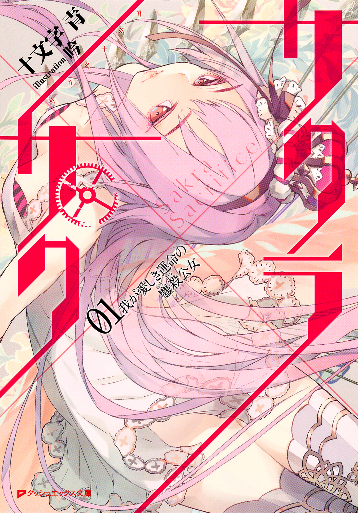
この本は縦書きでレイアウトされています。
また、ご覧になる機種により、表示の差が認められることがあります。
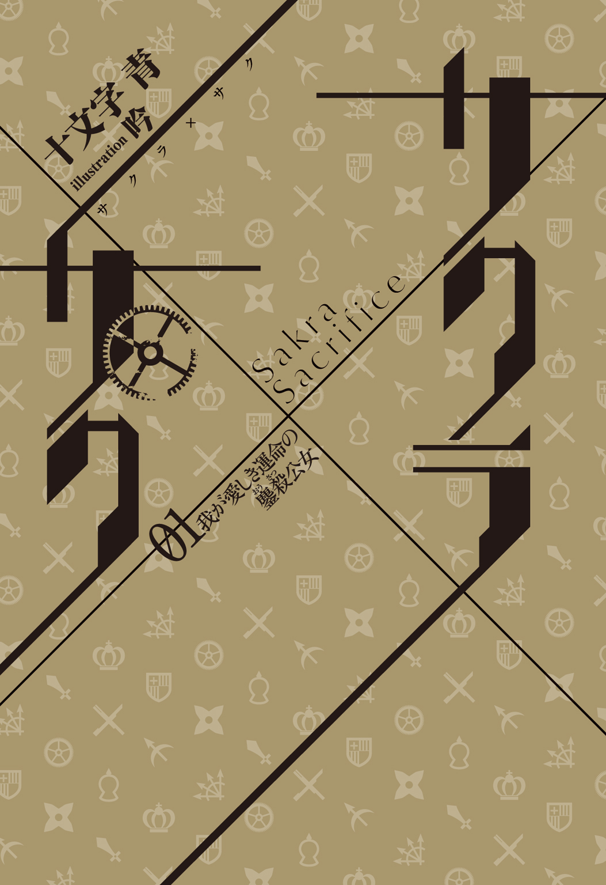
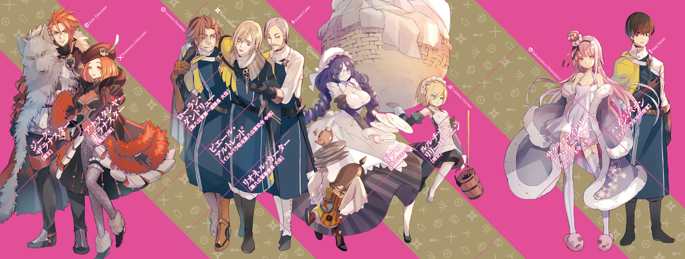
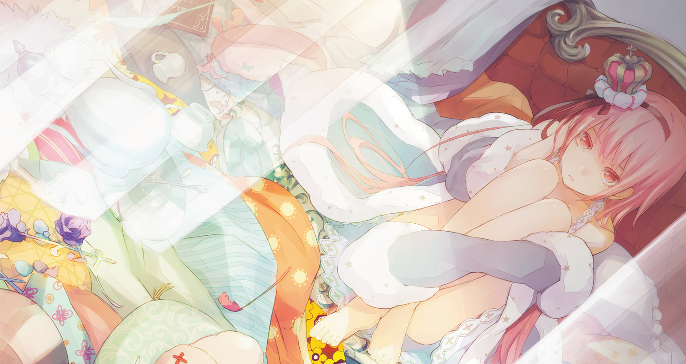
 ダッシュエックス文庫DIGITAL
ダッシュエックス文庫DIGITAL
サクラ×サク ０１
我が愛しき運命の鏖殺公女
十文字 青
１ 壊れそうな純情の惨状 BREAKING EVEN
ついに。
とうとう。
一人も友だちができないまま、学校を卒業してしまった。
馬車は揺れる。ゴトゴトゴトゴト、揺れつづけている。
公用の二頭立て、最大六人乗りの四輪馬車なのに、乗っているのはたった一人、ハイジ・バランだけだ。あいもかわらず、ハイジは一人だ。
公立学校では世間話をする相手すらいなかったので、ハイジはひたすら勉学と実技と修練に励んだ。没頭した。仕方ないじゃないか。ハイジは馬車の座席で頭を抱える。だって、他にやることがなかったのだ。
おかげで、物の見事に飛び級してしまった。飛び級と言えば聞こえはいいが、とんでもない。飛び級したらどうなるか。上級生が同級生になってしまうのだ。そんな環境で友だちができるだろうか。できるわけがない。実際、できなかった。ひどい。
あまりにもひどすぎる仕打ちだ。
ハイジはただ真面目に、一生懸命がんばっただけなのに。
なぜだろう。ハイジは涙をこらえて馬車の天井を見上げる。生まれ育ったトクタリ邑でもずっとだめだった。理由はハイジ自身にもよくわからない。とにかくうまくやれなくて、気がつくと友だちらしい友だちはいなかった。
でも、公立学校には、田舎からも都会からも大勢が集まってくるのだ。変わった人、おとなしい人、過激な人......きっといろいろな人がいるだろう。馬が合う者の一人や二人、いないわけがない。いる。絶対、いる。ということは、友だちの一人や二人、自然とできるはずだ。
できないわけがない。
必ずできる。
ハイジはそう思っていたのだ。正直、楽観していた。自信さえ、なくもなかった。
「......なのに、どうしてなんだ......」
つい、声に出して呟いてしまった。
本来なら十八歳の年に修了するデスティニア公立学校の全課程を、ハイジは優秀な成績を収めてバエル大王38年、つまり今年の春、十七歳で終えた。
公立学校を卒業した者は、公国に仕える公吏か、公国に命を捧げる軍人になる。
教官にすすめられるまま、ハイジは軍人の道を選んだ。
そして、たった一人、馬車に揺られて、任地にたどりついてしまった。
×
デスティニア公国は、三年前から帝国の侵攻にさらされている。
帝国は、
「天上天下唯一の皇帝が君臨する無二無三の帝国である」
と宣して、国号を名乗らない。自称も他称も、ただの帝国だ。
帝国は圧倒的な武力で十一年前に西大陸を統一すると、すぐさま東大陸にも魔手をのばしてきた。この十年余りで、帝国に攻め滅ぼされた東大陸の国は数知れない。
ハイジの任地イエルヴァラは、帝国の侵攻を防ぎ止める、デスティニア公国の盾だ。
ちなみに、公国の街はだいたい城壁にぐるっと囲まれている。城壁がある街は城市、城壁がない街は市や邑と呼ばれ、イエルヴァラは当然、城市だ。
ハイジを乗せた馬車はもう、城壁の内側に進入している。
車窓の外を流れてゆく街並みを眺めながら、ハイジは、まあそこそこ、それなりに栄えているかな、と思ったりしている。トクタリ邑出身の田舎者が偉そうに。でも、ハイジはつい先日まで、公国最大の大都会、公都デスティニアレスで学校生活を送っていたのだ。とはいえ、何しろ友だちがいなかったものだから、休みの日も自習と自主訓練に明け暮れていて、街に繰りだしたことなど一度もなかったのだが......。
それにしても、ずいぶん落ちついている。
最前線の城市ということで、もっと物々しい雰囲気をハイジは想像していた。そうでもないどころか、住民たちはいたって普通に生活しているようだ。
「ちょっとだけ、安心した......かな」
ハイジは学校を卒業した途端、いきなり危険な土地で軍務に服することになった。当然、恐ろしい。不安だらけだ。むしろ、不安しかないと言ってもいいほどなので、そのへんはあえて考えないようにしていたくらいだ。
なんとか考えないようにしてもつい考えてしまって、最悪、到着したら戦闘中でした、といったことさえありうるのではないか――そんな予想が頭をよぎったりもしていたが、どうやらそれはなさそうだ。よかった。ハイジはため息をつく。実戦なんて、まだ無理だ。
やがて馬車が停まった。
馬車から降りたハイジの前に、煉瓦で固められた城壁がそびえ立っている。
イエルヴァラの主郭だ。この城市の中にある城には、城市の太守が居住していて、城市に駐留している公軍の司令部もある。ここから先は馬車では行けない。
「......よし」
ハイジは一つ息を吐き、顎を引いて、うなずいた。主郭の前に立っているのは、公立学校の生徒ではない。デスティニア公国軍の軍服をその身にまとい、准尉の階級章をつけている。新入りの未熟者とはいえ、ハイジ・バランはれっきとした軍人なのだ。
ハイジはきびきびと馬車の御者に一礼すると、荷物を背負って主郭の門に近づいていった。門の前には斧槍を携えた衛兵がいる。躰をすっぽりと覆う外套を身につけ、剣と短剣を帯びたその兵装は、戦時と変わらないものだ。ハイジは気が引き締まるのを感じながら、衛兵に用向きを伝えようとした。のだが――、
「......はっ!?」
何だろう。何か、気配が。上......だろうか？ 頭上？ ハイジは慌てて振り仰いだ。
「うっ――」
噓、とハイジは言おうとして、途中でのみこんだ。噓なんかじゃない。落ちてくる。
頭を下にして、まっさかさまに。何が？ 何だ？ あれは――人......？
どうも人らしい。
人間が落ちてくる。
「ぅぅぅぅぅううぅぅぅぅわぁぁぁぁぁぁぁああぁぁぁぁぁぁぁぁぁぁぁぁぁ......!?」
なぜ？ どうして人が？ どこから？ いや、どこも何も、上だ。上って、どこの？ 門か。門の上から？ どうしよう、どうすれば、とハイジは思った。どうにかしないと。だって、下は石畳なのだ。落ちてきて、そのまま石畳に叩きつけられたら、あの人......死んでしまいかねない。というか、けっこう高さがあるし、まず死ぬだろう。でも、衛兵がいるから――、
「おお!? おおおおお!?」
だめじゃないか！ 衛兵は右往左往している。あてにならない。やるしかないのか!?
「オッ、オーライ......！」
ハイジは両腕を広げた。オーライ？ オーライなのか？ 本当に？ 迷っている場合じゃない。もう猶予がないのだ。ハイジは走って、位置を調整する。だいたいこのあたり――いや、間違いなくここだ。飛びつくようにして、キャッチ。重い！
「――くっ......！」
衝撃がすごくて取り落としそうになったが、なんとか持ちこたえた。ハイジは、ふう......と、ため息をついて、腕の中の男を揺さぶる。そう。
それは男だった。なぜよりにもよって男なのか。なぜも何もクソも、とにかく男なのだからしょうがない。軍服を着ているので、軍人なのだろう。
「あの、だ、大丈夫ですか!?」
「......う、うぅん......」
男は薄目を開けた。ハイジよりはずっと年上だろうが、この男、なんというか――ものすごい美男子だ。もっとも、かなり瘦せていて、目の下に隈ができている。軍人なのに、ずいぶん不健康そうだ。声もかすれていて、弱々しい。
「あぁ......あれ？ 私は、どこに......？」
「え、どこって――そ、そうですね、僕の、腕の中に......？」
「なぜ......？」
「いや、それは......わかりませんけど。いきなり落ちてきたので、受け止めて......」
「ということは、私はきみに......助けられた......？ 助けられてしまった......？」
「......そう――いうことに、なりますかね。一応。はっ......！」
「どうかしたのかい」
「い、いえ......」
ハイジは気づいてしまったのだ。こんなに長く他人と会話をするのは、じつに久しぶりだということに。もちろん、だからどうしたということもない。そうだ、とハイジは自分に言い聞かせた。どうってことないじゃないか。生きている人間なのだから、話くらいするさ！
ハイジは男を下ろした。立つと、男はけっこう上背がある。ハイジは173センチル（＝約173㎝）くらいで、十七歳の男子としてはまあ平均的な身長だが、男はそれより10センチルほども高いだろう。長身だが、肩幅が狭くて、ひどく薄っぺらい。お世辞にも軍服が似合うとは言いがたい躰つきだ。
そもそも、本当に軍人なのか。なんとも頼りない。もしかして、偽軍人？
「あぁっ......」
と、男がふらついて倒れそうになった。ハイジは慌てて男を支えた。
「......だ、大丈夫――じゃない、ですよね。顔色も、とても悪いですし」
「すまない......うっ」
男は、今度はゴホゴホと咳きこみはじめた。ひょっとして、重病？ もうやばい？
「え、ええと、こういうときは......」
ハイジは男の背中をさすってあげた。これで少しでも楽になってくれるといいのだが、もしこの男が偽軍人だったら？ どうやら、そんなことはないようだ。衛兵が近づいてきた。
「し、司令――」
「司令!?」
ハイジは目を剝いた。
「ん？」
男が涙のにじむ灰色の瞳でハイジを見かえした。捨てられて死にかけている哀れな飼い犬を思わせる目だった。どう見てもまったく軍人らしくないのに、男は軍服を着ている。衛兵は男を司令と呼んだ。
ハイジは遅まきながら男の階級章を確認して、気が遠くなりかけた。
それはたしかに中将のものだった。
×
つまり、ハイジ・バランは偶然、図らずも、着任早々、イエルヴァラに駐留しているデスティニア第八公軍の司令、ピエール・アルトレッド中将の命を救ってしまったのだ。
なんでも、アルトレッド司令は躰があまり丈夫ではなくて、たまに貧血か何かで卒倒してしまうことがあるのだという。
今回は、主郭の門の上にある楼閣で、手すりから身を乗りだしてイエルヴァラの街並みを眺めていた際に、運悪くそれが起こってしまった。結果、司令は落下して、ハイジが間一髪、受け止めた。
ついでにハイジは、司令本人に第八公軍司令部まで案内してもらうという、大変な栄誉に浴した。
というか、司令はハイジが肩を借さないとろくに歩けないような有様で、途中、また失神しかけたものだから、そこからは丁重に抱きかかえて運ぶことになった。
「すまないね、ハイジ・バランくん......着任早々......」
「いえ......」
「ハイジ・バランくんで、よかったよね......？」
「は、はい。本日付で在イエルヴァラ第八公軍に着任しました、ハイジ・バラン准尉です」
「ハイジくんで、いいかな......？」
「え......い、如何様にでも......」
「いかよう......？ ずいぶん難しい言葉を使うのだね......」
「す、すみません......」
学校では、講義中に文語調で論じるくらいで、あとは決まりきった受け答えで事足りた。友だちがいなくて雑談をする機会もなかったわけだから、そんなものだろう。
ようするに、ハイジは喋り慣れていない。おかげで言葉遣いが多少変なのだ。
司令は、ふむ、とうなずいて、
「じゃあ、ハイジくんでいいかな......きみは、優秀なのだろう？」
「そ、そのようなことは......」
「よかったよ。成績。飛び級までしているし。それに、独立独歩の精神を持っていると、評定にあって――」
それは、友だちがいなかったから、誰の影響も受けようがなかったし、何でも一人でやるしかなかっただけです――とも言えない。ハイジは、なんだか胸が痛いなあ、と思いながら、にじみそうになる涙をこらえた。
「......光栄です」
「最近、少ないからね。そういった人材は。何だろう。空気を読んで周りにあわせるのは上手なのだが、自主性や積極性に欠ける若者が多くて......」
「はあ......」
「ちょうど欲しかったのだよ。きみのような......ぐふっ......」
「だ、大丈夫ですか!?」
「......いや......あまり、大丈夫でもない......すまない......本当に......ごふっ......」
明日にでも、いや、今日中に息絶えてしまいそうな司令を大事に抱えて司令部に行くと、銀髪で口髭が立派な壮年の士官が血相を変えて駆けよってきた。
「司令！」
「......ああ、カーター」
司令はハイジの腕の中で儚い微笑みを浮かべた。
「またかよ」
そう言って頭を搔いたのは、また別の士官だ。階級章からすると大佐のようだから間違いなく士官なのだが、なんと戦時でもないのに無精髭を生やしている。長身の偉丈夫ではあるものの、全体的になんともだらしない。
「今度はいったいどこでぶっ倒れてたんです、司令。場所だのタイミングだのが悪けりゃくたばっちまうことだってあるんだ。具合がよくねえなら、黙って寝てりゃいいのに」
実際、倒れた場所が悪くて死ぬところだった。たまたまタイミングがよかったせいで死なずにすんだのだが、ハイジは黙っていた。というか、司令部の入口付近で司令を抱いたまま、身じろぎもできないでいる。何しろ、司令部には大勢の士官がいて、一人の例外もなくハイジより年長で、階級が上なのだ。そして、その全員がハイジを見つめている。これが緊張せずにいられるだろうか。
「まったく......」
長身の大佐がハイジから司令を引ったくって、逞しい両腕で抱えた。
「世話の焼ける人だ」
「......これでも、自覚はあるんだがね。ダンドリュー......」
「そうは思えませんよ」
「ところで、きみは？」
銀髪口髭の、司令にカーターと呼ばれた士官がハイジの顔をのぞきこんだ。彼もまた大佐らしい。
「はっ、は、は、はっ......」
ハイジは左胸に右の手刀をあてる公国軍式の敬礼をしようとしている――のだが、躰がうまく動いてくれない。ど、ど、ど、どうしよう。
「あぁ......」
ダンドリューという名らしい背の高い大佐の腕の中で、司令が大儀そうにハイジのほうへと首を巡らせた。
「彼は......あれだよ。ほら、新任の......」
カーター大佐はかすかに眉を上げた。
「ハイジ・バラン准尉？」
「は、はいっ！」
ハイジはようやく極度の緊張による呪縛から解き放たれて、敬礼することができた。
「本日付で在イエルヴァラ第八公軍に着任しました、ハイジ・バラン准尉であります！」
「リオネル・カーターだ。幕僚長を務めさせていただいている。以後よろしく」
「はっ！ よろしくお願い致します、カーター幕僚長！」
「ん」
カーターは顎を引くようにうなずいて、口髭をわずかにゆがめた。微笑んだのだろう。
幕僚長はいい人だ。絶対、いい人に違いない。ハイジは感涙にむせんでしまいそうになったが、そこはもちろん我慢した。病弱そうな司令や、無精髭の大佐と違って、幕僚長はかなりまともそうだ。やはり軍人たるものは、是非こうあって欲しい。
「ずいぶん活きのいいやつを引っぱってきたもんだな」
ダンドリュー大佐は司令を抱いたまま器用に肩をすくめてみせた。
「ま、せいぜいがんばれ、青二才。いっそのこと、俺が帝国をぶっ潰してやるくらいの気概を見せてみろよ。若いんだからな」
「帝国を......」
ハイジは目が開かれる思いがした。帝国をぶっ潰す。乱暴な表現だが、それくらいの大きな目標を立てて突き進むべきなのかもしれない。帝国をぶっ潰す！ そうだ。我がデスティニア公国の安寧を脅かしている帝国の打倒は公国軍の大目的なわけだから、公国軍の士官であるハイジは当然、それを目指すべきなのだ。ダンドリュー大佐もいいことを言う。さすが大佐だ。ハイジはダンドリュー大佐の目を見かえした。この手で帝国をぶっ潰してやる！
「やります」
「お、おう」
ダンドリュー大佐は片方の眉を上げて、そうか......と、呻くように言った。
「はい！ お任せください！」
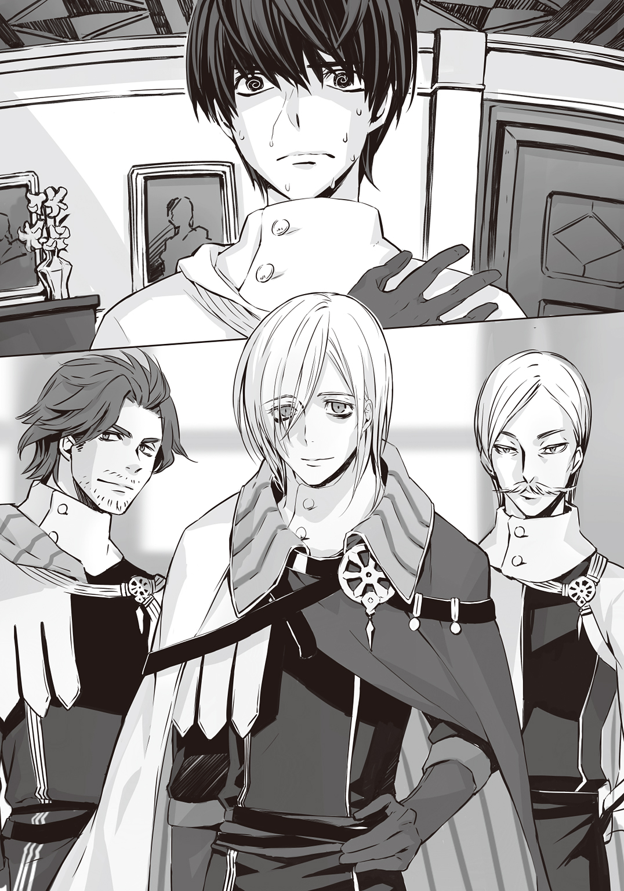
ハイジが腹の底から力いっぱい返事をすると、司令が、は、は、は......と今にも途切れそうな笑い声を立ててから、ゴホグハゲヘッとひとしきり咳をした。涙目になっている。
「......その調子でお願いするよ、ハイジくん......ところで、きみの仕事なんだが――」
×
「侍官、か......」
ハイジ・バラン准尉の前には鋼鉄で補強された漆塗りの黒い扉が立ちはだかっている。
「しかも、太守付きの......」
落胆しているわけでは決してない、が――それか、という思いがハイジの中にはある。
でも、これは正式な辞令なのだ。帝国をぶっ潰せるような役職ではなさそうだが、従うしかない。そんなわけで、ハイジはここにいる。太守の私室の前に。なぜ、私室......？
これがまったく奇妙な話で、太守が公務をこなすための執務室もちゃんと用意されている。それなのに、幕僚長のカーター大佐が言うには、イエルヴァラの太守はたいてい私室にいるのだという。私室、すなわち寝起きする部屋に。
太守は城市及びその一帯の責任者で、政治と軍事の統括者だ。ものすごく多忙だろうから、たとえば、寝る間も惜しんで一日中、私室で公務に励んでいる......とか？ もしかしたら、そういうことだってあるのかもしれない。ないかもしれない。ハイジにはわからない。
「太守......」
ハイジは胸を押さえて、ふうぅ......と息を吐いた。当然、任地に関する情報はある程度、与えられている。だからハイジは、在イエルヴァラ第八公軍について、それから太守についても、民間人よりは詳しく知っているはずだ。
イエルヴァラはそんじょそこらの城市とは違う。防衛上の要地だ。ゆえにその太守は、ただの軍人でも、公吏上がりでもない。なんと、我らがデスティニア公国の君主、ハイジの主君であるデスティニア公ドリアン殿下の、まごうことなき実子なのだ。
かといって、いわゆる親の七光りではない。若くして公国軍に身を置き、赫々たる武勲を立てまくって堂々と大将に昇進、ついには要害の地イエルヴァラを任されるに至ったのだとか。そんな華々しく勇ましい経歴からすると、さぞかしものごっそい御方なのだろう。なお、ごっそい、というのはハイジの故郷の方言で、厳つい、怖い、といったような意味だ。もの、は強調。ものごっそい、だと、大変厳つい、めっちゃ怖い、となる。
実戦以外には興味がない、根っからの武人とか、そういう感じの人なのだろうか。それもこれもまあ、会えばわかることだ。
ハイジは咳払いをして、扉を叩いた。
返事はない。
少し間を空けて、また叩いた。
反応がない。あれあれあれ？ 不在ですか......？
ハイジは額に滲む冷や汗をぬぐった。どうしよう。ええい、ままよ。こうなったらもう、思いきって声をかけてみるしかない。
「ほっ、本日付で太守付き侍官を拝命しました、ハイジ・バラン准尉であります！ 太守閣下はご在室でありましょうかっ！」
「......るさい」
というような声が、扉の向こうから聞こえた――ような気も、するような......？
「は......？」
思わず訊き返すと、何かが扉にぶつかったような音がした。
「――るさいって言ってるの！ 鍵はかかっていないから、入ってくればいいでしょ！」
「は、はい！ 申し訳ありません！ し、失礼します......！」
ハイジは慌てて扉を開け、太守の私室に足を踏み入れて――即座にあとずさった。
「き、汚っ......」
「何か言った？」
「ぃぇ......」
ハイジは手で口をふさいだ。――言ったよ？ 言いましたよ？ 何を言ったかは言えませんけどね？ 開いた口が手でふさがないとふさがらないような状態だし？ いやあ......しかし、これは......すごい。部屋。
太守の私室。これが。
ごくごく控えめに言っても、散らかっている。
クローゼットは開けっぱなしだし、寝台は天蓋付きだが、その天蓋が外れかけているし、窓のカーテンも同じだし、机も椅子も倒れているし、鏡台の鏡は割れているし、寝台の上にも、床にも、衣類やら、タオルやら、シーツやら、毛布やら、皿やら、コップやら、それらの破片やら残骸やら、書物やら、紙やら、筆記用具やら、パンらしきものやら、菓子のようなものやら、木工細工やら、壊れた楽器やら、動物か何かを象った置物のような物体やらが、足の踏み場もないほど散乱している。
得体の知れない液体をこぼしたと思しき跡も見受けられる。それをざっと拭いてぐちゃっと丸めたらしい布は、でもたぶん、ただの布きれじゃなくて、衣服だろう。
一言でいえば、汚部屋だ。
二言でいえば、すごい汚部屋だ。あるいは、ひどい汚部屋、と言うべきか。
そして、その見るも悲惨な部屋の主なのだろう人物が、寝台をびっしりと埋めつくしている雑多な品々の上で、うつぶせになっている。
ありえない。ハイジはそう思わずにいられなかった。何だ、これ。ありえない。
ハイジは目をつぶりたかった。両手で目を覆うべきかもしれない。しかし、できない。ハイジはどうしても彼女から目を離すことができずにいた。
きらめく白金をとかして淡い色の薔薇のしずくを混ぜたような色あいの長い、長い髪の毛が、彼女の躰や、寝台の上に堆積している品物の上に、静かに広がっている。
女性は男よりずっと華奢で、繊細で、まるで壊れ物のようだと、ハイジは思っていた。ハイジの母親は健康で頑丈な働き者で、すこぶる逞しい人だ。それでも男とは違う。骨格や筋肉の質が根本から異なっているのだ。
その壊れやすそうな女性というものを、ハイジは今、まざまざと見せつけられていた。
彼女は薄衣しか身にまとっていない。というか、あれは、服......なのか？ ハイジにはよくわからない。いや、やっぱりあんなもの、服とは呼べないだろう。女性は極力、肌を出さないものだ。ハイジの母親だって、洗濯のときなどに腕まくりをするくらいで、足首まで届く長いスカートの裾を持ちあげることさえ、人前ではしなかった。それなのに、彼女は。
ああ、彼女は......彼女が身につけているものは、丈がきわめて、不埒なほど短くて、短すぎて、脚が――すらっとしていて、折れそうなほど細いのに、ただまっすぐなのではない、ゆるやかでたおやかな素晴らしい曲線を描く脚が、な、ななな、なんと膝、それどころか、膝の上までのぞいている！
彼女は裸足だ。
ハイジは女性の何もつけていない足を、生まれて初めて見た。人として生きる中で、女性の足の指や足の裏を目にすることがあるなんて、想像だにしなかった。
それに、腕。何だ？ あの腕は？ 腕？ 腕なのか？ あんなものが？ 筋肉はどこについているのだろう？ 骨は？ ちゃんとあるのか？ 指で突いたら、どこまでも入ってゆきそうだ。肩ですら、とてつもなくやわらかそうだ。肌。
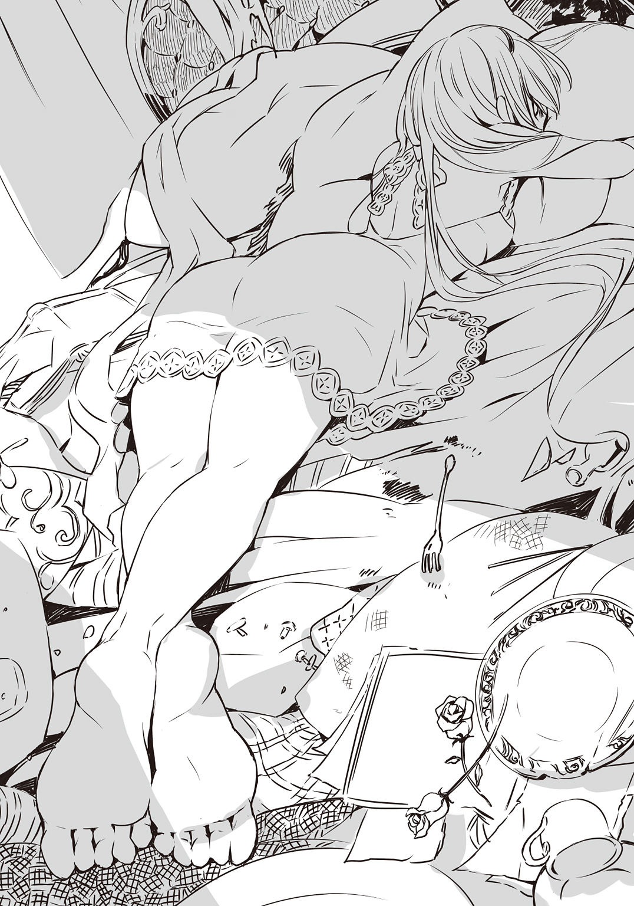
そう。肌の質感がおかしい。あれが人間の肌だというのか。肌ってあんなものだっけ？ いや、違う。違うはずだ。だって、一点の染みもない。くすみもない。産毛すら生えていそうにない。つるつるだ。すべすべしていそうだ。ハイジは考えこんだ。もしかして――ひょっとすると女の人には、髪の毛や眉毛や睫毛以外の毛は生えないのか？ それとも、彼女だけがそうなのだろうか？
白い、透きとおるように白くて、さわったりしたら消えてなくなってしまいそうなくらい儚い、なんだか噓みたいな、幻のような肌だ。
そうか、これは現実じゃないのかもしれない、とハイジは思い至った。幻のような、じゃなくて、本当に幻なのかもしれない。ハイジは白昼夢を見ているのかもしれない。そうだ。そうだよ。そうに違いない。だいたい、そもそも変だ。
最前線の任地にきたら突然、司令が降ってきて？ いきなり太守付きの侍官なんかに任命されて？ 太守の私室は汚部屋で？ こんなに汚い部屋に、幻のようにきれいな、しかもあられもない恰好をした女の人がいるなんて、変だ。あまりにも変すぎる。これはきっと、夢だ。
ハイジは確かめることにした。自分の頰を思いっきりひっぱたいてみたのだ。
「痛ぁっ......!?」
「......何してるの」
彼女はうつぶせのまま、顔をハイジのほうに向けた。髪の毛の合間から、信じがたいことに、薄紅色の瞳が見えた。なんて色だ。
「......な、な、何......と、と、と......い、言わ、お、おっしゃいますと......何......」
だめだ。無理だ。無理。無理。絶対、無理。言葉が出てこない。もともとハイジはてんでアドリブがきかないのだ。そのうえ彼女がいる。幻のような彼女を相手に、ハイジは喋っているのだ。幻みたいだが、叩いた頰は痛かったので、夢じゃない――ということは、現実？
「え......つ......つまり、つ、つま......ぼ、僕、わ、私、は、じ、自分は、そ、その......」
「だしぬけに自分を叩いたりして。そういうことして、楽しいの？」
「たっ、たた、たたた楽しっ......!? い、いえっ、そそそそ、そんなっ、ことは......」
「あなた、新しい侍官でしょ」
彼女はゆっくりと起きあがり、横座りの姿勢になって、髪をかきあげた。
「――っ......！」
ハイジは口をきつく閉じた。妙な声を出してしまいそうになったからだ。い、いけない、そんな体勢になったら、み、みみ、見え、見えて、見え――だめだ、見ちゃいけない、女の人の、そんな、脚とか、脚の付け根とか、だめだ、よくない、これは――死ぬ。死んでしまう。
ハイジは目線を上げた。胸元。ああ。べつに大きく開いているわけではないのかもしれない、でも、開いていないとは言えない、おかげで胸元が。む、むなっ、むな、胸......？ だ、だめだ、見るな、目の毒だ、猛毒だ、だからもっと、上へ――顔。彼女の、顔。
顔？
これが？ こんな顔が？ 人間？ ハイジと同じ人間の顔だというのか......？
違う。これは違う。違うったら違う。違いすぎる。同じじゃない。同じなわけがない。
ハイジは正直、女性は見慣れていない。まじまじと顔を見たことがある女性といったら、母親と妹くらいだ。そうはいっても、女性の顔とはこういうものだというイメージはある。
当てはまらない。まったく。これっぽっちも。
女だろうと男だろうと、人間の目はあんなにくっきりしていて、それでいて独特の憂いを帯びていたりはしない。人間の鼻はもっとがっしりしていたり、高すぎたり低すぎたり、いくらかは曲がっていたりするものだ。人間の唇は大きすぎたり小さすぎたり、薄すぎたり厚すぎたりする。どこからどう見ても、何度見なおしても、明らかに、完全にちょうどいい、などということはないはずだ。だいたい、躰と顔のバランスがおかしい。なんであんなに顔がこぢんまりとまとまっているのか。人間の頭部はもっともっと大きいはずだ。
現世の理が通用しない異界ならいざ知らず、この地上にこんな生き物が存在するのか。
ありえない。
完璧だ。
何かが、途方もなく熱いものがこみあげてきて、ハイジの視界が一瞬で曇った。
彼女はぎょっとしたように目を瞠った。
「......どうしたの、あなた。いきなり、泣きだして。変態なの？」
「えっ」
ハイジは扉を押さえたまま、目の周りをさわった。濡れている。たしかに。これは......？
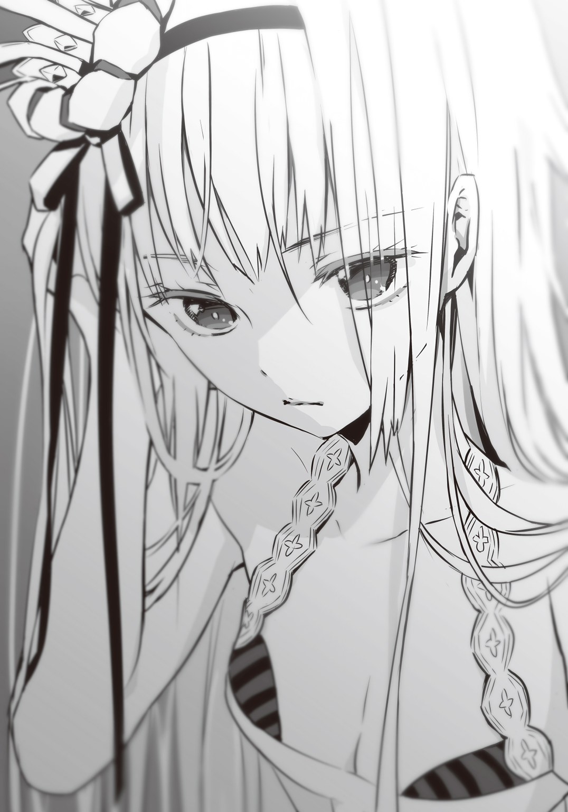
もしかして、涙？
ハイジは泣いているのか。最後に泣いたのはいつのことだろう。覚えていない。あまり泣かない子だったと、母親に言われたことがある。そんなハイジが泣いている？ なぜ？ というか、男が、軍人が、泣くなんて。ハイジは涙をぬぐった。
「し、失礼しました！ た、太守閣下の御前で、と、と、とんだ、ご無礼を......」
「無礼かどうかはよくわからないけど」
彼女は片方の膝を立てて、ため息をついた。だから、そんなふうに膝を立てたりしたら見えてしまうので、どうかやめないで――じゃなくて、やめて欲しいとハイジは切に願った。
「あなたがとても変な人だということはわかった。それで？」
「――は......？ それで、とは？」
「あなたはいつ、わたしを殺しにかかるの？」
「え？ ころ？」
「どうせまた、誰かが送りこんできた刺客なんでしょ」
「しか......？」
ハイジは首をひねった。彼女は何を言っているのだろう。どうして彼女はたぐいまれな薄紅色の瞳でじっとハイジを見すえているのだろう。
まるで、ハイジの内側をのぞきこもうとするみたいに。ハイジを見極めようとしているかのように。
「ぼ、僕は、あの......本日付で在イエルヴァラ第八公軍に着任し、アルトレッド司令により太守付き侍官に任命された、ハイジ・バラン准尉、ですので......その......し、しかく？ というようなものでは、ないのではないかと......」
「ハイジ・バラン」
「はっ、はい！」
「あなたはそれを証明できる？」
「......証明」
「自分が信頼に足る人間だと、証明できるの？」
「それ、は――」
ハイジはあとずさりしそうになった。
今すぐこの部屋をあとにして、扉を閉めてしまいたい。ハイジは鳥肌が立っていた。口の中が乾ききっている。彼女はただ美しいだけの少女ではない。見つめられて、質問をぶつけられた。それだけなのに、喉元に鋭く冷たい刃を突きつけられているかのようだ。
答えなければならない。曖昧な、あるいは適当な返事をしたら、とんでもないことになる。ハイジはそう直感していた。でも......証明？ どうやって？
必死に考えていると、足音が聞こえてきた。廊下だ。誰かが近づいてくる。尋常じゃない、殺気のようなものを感じて、ハイジは振り返った。
「――こど、も......？ わっ......」
押しのけられた。せいぜい十二歳かそこらの女の子が、ハイジを腕ずくでどかせて、太守の私室に飛びこんできたのだ。ただ、その服装って――もしかして、メイド？ こんなに若いというか、幼い女の子が......？
「サクラ様......！ 今日は新任の侍官が挨拶にいらっしゃるはずなのですから、お部屋を片づけてくださいと、このルルチナ、再三再四申しあげたはずで――」
メイドっぽい服を着た女の子は、首筋のあたりで切りそろえた金髪を振り乱してくるっと振り返り、ハイジを見た。
「あなたが新任の侍官ですか。ルルチナの記憶が正しければ、ハイジ・バラン准尉でしたね。申しあげるまでもなく、ルルチナの記憶が間違っているわけもないのですが」
「......はい。僕――いや、私、いや、自分が、その......ハイジ・バラン准尉です」
「失礼ですが、うかがっていた経歴にそぐいませんね」
女の子は品定めするような、容赦なく突き刺すような目つきで、ハイジの全身を眺めた。
「公立学校を非常に優秀な成績で卒業した、独立独歩の精神を持つ昨今稀に見る雄々しい准士官だと、司令はおっしゃっておりましたのに」
「......も、申し訳ないです」
「ありていに申しあげて、お見受けした印象は、普通、ですね。ド普通です。特徴らしい特徴もなく、しいて申しあげれば――さようでございますね、根暗そうです」
「はい......そのとおりだと思います......」
「まあ、よろしいでしょう。司令がお決めになったことです。一介の侍女が口を差し挟む筋合いではありません」
そのわりには偉そうですね、子供なのに――と言いたかったが、言えるわけがない。ハイジはまたもや泣いてしまいそうだった。この子、ものすごく怖い。
「ルルチナ・リリーローエンです」
女の子はほとんど平らな胸を張って、自分よりずっと背の高いハイジを物の見事に見おろしてみせた。
「あくまで一介の侍女にすぎませんので、ルルチナとお呼びください」
「......よ、よろしくお願いします、ル......」
「ルルチナとお呼びください」
「ル、ルルチナ」
ハイジは呼び捨てにしてみた。言われたとおりにしただけなのに、ルルチナの表情が険しくなった。
「はい？」
「ル......ル、チナ......？」
「ええ。どうか、ルルチナと」
ものすごい威圧感だ。ハイジは胸が締めつけられて息ができなくなり、窒息寸前まで追いこまれた。やっと理解した。つまり、こういうことなのか。
「――ルルチナ、さん」
そう呼んだら、ルルチナは首をちょっとだけかたむけて、にっこり微笑んだ。何だ......と、ハイジは思い、ほっと一息ついた。笑うと、野に咲く小さな花みたいに可憐じゃないか。あくまで、笑うと、だが。
「それでは、准尉。ルルチナがいろいろとご案内いたします。司令から、そのように仰せつかっておりますので」
「えっ。あっ、は、はい、ルルチナさん、で、でも――ですがあの、まだ......」
ハイジは太守のほうにちらっと目をやった。
くらっとした。
太守の姿を見るたびに、ハイジはアルトレッド司令のように躰が弱いわけではない、丈夫なだけが取り柄といってもいいほどなのに、卒倒してしまいそうになる。もしハイジが太守の親なら、これ、そんな恰好をしてはいけません、と叱りつけるところだ。当然、叱るわけにはいかないので、ハイジとしては懇願したい。どうかちゃんとした服をお召しになって、しゃんとしていてください。そうしてくれないと、ハイジ・バランは早晩おかしくなってしまう。
「......ご、ご挨拶が、まだ......途中というか、中途というか......」
「ああ」
太守はなぜか、ぱたっと横になってしまった。
「そうだった？ どうでもいいけど」
「......よ、よくはないかと」
「口答えするんだ」
「い、いえ！ 決して！ そういう、つもりでは......」
「わたしはサクラスティアリス・デスティニアリス。ドリアン公の四女で、階級は大将。ついでに、イエルヴァラの太守」
太守は腹のところで両手を組みあわせて、深い森の奥で永久の眠りにつく姫君のように目をつぶった。
「よろしく、准尉。わたしを殺したいなら、いつでもやって。どうせ、無駄だけど」
×
ルルチナの案内で主郭の中を一巡りする間、ハイジはべつに上の空だったわけではない。でも、頭の片隅には常に太守のことが――具体的には、太守の大御足やら御胸元やら御尊顔やらがこびりついていて、離れてくれなかった。あるいは、ルルチナはそれを見抜いていたのかもしれない。
「サクラ様はドリアン公の四番目のご息女であらせられ、かつ軍功高き公国軍大将でおありになり、このイエルヴァラの太守でいらっしゃいますが、御年いまだ十六歳です」
太守の私室へと戻る道すがら、ルルチナは急にそんなことを語りだした。
「准尉は飛び級して公立学校を卒業なさっておいでですので、十七歳でいらっしゃいますね。サクラ様は、お若い准尉よりも一つ年下でいらっしゃるということです」
そう言うあなたはもっと年下なんじゃ――と思わずにいられなかったが、女性に年齢を訊くのは非礼だということくらい、ハイジもわきまえている。
「......はい。異例......ですよね。そのような若年で、大将にご昇進されるのは......」
「公家の方々が軍籍に入られますと、ただちに大佐に任じられます」
「ぞ、存じています、一応。ですから、少将、中将、大将――で、三階級ですけど、将官ともなると、そう簡単には......」
「サクラ様は、大将となられるに相応しい武勲を立てられました。比類なき魔性をお持ちとはいえ、たった十六歳の、うら若き女性が、です」
「魔性......」
ハイジも軍人の端くれだ。魔性のことはむろん、知っている。いや、軍人でなくても、魔性の存在を知らないのは赤子くらいのものだろう。
西大陸はいざ知らず、東大陸の王家や公家など、由緒ある名家の血を引く者は、たいてい魔性を持ってこの世に生まれる。
では、その魔性とはいったい何なのか。
一口で説明するのはなかなか難しい。一つには、その力の発現の仕方が千差万別だとされているからだ。
つまるところ、上流階級の者が生まれ持つ特別な力、それこそが魔性である、ということになるだろう。
ただし、実際は順序が逆で、魔性という特別な力を持っているからこそ、彼ら、彼女は人々を、国を支配し、導くことができた。魔性が彼ら、彼女らを王や公にしたのだ。
魔性は、ときにそれ自体が戦術的、場合によっては戦略的な価値を持つこともあるので、その詳細については口外無用ということになっている。それゆえに、公立学校で軍事教育を受けたハイジでも、主君ドリアン公の魔性さえ、あるということしか知らない。当然、公家の人々の魔性も同様だ。それは国家機密であり、必要がなければふれるべきではない。ふれてはならない。人の口に戸は立てられないし、情報の流出を完全に食い止めることはできないが、少なくとも興味本位で探っていいようなものではないのだ。
「おわかりにはなれませんでしょう」
ルルチナはかすかに頭を振った。
「逃れること能わぬ運命のもとに生まれ、重大な責務を果たされてきたサクラ様の御心の内は、余人の理解が及ぶものではありません」
「......太守閣下は、それで......あのようなお部屋に？」
「あれはまた別です」
ルルチナは即答した。何やら冷たい気配が、その小さな躰からみなぎっている。ハイジは震えた。――おっかないです、ルルチナさん......。
「よしんば関係があるとしても、認めるわけにはまいりません。あの惨状では、人間的な生活を送ることができないではありませんか。しかも、昨日、ルルチナが片づけたばかりですのに、たった一日で......サクラ様にはやはり、ご自身できれいにされることを覚えていただかなくては......だいたい、入浴さえ嫌がられるし......せっかく並外れて美しくお生まれになったというのに、なんともったいない......」
どうやらルルチナは、だいぶ苦労しているようだ。ハイジもこれから侍官として太守に仕えるわけだから、同じように苦労を背負いこむことになるのか。
まあ、苦労というか何というか、太守のそば近くにいるだけでも、かなり大変だろう。あんな恰好をした見目麗しい女性は、存在自体が凶器だといっても過言ではない。目の当たりにするだけで心臓に悪いが、つい見入ってしまう。見ていると頭の中が沸騰しそうになって、罪悪感に苛まれ、自死したくなってくる。ハイジ・バランはおそらく、近いうちに死ぬ。
「......なんか、違う」
ハイジは思わず呟いてしまった。
「何がでしょうか」
ルルチナに尋ねられてうまくごまかせるほど、ハイジは会話慣れしていない。
「いえ......なんというか、公立学校を出た准士官は最初、後方に配置されて、少し経験を積んでから前線へ、というのが通常らしく......ですが、僕、いや、自分は、どうしてか初っ端から最前線のイエルヴァラに......それで、自分なりに想像していたのは、もっとこう――」
「血湧き肉躍る戦場のような？」
「じ、自分は軍人ですから。戦争を、するのかな......と」
「公女様のお守りをする羽目になるとは、思ってもみませんでしたか？」
「そ、そのようなことは」
「ご心配なさらずとも、機会は巡ってまいりますよ、准尉」
ルルチナはそっと笑った。ハイジはなぜか寒気がして、身震いした。
「......そういえば、太守閣下をお一人にしてしまって、よかったんでしょうか。たしか、刺客がどう――とか......？」
足が、止まった。
行く手の右側に太守の私室の扉が見える。扉の前に、ボリュームのある黒髪をお下げにした女の人が立っていた。ルルチナと、躰つきはずいぶん違う――違いすぎるが、似た意匠の服を着ていて、盆か何かを抱えるようにして持っている。彼女も侍女なのか。いや、でも。
口にしたばかりの、刺客、という言葉がハイジの脳裏をかすめた。
お下げの女性はどことなくあやしかったのだ。
どことなくというか、あからさまに奇妙だ。
だって、お下げの女性は一人じゃない。彼女に従う、あれは――とても小さな、ルルチナどころじゃない、背丈はお下げの女性の半分どころか、三分の一もなさそうな、姿形こそ人に近いが、あれは人間、なのか......？ 違う。人間じゃない。あれは――人形だ。
ハイジは腰に剣を佩いている。准士官に貸与される、質素で実用重視の軍剣だ。
軍剣の柄に手をかけて駆けだそうとしたら、侍女の服を着たあやしいお下げの女性が、扉に向かって突撃した。
扉を開けずに、頭から突っこんだのだ。
「あひゃっ」
お下げの女性は当然、扉に額をぶつけ、ふらふらっ、くるっと回って崩れ落ちた。持っていた盆やその上に載っていたポットやら何やらは、そのへんにぶちまけられた。どういうわけか、人形も一緒に転んだ。
「......あの愚図」
とルルチナがため息まじりに言った。――ということは。
「ル、ルルチナさんのお知りあい......ですか？ というか、ご同僚......？」
「ええ、まあ」
ルルチナはすたすたと歩いて女の人に近づいてゆく。
「さようでございますね。恥ずかしながら、同僚ということになります。――ギチコ」
「......ふぁい」
お下げの女性がおでこを撫でさすりながらこっちを向いた。眼鏡をかけているが、ずれてしまっている。
大きいな......と、ハイジは思った。
同じ侍女の恰好をしているせいでルルチナと比較してしまうから、余計にそう見えるのかもしれない。でもおそらく、比べなくてもいろいろと大きい。背はハイジよりも低いだろうが、なんと言えばいいのだろう、嵩が張るというか。
体積が。
質量が。
ハイジはうつむき、目を閉じて、瞼を指で揉んだ。――だめだ。本当にだめだ。だめというか、よくない。やばい。非常にまずい。太守といい、ギチコ、という名なのだろうか、変わった名前のあの侍女といい、刺激が強すぎる。いやいやいや、落ちつけ、落ちつくんだ、とハイジは自分に言い聞かせようとする、落ちつけ？ どうやって？ 方法を教えてほしい。落ちつけないって。無理な相談だ。だって、何なんだよ、あの服。ルルチナの服と、似てはいるものの、違う。別物だ。別物にも程がある。
おかしい。絶対、変だ。女性は肌を出さないようにするものじゃないのか。それなのに、何だ。何なんだ、あの胸は。どういうことだ。見え見えじゃないか。見え見え？ 違うか。用法が違う。見え見えはこういう場合に使う言葉じゃない。でも、見え見えだ。見えすぎている。こぼれそうだ。はみだしている。胸が。胸。胸。胸。胸。胸。胸。胸。胸。胸！ 胸が！
ああ、どうしよう。ハイジは天井を仰いだ。どうすればいい？ いや、落ちつけ。興奮しすぎだ。興奮？ 興奮している？ 違う。そんなことはない。断じて違う。これは動揺だ。動揺しているだけにすぎない。興奮などするわけがないではないか。変態じゃないのだから。
ただ――ただ、あれだ、あのギチコという女性は、なんというか、質量が、体積が、すごい。まず胸が。とにかく胸が。胸が胸が胸が胸がががが。それから臀部も。何だろう。あれは何だ。贅肉？ 彼女はふとっているのか？ ふとっちょ？ よくわからないが、ふとっているのとは違うような気がする。だって、ふとっているのだったらハイジだって、ああ、ふとっている女性だな、と感じるだけのはずだ。ふとっているだけなら、こんなにうろたえたりしない。
どう表現するのが適切なのだろう。
むちっとしている？
むっちり？
むちむち......？
うわあああああああああああああああああああああああだめだ。考えるだけで頭がこんがらかる。ハイジ・バランはだめになってしまいそうだ。もうだめになっているのかもしれない。
「れ、冷静になれえ......！」
ハイジは目をつぶったまま自分の頰をばしばしと叩いた。ちょっと、落ちついた――かもしれない。目を開けると、ルルチナとギチコに見つめられていた。
「はっ......！ も、申し訳ありません！ と、取り乱してしまいっ......」
「......まるで免疫がおありにならないのですね」
ルルチナがそんな謎めいたことを言った。めんえき？ 免疫といえば、一度ある病毒に冒されて回復すると、同じ病気に罹らなくなる働きのことだ。ハイジはそう理解している。
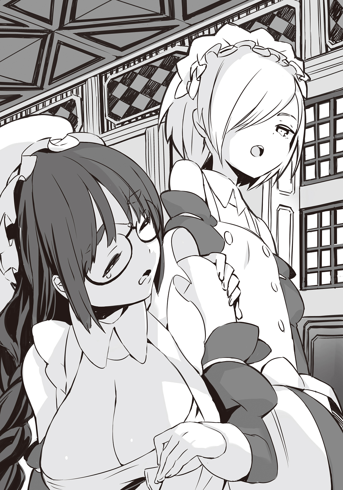
「これでも、健康には自信がありますけど......？」
「そういうことではございません。まあ、よろしいでしょう。問題がないとは申せませんが」
「も、問題があるなら、指摘していただいたほうが！」
「それは追い追いということで」
「......そ、そうですか」
「ギチコ」
ルルチナは、盆やポットやカップや割れたその破片を拾い集めようとしているギチコの肩をつかんだ。むちむちっとした肩を。
「およしなさい。ルルチナがあとで始末します。ギチコがやると、間違いなくかえってひどいことになるのですから」
「......うぅ。ごめんなさい、です」
ギチコは立ちあがろうとしたが、途中でまたこけて、今度は壁に側頭部をぶつけた。
「ぐにゃっ。......くううぅぅ......」
ギチコはしゃがみこんで頭を抱えた。
そのすぐ脇で、人形がまったく同じポーズをとっている。
いったいぜんたい、何がどうしてどうなってしまっているのか？
ギチコはむっちりむちむちしていてはちきれんばかりだし、人形は動いているしで、どうなってしまっているというか、ハイジがどうにかなってしまいそうだ。
「紹介しておきます、准尉」
こめかみのあたりを指で押さえながら、ルルチナが顎をしゃくってギチコを示した。
「この者は刺客ではなく、サクラ様に侍女として仕えているギチコです。ご覧になったとおりのふつつか者ですが、以後お見知りおきを」
「......は、はい。よろしくお願いし――」
ハイジは言い終える前にすっ飛んでいって、扉を開け放った。聞き違えじゃない。そう断言できる。太守の私室で大きな物音がしたのだ。
「太守閣下......!? 何が――」
汚部屋の真ん中あたりで、太守がすらりと長い脚を高々と上げていた。――こ、これは。
くらっときた。
服とも呼べないような薄っぺらくて丈の短い、短すぎる服がめくれて、そうとうなところまで見えている!? 見えてしまっている......!?
いやいやいやいや、今はそれどころじゃない。何だ？ 何があった？ 壁。壁だ。黒ずくめの男が、めりこむようにして壁にへばりついている。ということは？ 体勢、位置関係から察するに、もしかして太守があの黒ずくめの男を蹴り飛ばした？ 黒ずくめの男は吹っ飛んで、壁に叩きつけられた？ 女性で、たおやかな、華奢と言ってもいいだろう太守に、そんな芸当ができるのか？
「准尉？」
太守がハイジのほうに顔を向けて、脚を下ろした。そのときだった。
窓から別の黒ずくめが入りこんできた。
「た、太守......！」
ハイジは飛びだそうとした。何だろう。いやに躰が軽い。絶好調だ。ところが、矢のように疾駆しようとするハイジを、何者かが押しのけた。
「どきやがれ......！」
ルルチナだった――って、え......？ ハイジは呆気にとられた。その言葉遣いは？ というか、速すぎません？
ハイジは今まで生きてきて、一度たりとも喧嘩というものをしたことがない。でも、公立学校で士官コースに進み、軍人になるための訓練を一通り受けた。その中には模造剣を使った試合や、実戦さながらの模擬戦もふくまれる。真剣勝負の経験は皆無だが、ハイジなりに本気で幾多の強者と渡りあってきたつもりだ。
しかし、あれは――ルルチナは、モノが違う。
学校での訓練はあくまで訓練だ。どれだけ気合いを入れて全力を尽くしても、所詮、訓練でしかない。実際の戦闘はまったく違うものだろう。学校で抜群の成績を収めた准士官が、戦場に出た途端、恐怖で身がすくんで何もできないまま戦死する。そういうことだって充分ありうる。ハイジはそう考えていた。本物は段違いのはずだと。とはいえ、あれは。
ルルチナは素手だ。対して、黒ずくめはナイフを持っている。危険だ。それなのに。
「はははーっ......！」
ルルチナはかまわず、なぜか笑いながら突っこんでいった。
「こぉぉぉぉ―――――――のクサレ雑魚がぁっ......！」
「っ......！」
黒ずくめはルルチナをナイフで突こうとしたのだろう。それも、怖じけづいて反射的に、防衛反応としてナイフを出したのではない。あの構え。フォーム。ハイジは確信していた。黒ずくめは素人じゃない。明らかに玄人だ。黒ずくめは自分に攻めかかってくるルルチナをしっかりと認識し、殺られる前に殺ろうとして――でも、できなかった。
黒ずくめの予想を上回って、ルルチナが速かったからだ。
ルルチナは素手なのに、躊躇するそぶりを一切見せなかった。
素手だから、ルルチナは黒ずくめの顔面をグーで殴った。
ルルチナの拳はものごっそい音を立てて、黒ずくめの顔面をひしゃげさせた。
黒ずくめは空中でぐるぐるぐるっと横回転して床に落ちた。腕や脚が変な方向に曲がっている。ぴくりともしない。
「サクラ様に......！」
ルルチナは唇をぺろっと舐めて、跳んだ。窓からもう一人、三人目の黒ずくめが入ってこようとしていたのだ。
三人目は、さすがにやばいと思ったのかもしれない。身を翻そうとしたが、遅かった。
「ちょっかい出してんじゃねえ！ 身の程知らずのクソムシどもめ......！」
「ぐえっ......」
三人目の背中にルルチナの飛び蹴りが炸裂して、折れるというか、砕けるような、とても恐ろしい音がした。
三人目はそのまま窓の外に落下していった。ハイジはとっさに世界神カバラに祈ってしまった。どうか彼が無事、地底に召されて、清らかな御魂として生まれ変わりますように......。
それはいいとして。いや、いいのか？ いいんだか悪いんだか、なんだかもう、ハイジにはよくわからないが――猫のような身のこなしで床に降りたったルルチナの、緑色の双眸が。
見間違いだろうか。
ハイジはまばたきをして、見なおした。いや、違う。見間違いなんかじゃない。
光っている。
何かの加減で、光っているように見えるのではない。本当に、瞳の奥底から炎のような輝きがもれて、揺らめいているのだ。――何、それ？
どういうことだろう。
目が光る？
もしかして、猫？
そんなわけがない。猫はあんなに強くないだろう。いや、そういう問題でもない。でも、だったら、なぜ......？
「ふぅー......」
ルルチナは一つ息をついた。すると瞳の光は噓みたいに失せた。
「ご無事ですか、サクラ様」
「当然」
太守は寝台の端に腰を下ろして、脚を組んだ。
「だけど、真っ昼間に黒ずくめって、どういう阿呆なの」
「おおかた、何も知らずに金銭に釣られて雇われた手合いでしょう」
ルルチナはめちゃくちゃな体勢で倒れている黒ずくめの覆面を剝ぎとった。
「この顔だち。西大陸の者ではなさそうですね。かといって、帝国の手の者ではないと断定はできかねますが」
「人気者はつらい」
太守は、ぱたっ......と横になって、腹の上で両手を組みあわせた。
「ていうか、うざい。ほんとに。めんどくさくて、消え去りたい......」
ハイジは何も言えなかった。
ただただ太守のなめらかな脚に見入っていた。
やがてそれがとても不作法で不埒な行為だと気づいて、自死すべきかもしれないと思った。
２ 安らかにお眠りよ GOAT OR SHEEP
任地についた途端、司令が降ってきたり、太守付きの侍官に任命されたり、太守が途方もなくお美しかったり、侍女がなぜか小さな女の子と豊満至極な女性だったり、昼日中、その太守の私室に黒ずくめが押し入ってきたり、あっさり撃退されたり――ハイジ・バランには何がなんだかさっぱりわからない。
わからなかろうと何だろうと、与えられた仕事を精一杯こなすしかないのだ。ハイジはもう公国軍人なのだし、帝国をぶっ潰して祖国の平和を守るという大目標がある。太守付きの侍官では、いくらがんばっても帝国に打撃を与えることはできないような気もするが、さしあたって役目を果たすしかない。一生懸命やっていれば、いつかきっと配置換えの辞令が下されて、戦場で帝国軍と直接刃を交える機会が巡ってきたりもするだろう。......たぶん。
そんなわけで、ハイジは太守付きの侍官として忙しい日々を送っている。
といっても、べつに四六時中、太守のそばにいるわけではない。具体的に言えば、午前八時から午後七時までの間、太守の近くで警備に当たったり太守の用命に従ったりするのが、侍官の規定任務だ。
起床は午前六時。朝食と身繕いだけでは時間が余るので、一時間ほどみっちりトレーニングをする。昼食は太守の許しをえて、午後一時から午後二時の間の十分くらいでささっとすませてしまうのが常だ。
任務が終わったら夕食をとって、報告書を作成。午後八時には司令に提出しに行く。午後十時には就寝。夜間の警護は二人の侍女、つまりルルチナとギチコが行うことになっているが、危急の際にはハイジも駆けつけることになっている。
バエル大王38年四月八日。着任四日目、四回目の報告書を出しに行くと、ピエール・アルトレッド司令は、司令部に備えつけられた専用の寝台に伏せっていた。司令以外に、士官が二人いる。銀髪で口髭が立派な幕僚長リオネル・カーター大佐と、長身で無精髭を生やしている第一連隊連隊長ローラン・ダンドリュー大佐だ。
「おう」
ダンドリュー大佐がハイジを見てニヤッと笑った。
「噂をすればってやつだな」
「は、はっ！」
ハイジはどう返事をすればいいのかわからなくて、とりあえず左胸に右の手刀をあてる公国軍式の敬礼をした。
「気にすることはない、バラン准尉」
カーター大佐は司令部で見かけると、いつも厳しい顔つきをしていて、正直、怖い。いや、近寄りがたい。でも、今は違う。ハイジに向けられた眼差しはどこまでも柔和だ。
「べつだん、貴官の噂話をしていたわけではない。ダンドリュー大佐は常にこうなのだ」
「ご挨拶だな、リオネル。俺がどうだって？」
絡むダンドリュー大佐は、あくまで軽口をたたくような調子だ。ハイジが思うに、二人は仲がいいのだろう。そういえば、司令も寝台の上でリラックスしているように見える。というかむしろ、ぐったりしているだけかもしれないが。
年齢はカーター大佐が一番上で、司令とダンドリュー大佐は同じくらいだろう。
公軍を統率する司令と、これを補佐する参謀たちをまとめる幕僚長と、ときに自ら敵軍に突撃することもある連隊指揮官。第八公軍を象徴しているかのような三人が、さながら友人同士のような気安い雰囲気で集っている。
正直、ハイジは少しうらやましかった。いつかハイジにも、気の置けない仲間や友だちができるだろうか。公立学校の同級生とさえ仲よくなれなかったのだから、望み薄かもしれない。
「さて......」
司令が上半身を起こすと、カーター大佐がクッションを持ってきて背もたれにした。司令は軽くうなずいただけで、礼も言わない。司令はカーター大佐に世話されることに慣れているようで、余計に二人の親しさがうかがい知れた。
「......すまないな、ハイジくん。こんな恰好で」
「い、いいえ、こちらこそ――出なおしてきたほうが......？」
「大丈夫だよ......ぐふっ、ぐへっ......う、うん、大丈夫......いつものことだからね。これくらいは......ふふっ、そう......日常茶飯事さ......」
それにしても、白皙の貴公子とは司令のような人のことを言うのだろう。心身剛健、意気軒昂な軍人というより、世と自分自身を儚む文人という風情で、不治の病にでも冒されているのではないかと心配になる。こんなに病弱で、最前線のイエルヴァラに駐留している第八公軍の司令が務まるのかという点もまた、心配といえば心配だ。
むろん、一介の准士官が気にするようなことではない。ハイジは約四十分かけて作成した報告書を差しだした。
「本日分の報告書です」
「どれ、見せてみろ」
ダンドリュー大佐がハイジの手からかっさらうように報告書を奪った。ざっと眺めて、短い髭がまばらに生えた頰を撫でる。
「こいつは......ふん。ずいぶんとまあ、微に入り細に入り書きこんであるな。でもな、小僧。たくさん書きゃいいってものじゃねえぞ。もっと要点ってのをだな」
「ダンドリュー」
司令が手を出すと、ダンドリュー大佐は肩をすくめて、
「はい、はい。どうぞ、アルトレッド司令」
と報告書を司令に渡した。
司令は仄かに笑って報告書に目を通した。
「......うん......よくまとまっている。分量はたしかに多いが、かといって嵩増しのために余分なことが書かれているわけではないし......それに、昨日の報告書より出来がいい......ありがとう......ごふっ。ハイジくんは、字がきれいだね。読みやすくて、助かるよ。そういえば、姫の字はなかなかひどい......」
「姫......？」
「ああ......すまない。サクラスティアリス公女のことだよ。公女殿下のことは、幼少のみぎりから見知っているものだから......つい、ね。今や階級も私より上だし、姫呼ばわりもないものだが......ぐふっ」
「司令」
カーター大佐がグラスに水をついで持ってきた。司令がグラスを受けとって一口だけ飲むと、ダンドリュー大佐が無言でそれをぶんどった。手つきは乱暴だが、やけに息が合っている。
「任務にはもう慣れたかい？」
いきなり司令にそう訊かれて、ハイジはとっさには返答できなかった。
司令は辞世の詩を詠み終えた詩人のように笑みを深めた。
「三日や四日で慣れるわけもないか。しかし......きみは素姓もしっかりしているし、成績からすると、将来有望だ。素質があると私は思うのだよ」
「......素質、ですか？」
司令はハイジの問いには答えずに、
「きみにはどうか、姫の片腕となってもらいたい」
と、突拍子もないことを、後事でも託すかのように言った。
ハイジは単なる侍官にすぎない。片腕なんて大仰なのではないか。自分にそんな器量があるとも思えないが、何しろ司令の命令なのだから、一介の准士官としては従うしかない。ハイジは敬礼をした。
「了解しました、司令！ ご期待に添えるよう、謹んで励ませていただきます！」
「くっ......」
ダンドリュー大佐が喉を鳴らして笑った。カーター大佐も頰をゆるめて、口髭をゆがませている。ハイジは目を白黒させて赤面した。何かおかしなことを言ったのだろうか。あるいは、敬礼の仕方が変だったとか。
「いや......」
司令は少しだけ困ったように形のいい眉をひそめた。
「命令ではないのだがね、今のは......」
「そ、そうなのですか!? でしたら、いったい......!?」
「きみはおもしろいな、ハイジくん」
司令は咳きこみながら、末期の痛みを愛おしむかのような笑い声を立てた。
「まったくだ」
とダンドリュー大佐が呆れ顔で同意して、カーター大佐までどこか悪戯っぽい表情でうなずいている。
――おもしろい......？
ハイジ・バラン十七歳。そんなふうに言われたことはいまだかつてない。むしろ妹には、退屈な男だとか、つまらないやつだとか、どけとか、視界に入るなとか、失せろとか、消えろとか、消滅しろとか、よく罵られた。きっと自分はさぞかしおもしろみのない人間なのだろう。だから、友だちもできないのだ。ハイジはそう考えていた。
司令たちはハイジをからかっているのだろうか。でも、ダンドリュー大佐は少々意地悪だが、カーター大佐は思ったよりずっとやさしい上官のようだ。それに、ハイジが思うに、司令は未熟な准士官を揶揄して悦に入るような人ではない。
「ありがとうございます！」
ハイジが敬礼をしてそう言うと、司令たちはいっそう笑った。
やっぱり、からかわれているのかもしれない――と、ちょっとだけ思った。
×
「――片腕、か......」
片腕になる。片腕というと、腹心のことだろう。
腹心。心から信頼できる部下。ただの准士官にすぎないハイジ・バランが、姫――いや、太守閣下の腹心に......？
想像もつかない未来予想図だ。
細長い自室の寝台で布団にくるまって、ハイジは眠れない夜を過ごしていた。
将来有望だとか、素質があるとか。司令は完全に買いかぶっている。ハイジとしてはそう思わざるをえない。
言ってみれば、ハイジはただのガリ勉なのだ。他にやることがなかったものだから、睡眠と食事の時間以外は学校の課程と自習と鍛錬に打ちこんで、孤独をまぎらせた。周りに一目置かれるようになれば、人が寄ってくるかもしれない、という計算もあった。ところが結果は逆で、成績が上がれば上がるほど、ハイジは孤立した。やむをえずもっと書物や地図を読みこみ、走りこんで、剣を振った。そうでもしていないと寂しくて、むなしくて、しょうがなかったのだ。でも、今から思えば、同級生たちはそんなハイジを気味悪がってさえいたようだった。
「......必死だったんだけどな。僕なりに......」
ハイジは友だちが欲しかった。喉から手が出るほど、親しい友だちを欲していた。
だが、どうすれば友だちができるのか。他人と親しくなるには、どうしたらいいのだろう。
「や、やあ。は、初めまして」
布団の中で挨拶をしてみた。ここから自己紹介に入る。
「ハ、ハイジ・バランです。あの、僕は......ハイジ・バラン。僕の名前なんですけど......」
ぎこちない。ハイジは頭をかきむしる。
「だ、だめだ......こんなんじゃ、話にならない......」
しかも、実際はここからいろいろな話題を持ちだして、会話を楽しまなければならない。そうして人と人は親交を深めたりするのだ。おそらく。
難しい。考えれば考えるほど、非常に困難だ。そもそも、緊急で重大な用件があるわけでもないのに、知りあいでもない他人にいきなり声をかけるというのはどうなのか。相手は忙しいかもしれない。たとえそのときは忙しくなくても、予定の一つや二つ、あってもおかしくはない。だとしたら、ハイジなんかと話している場合ではないだろう。
ハイジは誰の邪魔もしたくないのだ。人は皆、自分自身の大切な人生を歩んでいる。誰かの妨げになるような真似は、人として絶対にしたくない。
仮に、だ。仮にそこをなんとかクリアして、誰かと話をするような状況になったとする。
で？
いったい何を喋れば？
物心がついて以来、ハイジは語らうということをした経験がないのだ。故郷の幼友だちとは野を駆けまわったり家畜を追いかけたりした記憶しかないし、ハイジの両親はそろって無口で、おい、はい、どうだ、ええ、といった短い言葉以外はめったに口にしない。弟は親に似て寡黙だし、妹は兄のことを馬鹿にしていて、口を開けば一方的にハイジを罵倒した。小さいころはヒヨコみたいにハイジに懐いていてかわいかったのに、なぜあんなふうに育ってしまったのか。
つまり、会話の技術を磨く機会がハイジにはなかった。
これでは、自分から他人に接近していって、好印象を与え、相互理解を深めて友情を育む、そんな芸当はとうてい不可能だ。
だから、ひたすら待つしかなかった。誰かがハイジに興味を持ってくれて、近づいてきてくれる。話しかけてくれて、遊びに誘ってくれる。そういう日がやってくるのを、ハイジはひたすら待っていた。
いや、ただ単に待っていたわけではない。ハイジなりに努力した。他人の興味を引く。関心を持ってもらう。そのためにはどうすればいいか。がんばって優秀な成績を収めればいい。そうすれば、きっと誰かに、おっ、あいつはただ者じゃないぞ、と思ってもらえるだろう。友だちになりたいな、と思ってもらえるに違いない。思ってもらえないはずがない。
残念ながら、ハイジの目論見は外れた。それどころか、逆効果だった。がんばればがんばるほどハイジは気味悪がられて、人が遠ざかっていった。
「......あれ？ そういえば......」
振り返ってみると、故郷のトクタリ邑でもハイジは、黙々とかけっこの練習に精を出したり、一人でチャンバラの特訓をしたりしていた。目立ちたかったのだ。一目置かれたかった。そうしてハイジは速くなった。体力がついて、強くなった。誰にも負けなくなった。次第に皆、ハイジから距離を置くようになった。そしてハイジは一人になった。
たった今、気づいた。なんてことだろう。
ハイジ・バランは故郷で、それから学校で、同じ過ちを繰りかえしてしまっていたのだ。
「うおおおおおぉぉぉぉぉおおおおおぉぉぉぉおおおおぉぉぉおおおぉぉぉぉおぉぉぉ......」
ハイジは布団にくるまったまま、寝台の上で転がった。馬鹿だ、と思わずにいられなかった。自分はとんだ馬鹿だ！ 阿呆だ！ 間抜けだ！ ボンクラだ！ 度しがたい愚か者だ！
「......あっつい」
まだ四月だが、布団の中にすっぽり入っているとなかなか暑苦しい。ハイジは布団をはねあげて、寝台から下りた。
この部屋には小さな窓がある。硝子が嵌めこまれていて、開閉できるようになっているという、飾り気こそないものの立派な窓だ。ハイジは窓を開けて、胸一杯に夜気を吸いこんだ。
ひんやりしていて、気持ちいい。心が洗われるようだ。
「......うん」
すっきりした。
だいたい、時間を遡ることはできないわけだし、今さら悶えてもしょうがない。ハイジは軍人になったのだ。軍務に集中するべきだろう。そうだ。それが何よりも大事だ。
そして、帝国をぶっ潰す！
......というのはやはり、一介の准士官、しかも太守付きの侍官には、あまりにも気宇壮大で野心的にも程がある目的だろうか。冷静に考えればそう思えなくもないので、まずは一つ一つだ。軍人として実績を積む。昇進すれば、軍における階級以外に、爵位というものがもらえる。爵位はそれ自体が名誉だが実利もあって、給料が上がるし、税金が減免されるのだ。さらに爵位が上がれば、減税や免税の範囲が本人から親、兄弟、それ以外の親族にも広がってゆく。
じつを言うと、だからこそハイジの両親は、息子が公立学校の入学試験を受けるための費用を、苦労して捻出してくれたのだ。
今や、バラン家の未来はハイジの双肩にかかっている、といっても過言じゃない。ハイジが出世すればするほど、両親の暮らしは楽になる。バラン家の名が高まれば、弟や妹は良縁に恵まれるだろう。あの恐ろしい妹も少しは兄を尊敬してくれるようになるかもしれない。親戚にだって大いに感謝されるはずだ。
「くだらないな」
ハイジは呟いて、ふっ......と笑ってみた。何？ 友だちが欲しいだって？ くだらない！ ハイジ・バランはもう学生じゃない。子供ではないのだ。そんな幼稚なことを言っている場合ではない。ハイジは現時点でも一家、一族を背負っている。そのうえ我が公国をも背負いあげて帝国を討つという大目標をこっそりと、ひそかにだが、掲げているのだ。そんな男が、友だちなんて！ どうだっていい！ 友だちなんて！ いらない！ 欲しいけど......。
「......いやいや」
ハイジは頭を振った。司令はハイジを見こんでくれている。何か勘違いして過大評価しているのだろう。しかし、これはチャンスだ。活かさない手はない。
公女の片腕にでも何でもなってやる。なれなくても、どうにかしてなるのだ。
手柄でも何でも立てて、認められて、昇進して、一つでもいい爵位をもらってやる。両親を安心させて、一家を、一族を富ませ、偉くなって、すごい軍人になって、帝国を打倒して、母国を安泰ならしめる！ これだ！
「......よし」
ハイジは静かに決意を固めて窓を閉めようとした。
「あぁぁぁぁぁぁぁぁぁぁぁぁぁぁ」
声が聞こえた。
外からだ。
「ねぇぇぇぇぇぇむぅぅぅぅぅぅぅれぇぇぇぇぇぇぇなぁぁぁぁぁいぃぃぃぃぃぃぃぃぃぃ」
「......姫」
呟いて、ハイジはすぐに、
「太守閣下」
と訂正した。いけない。面と向かって太守を姫なんて呼んでしまったら、大変なことになる。気をつけなければならない。ハイジは太守に気に入られて、片腕になって、昇進する。そう決めたのだ。
「うぁぁぁぁぁぁぁぁぁ。ねぇぇぇぇぇむぅぅぅぅぅくぅぅぅぅなぁぁぁぁいぃぃぃぃぃぃ」
「......とはいえ」
ハイジは首をひねった。いくらなんでも、寝つけないでいるらしい太守にハイジができることはない。おそらく、ないと思う。ない――はずだ。まさか、母親が子供にするように、添い寝をして子守歌を歌ってあげるわけにもいかないだろうし。
「ぶっ......」
想像したら何か得体の知れないものがこみあげてきて、ハイジは手で口を押さえた。そ、そ、そ、添い寝？ そ、添い寝なんて......馬鹿な、愚かな、不埒な、不届きなことを。相手は大将でイエルヴァラの太守だが、十六歳の女性なのだ。しかも、この世のものとは思えないほど美しい。それなのに、部屋が汚い。さらに、ちゃんと服を着ない。そう、服を――、
「うっ......」
ハイジはくらっとして、しゃがんでしまいそうになったが、なんとか踏みとどまった。い、いけない。いけない。いけないぞ、これは。追い払え。想像というか、思いだしちゃだめだ。
「ねむれないねむくないねむれないねむくないねーむーれーなーいー。あぁぁぁぁぁぁぁぁ」
太守はたぶん、自室のあの汚い寝台の上でじたばたしているのだろう。侍女のルルチナが根負けして片づけても、太守はあっという間に部屋をめちゃめちゃにしてしまう。あれはもはや一種の才能なのではないだろうか。あるいは、魔性の一側面だとか。
「あぁぁぁぁー。ほんっと、眠れない。眠れない。眠れない。眠れない。あぁぁぁぁー......」
「あ、あの！」
だんだん気の毒になってきて、ハイジは思わず声をかけてしまった。でも、あのって何だ、あのって。ハイジは何を言うつもりだったのか。
太守は黙っている。もしかすると、ハイジの声は聞こえなかったのかもしれない。それか、急に睡魔が襲ってきて、眠ってしまったのかも。もしくは、ハイジに「眠れない眠れない」を聞かれたと知って、気分を害したとか。そうだとしたら、まずい。大いにまずい。相手は太守で大将で公女で特権階級の権力者なのだ。最悪、クビ、ということもありうる。
就任四日目にして、早くもクビ。
今すぐ窓を閉めて、布団にもぐりこんでしまいたかった。気持ちとは裏腹に、ハイジは窓から顔を出して太守の私室がある方向を見つめていた。
窓は開けっぱなしだったらしい。太守が窓から身を乗りだして、こちらを向いた。
月夜で、屋外には篝火もたかれている。
太守はガウンのようなものを羽織っていて、淡く赤みを帯びた白金の髪が夜風にきらきらと揺れていた。
「まだ起きてたんだ」
「......は、はい。たまたま、眠れなくて......」
「で？ わたしに用？ 暗殺？」
「し、しません！ 暗殺なんて！ だいたい、どうして暗殺なんて、そんな......」
「そうでもしないと、殺せそうにないからじゃない？ まあ、どうしたって、わたしを殺せるとは思えないけど」
太守は月を見上げて、いらないものを放り投げるように短く笑った。
「できていたら、わたし、とっくに死んでる」
「......ひょっとして、前任の侍官は、太守閣下を――」
ふと思いついたのだ。
ハイジの前にも、太守付きの侍官はいたはずだ。しかし、引き継ぎすらなくハイジが着任した。前任者は、ハイジが着任する前にいなくなった、ということだ。太守は新任のハイジを疑っていた。おそらく、まだ疑っている。暗殺。
「そう」
太守はハイジの言葉を先回りして、あっさり肯定した。
「そんなに悪くない家の出だったし、軍歴もあって、問題なさそうだったからわたしの侍官になった。一年間、生真面目に侍官を務めて、いきなり牙を剝いた。背景はまだわかってないけど、けっこう入念に仕込まれた暗殺者だったみたい。それでも、わたしを殺せなかった」
「ぼ、僕は！ じ、自分は......違います。太守閣下を、暗殺なんて。しません。絶対に。何があっても、しません。する理由が、ありません」
「誰だって、そう言う」
「え」
「いると思う？ わざわざおまえを殺すって宣言して、近づいてくる暗殺者。そんなの、変」
「......たしかに」
証明できるの、と太守はハイジに言った。自分が信頼に足る人間だと、証明できるの、と。
ハイジがもし暗殺者なら、まず太守に信用してもらうべく努力するだろう。信じている者の前では、誰でも警戒心がゆるむ。そして、その無防備な背中に刃を突きたてるだろう。
たとえハイジが百万言費やして身の潔白を主張し、ひざまずいて忠誠を誓ったとしても、太守にしてみれば疑わざるをえない。すべては演技で、偽りで、自分を欺き、油断させ、凶刃を振りあげる瞬間のための準備だと怪しむしかない。
ハイジ・バランは太守の片腕になるのだ。
そのためには当然、太守に信頼してもらわないといけない。信頼に足る人間だと、証明しないといけない。
いったいどうやって？
「太守閣下」
「それ、いや」
「はいっ......？」
「たいしゅかっか。長いし。なんか、いらっとくる」
「そ......そうおっしゃいましても」
「わたしには名前がある」
「......サクラスティアリス・デスティニアリス公女」
「サクラでいい。長いから」
「いえっ、あの、それは、さすがに......」
太守を呼び捨てにするなんて、そんな。不作法なんてものじゃない。太守をサクラ呼ばわりするわけにはいかない、それは絶対にできないが、一方でハイジは太守の機嫌を損ねるわけにもいかない。太守は、太守閣下、と呼ばれたくないようだ。そう明言している以上、太守の意向には従わなければいけない。
「ひ、姫！」
ハイジは天啓をえた――ような気がした。
「い、いかがでしょうか！ 姫、とお呼びするのは！ これなら、短いですし......あっ、でも、いいのかな......まずい、か......？」
「微妙」
太守は小さな蠟燭の火を吹き消そうとするかのような細いため息をついた。
「でも、たいしゅかっかよりはいいかな。ていうか、どうでもいいんだけど」
どうでもいい。
うざい。
めんどくさい。
消えたい。消え去りたい。
この四日で何度となく耳にした。口癖なのだろうか。太守が――姫が、投げやりな声音でそういった種類の言葉を口にするたびに、ハイジはなんだか胸が締めつけられる。
「あの......姫」
「何？」
「お眠りに、なれそうですか」
「さあ。べつに、どっちでもいい。眠れなかったら、起きてるだけだし」
「眠気を誘うのに、いい方法があります。いい......のかな。ええと、たぶん、きっと、効果はある......ような。あ、あります！」
「どんな方法？」
「横になって、目をつぶって、それから、かぞえるんです。ただ数をかぞえるんじゃなくて、羊の数を。羊が一匹、羊が二匹、という具合に」
「羊？ 山羊じゃだめ？」
「いや、それはっ......よく、ないです。羊はもこもこしていて、あっ、毛を刈る前の羊のことですけど、なんというか、ふかふかで、あったかくて、その姿を想像するだけで、眠くなるというか......山羊だとそうはいかないので、だから基本的には、羊のほうが」
「羊がいいんだ」
「そ、そうです。羊です。山羊じゃなくて、羊の数をかぞえてください。きっと、眠れます。ばっちりです」
「ばっちり？」
「はい！ ばっちり！」
「でも、めんどくさい。かぞえるの」
「えっ......じゃ、じゃあ、僕が姫の代わりにかぞえて――いや、それじゃ意味がないんだ、だめだ！ だいたい、僕がここで羊の数をかぞえたりしたら、うるさくてかえって眠れないじゃないか！ す、すみません、姫、やっぱり、ご自分でかぞえてもらうしか......」
「ふっ」
姫は、噴きだしたのかもしれない。
ハイジは姫の笑い顔を見ようとして目を凝らした。でも、姫は音もなく自室に引っこんでしまった。その間際に、ひっそりと、
「おやすみなさい、准尉」
そう言ってくれたような気がするのだが、姫の声はもう夜の闇にとけてしまっている。
空耳だったのかもしれない。
×
もともとハイジは、どちらかといえば寝つきがいいほうで、なかなか眠れないということはそんなにない。でもその夜は、姫のことや先行きについて考えているうちに、目が冴えてしまった。そこで、例の羊の数をかぞえる方法を試してみたら、すぐに意識が遠のいた。ハイジはそのまま起床時間までぐっすり眠ることができた。姫も熟睡できていたらいい。世界神カバラやデスティニア公国の祖神マルクト＝メレクにそう祈ることしか、ハイジにはできない。
朝のトレーニングと身繕い、朝食を終えて姫の私室に向かおうとしたら、扉の前にギチコがいた。
ギチコは人形を引き連れて盆を持ち、扉を開けるのかと思いきや――そうではなくて、頭から扉に突っこんでいった。
「あひゃっ」
当然、ギチコは扉に額をぶつけ、ふらふらっ、くるっと回って崩れ落ちた。盆や、その上に載っていたポット、カップなどはそのへんにぶちまけられて、人形も転んでいる。
これとまったく同じ光景を、ハイジは着任初日に目撃した。二度あることは三度ある、という。二度あったことは三度あった、何度もあった、と考えてもいいと思う。
つまり、これはたまたま起きた不幸な事故ではなくて、よくあることなのだ。ギチコはいつもこうなのだろう。
「......うぅ。もう......」
ギチコはそんなことを言いながら割れたポットやカップの破片を拾おうとしているが、その手つきが見るからに危うい。ハイジは駆けよって、
「ぼ、僕が、いえ、自分がやりますので！ ギチコさんは、どうか離れて！」
「......すぇ？」
ギチコは、ずれた眼鏡の奥の青い瞳で、ぼんやりとハイジを見上げた。
「ポロン准尉......？ なぜ、ここに？」
「僕の名はポロンではなくて、ハイジ・バランです......」
「うぁ。ごめんなさい。です。ハラン准尉......」
「混ざってます......。ハランじゃなくて、バランです......」
「はら......？ ばら......？ はる、ばら......？」
「覚えづらければ、ハイジでかまいません」
「ハイジ......」
ギチコは眼鏡の位置を両手で直して、ほにゃっとした感じの笑みを浮かべた。
「ハイジさん」
「......それでいいです」
「ハイジさんは、なぜ、ここにいる？ です？」
「僕は太守付きの侍官なので――なんというか、その......太守のおそばにいるのが、僕の任務ですから」
「そうなの？ です？」
「そうなのです」
「はぁ」
ギチコはうなずいた。しかし、お下げにしてある黒い髪の毛の量が尋常じゃない。もっと尋常じゃない部分もあるにはあるのだが、そこはあれだ。見てはいけない。人として。たとえどれだけ凝視したくても。
「ハイジさんは、サクラさまの侍官。ということ。あたし、覚えた。です」
五日前からハイジは姫の侍官で、ギチコとも何回となく顔を合わせている。今まで彼女はハイジのことを何だと思っていたのだろう。謎だ。
謎といえば、どうしてギチコの躰はこんなにもむっちりむちむちしていて、はちきれそうなのか。あの谷間的な部分の奥には何が埋もれているのだろう。やばい。人として見てはいけないものを、ついじっくり見てしまった。
「......だっ、だめだ！」
ハイジは目をぎゅっとつぶった。顔が、頭全体が熱い。ぶるぶる振って冷まそうとしたが、一向に熱が引いてくれなくて、とても困った。
「ハイジさん？ どうした？ ですか？」
「な、なんでもありません！ なんでも......」
ハイジは深呼吸をして、バッと目を開けた。ギチコの躰は極力見ないようにする。大丈夫だ。姫の場合もこんなふうに見ていい範囲を限定している。やれる。できないわけがない。
「何の問題もありません！」
「そうなの？ です？」
「はい！ というか――ギチコさんは、先ほど、いったい何を......？」
「先ほど......」
ギチコは扉に目をやった。ちなみに、人形も扉のほうに顔を向けている。
「あたし、サクラさまの部屋に、入ろうとして。それで」
「扉に、突撃を......？」
「持っていたから。手に」
「お盆を」
「そう。です。手が、ふさがっていたので」
「そのような場合は」
ハイジは盆を拾いあげて、まず両手で抱えるように持ってから、左手だけで持ちなおしてみせた。
「こうして、右手で扉を開ければ」
「はぁっ」
ギチコは眼鏡の向こうで目を瞠った。そのとき、ハイジは気づいた。ギチコの青い瞳が、わずかに、注意して見ないとわからない程度だが、ほんの少しだけ発光していることに。
「大発見」
「......小発見ですらないと、思いますが」
「考えつかなかった。です。あたし、不器用で」
そういう問題なのかと思わなくもなかったし、どうして目が光っているのか不思議でしょうがないが、指摘したり尋ねたりしてもいいものなのかどうか、ハイジには判断がつかない。
というか、あの人形は何なのか。
ハイジの視線に気づいたようで、人形がぺこっと頭を下げた。
「――へっ......!?」
「チヌコ。です」
ギチコはどうやら、人形の名前を教えてくれたらしい。
ウサギのような長い耳を持つチヌコの頭部は、人形というよりもぬいぐるみのようだ。もっとも、躰は人間のそれを模していて、ギチコやルルチナの服と似た意匠のものを着ている。
「ど、どうも」
ハイジが一礼すると、チヌコも再度、礼を返した。
あらためて、戦慄した。
「す、すごくよくできている、人形!? ですね......!?」
「踊れる。です」
ギチコがそう言うと、チヌコはぴょんと跳ねたり、くるくる回転したり、ぴょこぴょこサイドステップを踏んだりした。少なくとも、ギチコよりはずっと機敏で軽やかな動作だ。
「......も、もしかして、生きている......とか？ こういう生き物......だとか!? ですか!?」
「違う。です」
「あ、そうなんですか」
「うん」
ギチコさんはうなずいてから、ふるるっと首を横に振った。
「――はい。チヌコは人形。です」
「人形なのに......」
わけがわからない。ただ、一つだけわかったことがある。
最初から感じていたことなのだが、ギチコの話し方は妙だ。どうしてそんなぎこちない、おかしな話し方になってしまうのか、ようやくハイジは得心がいった。
自ら評したように、ギチコはとんでもなく不器用なのだ。手先も、身のこなしも、そして、物言いまでも。
侍女という仕事柄、ギチコは敬語を使おうとしている。でも、うまくできない。それでたとえば、「明日は晴れます」と言えばいいところを、「明日は晴れる」と普通に言ってしまい、その語尾に慌てて「です」を付け加える。
「ギチコさん」
「う。......はい」
「落ちついて、話しましょう」
ハイジはそう言ってから、猛烈に恥ずかしくなった。友だちがいなくて口下手な寂しい人間の分際で、よくも偉そうにそんなことが言えたものだ。
「......やっぱり、いいです。き、聞かなかったことにしてください......」
「なぜ？」
「助言なんて、できる立場じゃないですし......」
「どうして？ です？」
「僕は、友だちもいない、喋るのが下手で、なんというか、ひどい、その――人づきあいの経験がない、そういう......」
「同じ」
ギチコはそっとハイジの腕をつかんだ。
「です。あたしと」
「そ......そうなん......ですか。いや、そうですよ、ね......いえ、そうですよねっていうのは、いかにもそういう感じがするというか、うわっ、ぜんぜんフォローになってない......」
「仲間」
ギチコがにじり寄ってくる。
すさまじい。
圧力が。
だって、質量が。
むっちりむちむち具合が。
「です。ハイジさんと、あたし」
「な、仲間......」
「です」
ギチコはとうとうハイジの腕を引きよせて、ぎゅうぅぅっと抱えこんでしまった。
「......むぉぉ......」
ハイジの脳がぐつぐつと煮えたっている。それでいて、変に冷静な部分もあった。こんなにも――女性の胸とは、これほどまでにやわらかいものなのか。正直、意外だった。なんというか、もっとしっかりしているものだとハイジは思っていたのだ。だって、ある程度かちっとしていないと、形を保てない。こんなにやわらかいのに、なぜ崩れてしまわないのか。どう考えてもおかしい。いったいどうなっているのか。ハイジは夢でも見ているのではないか。
「......ギ、ギチコさん。どうか、その......気を悪くしないで、欲しいんですが......」
「うん。はい？」
「て、て、て、手を......というか、腕を、放してもらっても、いいですか......？」
「おぅ」
ギチコは顔を真っ赤にして、ハイジの腕を解放してくれた。
「......ごめんなさい。です。ハイジさんが仲間と知って、あたし、うれしくって、つい」
「い、いえ、謝っていただく必要は......むしろ、ありがとうという感じで......」
「ありがたかった？ です？ 何が？ ですか？」
「いっ、いや！ い、今のは、言葉の綾というか！ 他意はないというか！ 本音なんですけど違うというか！」
「むつかしい......？ です」
「申し訳ありません......」
「気にしないで。です」
ギチコは、ほにゃっと笑った。
「ハイジさんと、あたし。仲間。です」
「......そう言っていただけると。はっ――」
ハイジは支給品の腕時計を見た。公国軍お抱えの職人が製作したこの腕時計は、精巧で、頑丈で、とてもいいものだ。いや、そんなことはどうでもいい。
「ギチコさん、間もなく八時です！ 今すぐ太守のもとに参上しないと、僕、遅刻してしまいます！」
「サクラさまの部屋は、ここ。です」
「そうですね！ そうでした！ わっ、めちゃくちゃ近い！ じゃ、じゃあ、僕は――あっ、でも、割れ物を片づけないと......」
「あたし、自分でやる。です」
「だ、大丈夫ですか......？」
「四年」
と言いながら、ギチコさんは右手の人差し指と中指、薬指を立てた。
「サクラさまのお世話してる。です。べてらん、ですよ？」
「だけど、それ、三本ですよ......」
「さんぼん？」
ギチコは自分の右手をじっと見てから、人差し指、中指、薬指の三本に加えて小指を立てようとしたがうまくいかず、親指を立てようとしてやっぱり失敗した。どこまで不器用なのか。結局、左手の人差し指を添えることにしたみたいだ。
「四本。四年。これで合ってる、です？」
「......ですね。合ってます」
「べてらん」
ギチコは、任せて、とでもいうように、力強くうなずいてみせた。ハイジとしてはかなり不安だが、今は彼女のキャリアを尊重して信じるしかない。彼女には彼女の仕事があり、ハイジにはハイジの任務があるのだ。
「それでは、ギチコさん、健闘を祈ります！」
ハイジは踵をそろえて背筋をのばし、左胸に右の手刀をあてる公国軍式の敬礼をした。ギチコもハイジの真似をしようとしたが、なぜか自分の首にチョップを見舞ってしまった。
「......ぐっ。うぅ......い、いってらっしゃい、です......」
「い、いってまいります......」
侍女歴四年とはとても思えないギチコを一人残してゆくのは気がかりだが、それでもハイジは行かねばならない。といっても、姫の私室はすぐそこだ。
ハイジは扉を叩いた。返事はない。何、それはいつものこと、想定の範囲内だ。
咳払いをして、
「ハイジ・バラン准尉です！ 入らせていただきます！」
そう声をかけてから、扉を開ける。非礼きわまりないと思うし、何度やっても気が引けるが、これが通常の入室手続きなのだ。
室内が荒らされ放題に荒らされているのも、ふだんどおりだ。
姫はたいてい、散らかった寝台の上でごろごろしているか、窓枠に腰かけている。
「......あれ？」
ハイジは部屋の中をしつこく見まわした。奇妙だ。誰も寝台に横たわっていないし、窓枠のところに座ってもいない。クローゼットは開け放たれ、衣類がそこらじゅうに散らばっていて、中に隠れている様子はない。倒れている机、椅子、鏡台の陰にも人影はない。
「ひ、姫......？」
ハイジは部屋の中を見るだけじゃなくて歩きまわってみた。ひょっとして、隅に積みあげられているこの衣服の山の中に？ ハイジは衣服をかきわけた。
「うわあっ」
なんてことだ。ただの衣服だけじゃない。下着らしきものも交じっている。
ハイジは大慌てで、なおかつ慎重に、下着などをもとの位置に戻した。よし。これでいい。完璧だ。ハイジは自分の手で復元した衣服の山の威容に満足して、額の汗を袖でぬぐいながらため息をついた。
「......い、いない」
姫が。
どこにもいない。そんな馬鹿な。だが、どう見てもいない。
ハイジは窓のほうに目を向けた。外れかけたカーテンが風に揺られている。いつもそうなので気にとめていなかったが、窓は開けっぱなしだ。
「まさか――」
窓からまた刺客が侵入してきて、姫を、たとえばの話だが――さらっていった、とか。
ハイジは三十秒間ほど、ただただ呆然としていた。呆然としていてどうする。そうだ。それどころじゃない。ハイジは部屋を飛びだした。
「ギチコさん......！」
「ふ？ はい？」
ギチコは廊下に、むちむちっ、ぺたっ、と座りこんでいた。どうやら彼女の代わりに、人形のチヌコが割れ物を拾い集めていたようだ。
「たたたたたた大変です！ ひひひひひ姫が！ たたたたたたたたたた太守閣下が......！」
「サクラさまが、どうかした？ ですか？」
「いいいいいいいいいいいいいいいいいいないんです！ いらっしゃらないんです！ お部屋の中に！ 姫がいません！」
「おぅ......」
ギチコはずり下がっていた眼鏡のフレームを両手で押さえて持ちあげた。
「おしっこ？」
「あっ！ なるほど......！」
それは盲点だった。あんなに美しくても、姫だって人間だ。小用くらい足すだろう。ちょっと想像がつかないというか、想像してはいけないような気もするが、大きいほうだってするかもしれない。というか、しなければ危険だ。躰に悪い。
ハイジは胸を撫で下ろした。
「......よかった。くせものが入りこんで、姫を拉致でもしたんじゃないかと思ってしまいました。そうか、トイレか......そうだよな......でも、一応、確かめないと......」
「あたし、する？ です？ サクラさまがいないか、確かめる？ ますか？」
「そ、そうですね。はい。お願いします。さすがに僕は、あれだし......」
「べてらん、です」
ギチコは、ほにゃっと笑って立ちあがった。もっちりしたおしりを手で払って、ゆったりと歩きだす。ハイジとしてはもう少し急いで欲しいのだが、焦らせたら、ちょこちょこ後ろをついてゆくチヌコと一緒に転んでしまいそうだ。じっと見守るしかない。
それにしても、どうしてギチコのように不器用すぎる人が、四年間も姫の侍女を務めているのだろう。一介の准士官にすぎないハイジごときがこんなことを思うのは失礼かもしれないが、貴人の身のまわりの世話をする者には普通、それなりの礼儀作法や技能が要求されるはずだし、なんとも不可思議だ。ものすごく、むっちりしすぎていて、ぱつんぱつんだし。
いや、それは関係ないか。そうだ。まるっきり関係ないし、なるべく見ないほうがいい。見ていると、変な気分になってくる。むずむずするというか、ぐるぐるするというか、むらむらするというか。この気持ちは何なのだろう。とにかく罪悪感がわきあがってきて、自分の首を絞めたくなってくる。
ハイジはうつむいて目をつぶり、羊の数をかぞえた。羊が一匹、羊が二匹、羊が三匹......。
だめだ。眠る準備をしてどうする。
「いけない！ いけない！ いけない......！」
目を閉じたまま頭を叩いていると、一匹目の羊がギチコに変身した。二匹目の羊はルルチナに。三匹目の羊は姫の姿になった。
姫はハイジに背を向けている。
ひとりきりで、ハイジから、そしてギチコからも、ルルチナからも、遠ざかってゆく。
ハイジはその背中を追いかけたかった。でも、さすがにわかっている。今、ハイジが見ている姫は現実じゃない。ハイジの頭の中に浮かんでいる情景だ。目を開けただけで、それは消えてしまう。
ハイジには見送ることしかできない。こうやって、ただ見ているしかないのか。
不意に姫が顔を半分くらい振り向かせて、
「さよなら、准尉」
と言った。
ハイジは目を開けた。
ギチコが引き返してこようとしていた。
「あぁ。ハイジさん」
「......は、はい。あの、姫は......？」
「サクラさま」
ギチコは首をかしげた。
「いなかった。です。おしっこじゃ、ないみたい」
３ ばらばらになって突き刺さる PIECES OF HEART
「な、なんっ――うぉぉぉぉぉぉぉぁぁぁぁぁ......!?」
ハイジは頭を搔きむしった。姫がいない。いなくなった。姫が消えてしまった。行方不明になった。一大事。そう。これはまごうことなき一大事だ。ハイジは八時には姫の部屋に入った。つまり、姫はハイジの任務時間外にいなくなったということだ。とはいえ、ハイジは侍官として姫の隣の隣の部屋を与えられているし、責任がないとは言えない。というか、責任を云々している場合か。そうだ。それどころの騒ぎじゃない。姫がいなくなってしまったのだ。
やっぱり何者かに連れ去られたのか。黒ずくめの男をキック一発でのしてしまった姫が、たやすく拉致されたりするだろうか。いや、たやすく、とはかぎらない。ハイジなどには想像もつかない周到な計画が立てられていたのかもしれないし、さしもの姫も抵抗を封じられてなすすべなく連れていかれてしまったのかもしれない。だいたい――そうだ、たとえば眠っている間なら、どんな歴戦の強者でも、子供が振りおろしたナイフの一突きで命を奪われてしまいかねないのだ。眠っている間――眠って......寝つけないという姫に、ハイジが羊の数をかぞえる方法を教えた。姫はそれで熟睡していたのかもしれない。その間に拉致されたとか。
「僕の......僕のせいじゃないか......」
姫はあのあられもない姿で連れ去られたのか。暴漢の、いや、悪漢、悪党の、悪逆無道な男たちの手が、姫のあのなめらかな肌にふれたのか。姫はどんな目に遭わされているのか。悪い連中というものは、姫のような美しい女性にどんなひどいことをするのか。ハイジにはわからない。見当もつかないが、姫の悲鳴が聞こえるような気がして、姫の完璧な顔が苦痛にゆがむ様が目に浮かんで、ハイジの胸は引き裂かれそうだ。
「――そ、そうだ！」
司令に報告しなければいけない。
もちろん、叱責されるだけではすまないだろう。処罰されるかもしれないが、そんなことは言っていられない。早急に司令にお知らせしないと。そうして捜索の態勢を整えてもらうのだ。百人態勢、いや千人態勢で姫をお捜しして、必ずお救いするのだ。
それが最善だと思い、念のためギチコには姫の私室に残ってもらって、司令部めがけて急いでいたら、途中でルルチナと出くわした。
「ごきげんよう、准尉」
ルルチナは小さな躰で、しかも片手で、巨大な洗濯籠を軽々と持ちあげていた。
「どういたしました？ ずいぶん慌てていらっしゃるようですが」
「そ、そ、それがっ、ひ、姫がっ」
「姫？ それはサクラ様のことでしょうか」
「あっ、はい！ 太守閣下とは呼ぶなと、姫に命じられたので......」
「なるほど。サクラ様がおっしゃりそうなことです。で、サクラ様が何か？」
「い、いないんです！ いなくなっちゃったんです！ 部屋にいらっしゃらなくて！ だから、いなくなっちゃったんじゃないかと！ ああ、同じことを何度も......」
「またですか」
ルルチナはため息をついて、首を振った。
「え......」
ハイジはまばたきをした。
「また――って......？ どういう......？」
「そういえば、ルルチナとしたことが、お伝えしておりませんでしたね。サクラ様はよく脱走なさるのです」
「だっ、脱走？」
「さようでございます。あえて穏当な表現を用いれば、無断で外出される、ということになるかと思いますが、ようは脱走です」
「よく......？」
「はい。数日に一度は」
「......脱走......」
ハイジは座りこんで床に両手をついた。涙がにじんできたが、泣くのはさすがに我慢した。
「......よかった......脱走だったんだ......さらわれたのかと思った......どうしようかと......どうしたらいいのかと......よかった......いや、でも！」
安心するのは早い。早すぎる。ハイジは勢いよく立ちあがった。
「脱走だという確証があるわけじゃありません！ 僕、行ってきます！ 姫を捜しに！」
「むろん、ルルチナもお手伝いさせていただきます」
「い、いいんですか!? ルルチナさんには、お仕事があるんじゃ......」
「サクラ様がいらっしゃらなければ、仕事も何もありませんから。それに、見つけだして、少し灸を据えねばなりません」
「ええと、司令には――」
「現時点でご報告する必要はないでしょう。いつものことですので」
「わかりました！」
×
こうしてハイジは、ルルチナと、それから一応、ギチコの三人で手分けして、まず主郭内を捜しまわった。
主郭は、太守の私室や居室、執務室や謁見室、金庫、宝物庫などがある本殿、駐在公軍の司令部と詰め所がある軍居、公吏たちが政務をとる太守府公館、その他、倉庫や厩舎等々で構成され、これらが石造りの堅固な城壁で守られている。ちなみに、城市全体を囲っている城壁は、土を突き固めて外側を石瓦で覆ったものだ。
主郭の内部はそう広くない。士官や警備の兵卒に加えて、城市の行政事務を取り扱う公吏がたくさんいるし、姫は目立つので、誰か彼かに目撃されているはずだ。
聞きこみの結果、姫を見かけたという者は一人もいなかった。主郭の中にはいないのか。ということは、外か。どうやら、捜索の範囲を城市内に拡げるしかなさそうだ。
「サクラ様は、人が大勢いる場所か、反対に人が寄りつかない場所、たいていそのどちらかにいらっしゃいます」
ルルチナが言うにはそういうことらしいので、だとしたらまず怪しいのは市場だろう。デスティニア公国では、人々は定められた区画の中でのみ商売を行い、各種取引税を納めることになっている。城市だろうと市だろうと邑だろうと、人が集まるのはまず市場だ。
イエルヴァラの市場は賑わっていた。人出は多いが、通りは広々としていて、見晴らしがいい。姫は見つからなかったし、手がかりもえられなかった。
市場の近くに軒を連ねる飲食店はまだほとんど開いていなかった。馬車が通行できる大通りにも姫の姿はなかった。
それでは、人気のない場所はどうか。ハイジは頭に叩きこんである地図を参照しながら、細い路地を一つ一つ潰していった。ルルチナ、ギチコとは一時間ごとに合流して連絡をとりあい、昼過ぎに二人には一休みしてもらうことにした。
ハイジは歩きつづけた。体力にだけは自信があるし、姫を発見するまでは飯を食べる気にもなれない。ハイジは小心なのだ。
ルルチナとギチコ、おまけに人形のチヌコも、一時間の休憩のあと、捜索に復帰した。
午後三時半には、姫は城市内にいないのではないかという考えがハイジの中で優勢になっていた。本当にこれはただの脱走なのか。やはり、くせものに襲われたのではないか。
イエルヴァラ北門の前で、ハイジは腹部の上のほうを押さえた。胃のあたりがしくしくと痛んで、息が苦しい。
「顔が青いですね、准尉」
ルルチナに指摘された瞬間、ハイジはたまらなくなった。
「だ、だって......！ ルルチナさんは、心配じゃないんですか!? これだけ捜してるのに、ぜんぜん見つけられないじゃないですか！ どこにもいないんですよ!? そりゃあ、顔が青くもなりますよ！ なったら変ですか!?」
「准尉が感情を高ぶらせたところで、サクラ様が見つかるわけでもないと思いますが」
「そっ、それはそうですけど......」
なぜルルチナはそんなに冷静でいられるのか。ギチコなど、動じていないどころか、ぼうっとしている。人形のチヌコに至っては、楽しげに踊っているし――踊る!? なんで踊ってるんだ!? 踊るなよ！ 軽やかにも程があるステップで！ ハイジは怒鳴りつけそうになって、こらえた。ルルチナは正しい。まったく正論だ。ハイジは頭を下げた。
「――申し訳ありませんでした！ 頭を冷やします。そうですよね......落ちついていないと、できることもできなくなって、わかることもわからなくなってしまいますよね......」
「さようでございますね」
「反省します」
ハイジは一つ息をついて姿勢を戻した。胃が軽くなった。息も苦しくない。すっきりした。
「城市の外だと、どこか心当たりはありますか」
「いくつか、ないこともありません」
「じきに日が沈みますし、分かれて行ってみましょう。地理はおおよそ覚えているので、僕も一人で大丈夫です。ギチコさんは――」
「......ふぁい？」
ギチコはあくびを嚙み殺しながら返事をした。さっきまで踊っていたチヌコは、いつの間にかうつぶせになって地べたに寝ている。
ハイジはルルチナと視線を交わした。ルルチナは軽くうなずいて、ギチコに向きなおった。
「ギチコ。あなたはここで待機していなさい。サクラ様が戻られるとしたら、この北門を通るはずです」
「うん。......にゃい。じゃにゃくて......ひゃい。......ふぉい？」
ギチコは目をしょぼしょぼさせている。そうとう疲れているようだ。あるいは、ただ眠いだけなのかもしれない。どっちにしても、むっちむちしていて、とくに胸がものすごい。
いや、そんなことはどうでもいい。どうでもよくはないか。ギチコの胸を見ると、なぜかもりもりむくむくと元気のようなものがわいてくる。ハイジは敬礼をした。
「では、行ってまいります」
「ばいばい」
ギチコがふにゃっと笑って手を振ると、チヌコも腕だけ上げて、小さな手をひらひらさせた。それにしても、よくできた人形だ。どんな仕掛けになっているのだろう。謎だ。
×
どの城市もそうだが、周辺は田園だ。イエルヴァラ一帯では小麦と大豆が多く作られている。それらの畑が城市の南側に大きく広がっていて、北側はすぐに森で遮られてしまう。ただの森じゃない。まるで巨獣が爪でめちゃくちゃに引っかきまわしたように激しく起伏していて、無数の細い川に切り裂かれ、低木と高木が絡みあうように密生している、開墾できない、徒歩で通り抜けるのも困難な、廃地という特殊な地形だ。古くから、ルヴァラ、と称されている。
イエルヴァラが要害たりえているのは、東西に長い三日月形をなすこのルヴァラ廃地のおかげなのだ。
ルヴァラ廃地を通り抜けるルートはいくつか存在するが、大軍勢が移動するとなると限定される。ほぼ一つしかないと言ってもいい。
帝国は南下してデスティニア公国をのみこもうとしている。公国にとって、ルヴァラ廃地は天然の防壁だ。帝国がルヴァラ廃地を越えて公国に攻め入ろうとすれば、とりうる道は一本しかない。そして、その出口にはイエルヴァラが立ちはだかっている。イエルヴァラを抜かなければ、帝国は公国に侵入できない。
当然、公国はこの地を探索し尽くしていて、あちこちに哨戒櫓や哨戒壕を設け、兵員を配置している。敵影を確認したら即、煙や花火で合図を送る仕組みが整えられているのだ。それでも迷う者があとを絶たない。遭難したら、待ち受けているのは死のみだ。
ハイジ・バランはそんなルヴァラ廃地に足を踏み入れた。
まだ四月なので新芽の季節だが、木肌が苔のようなものでびっしりと覆われていて、緑一色だ。鳥の声は聞こえるものの、姿は見えない。風がないせいだろうか。廃地の空気はじっとりと重く淀んでいる。ひどく息苦しい。
公国軍はルヴァラ廃地を細かく区分けしている。ハイジは57―３エリアから入って、57―４エリアに到達しようとしていた。イエルヴァラ北門からまだ５キロル（約５㎞）ほどしか離れていないはずなのに、人跡未踏の秘境に分け入っているかのようだ。
いや、そんなことはない。ハイジはちゃんと道を通っている。道といっても、ぱっと見ではわからない。地上根や枝をよけて歩かないと進めないが、よくよく地面を調べると、踏みかためられているのがわかる。ところどころに公国の紋が刻まれた杭が打ちこんであって、道からそれていないことを確かめられるようになっている。
「57―４......三つ目の杭を、西――だから......」
ハイジはルルチナに教えられた道順を正確にたどっている――と思う。そのはずだ。
500メトル（約500ｍ）ほど行くと、ぐっと土地が盛りあがって、すぐに急な下りになった。
「ん......？」
ハイジは立ち止まって目を凝らした。木々の幹と枝に邪魔されて見通しがよくないが、この先は狭い谷間になっていて、小川が流れているようだ。
川面に何か白いものが浮いている。
「おっ、わっ――」
ハイジは慌てて顔をそむけた。いや、大丈夫だ。大丈夫。ちらっとしか見ていないし、はっきり見えたわけでもない。何しろ距離がある。数十メトル離れているから、なんとなくそれらしいものが目に入って、ひょっとするとそうなんじゃないかと思った。間違いなくそうだと断言することはできない。接近して確認するべきなのかもしれないが、もし本当にそうだったら大変なことになる。
あの白いものは人のようだとハイジは思ったのだ。
何も身につけていない、裸の人間なのではないかと。
ハイジは姫を捜しているので、もしかしたら姫かもしれないと、とっさに考えた。でも、どうだろうか。そうとはかぎらない。そもそも人間ではないかもしれないし、たとえ人間だとしても、まったくの別人かもしれない。あるいは、死体かもしれない。死体......？
「――もし、姫だったら......」
あれが、姫のご遺体だったら。
ハイジは唾をのみこんで喉を潤そうとした。だめだ。唾なんか一滴も出てこない。
下を向き、足許だけを見て、ハイジは斜面を下りはじめた。
「ひ、姫......？」
慎重に足を運びながら呼びかけてみたが、答えは返ってこない。ハイジの声が小さすぎて聞こえなかったのか。姫じゃないのか。それとも、姫なのだが、答えられる状態じゃないのか。
躰が震える。急な斜面だ。ハイジは滑り落ちてしまわないように枝をつかみ、足場を固めて、一歩一歩、問題の場所に近づいてゆく。
姫。
姫！
姫......!?
叫びたいが、実際には声を出すどころか、息をひそめている。
だいぶ傾斜がゆるくなった。そろそろ谷の底だ。
恐ろしくて頭を上げることができない。
ふと、水音がした。
ハイジはびくっとして足を止めた。水音といっても、あれは水が流れる音ではなかった。そうではなくて、水の中から何かが起きあがったときのような音だった。
「変態」
声。
女性の声だ。
「え......」
ハイジは思わず顔を上げた。
「あおっ......!?」
すぐさまのけぞって回れ右をする。しゃがんで、しっかり、ぎっちりと両手で目を覆った。
「ももももももももも申し訳ありません......!? あああああああああああの決してその本当にみみみみみみみみみみみ見てはいないのでこれはもう誓って噓じゃなくて本当に......！」
「見たでしょ。今」
「みみみみみみみみみみみみみみみみみみみみみみみみみみみみみ............」
ハイジは唇を嚙んだ。そうだ。そのとおりだ！ 姫の――そう、それは姫だった。間違いなく、姫以外の何ものでもなかった。認めるしかない。潔く認めろ。
「み、見ました......！ ほんの！ ほんの一瞬！ 記憶できないくらい、覚えていないくらい短い時間ですけど、見てしまいました......！ ごめんなさい......！」
「最低」
「ですよね......！ そのとおりです......！」
「気持ち悪い」
「はい......！ 自分でもそう思います......！」
「べつに、どうでもいいけど」
「よくないです！ まったく、これっぽっちも、よくないですよ！ いいわけないじゃないですか！ ああ！ もうおしまいだ......！」
ハイジは目をきつくつぶって軍剣を抜いた。刃を首に突きつけようとしたら、姫に冷たく、
「何してるの」
と言われて、何も姫の御前でこれ見よがしにこんなことをしなくてもよかったじゃないかと悔いたが、やってしまったものはしょうがない。
「い、命でもって償わせていただこうかと！ こ、これくらいしか思いつく方法がなくて！」
「やめて。くだらない」
「で、ですが......」
「迷惑だから、やめて」
「......は、はい」
ハイジは軍剣を鞘に納めた。もちろん、目をつぶったままだ。そして地べたに正座した。
「あの......姫」
「何？」
「僕は、どうすればいいんでしょうか......」
「どうもしなくていい。とりあえず、着るから」
「は、はいっ！ どうぞ！」
ハイジは腿に拳を押しつけて、歯を食いしばった。
「着た」
「......もう、ですか。早い、ですね......」
「悪い？」
「わ、わ、悪くないです！ 悪いのは僕です......ぜんぶ、僕なんです......ええと、そちらを向いても......？」
「いいけど」
許可をいただいたので、ハイジは、ふう、と一つ息を吐いて目を開け、振り向いたら、
「あぁっ......!?」
というとんでもない声を出してしまった。
姫は水に濡れた髪をかきあげて眉をひそめた。
「今度は何？」
「な、な、な、な、何って......何って......」
濡れ濡れ濡れ濡れ濡れているじゃないか。髪だけじゃない。拭いていないじゃないか。
姫はいつもどおり、下着のようなものを着て、その上にガウンのようなものを羽織っている。さすがに裸足ではない。でも、履き物はスリッパだ。それらすべてが濡れている。拭かないからだ。ちゃんと拭いてから着るべきだ。そうしないと、服というか、下着が！
濡れに濡れて！
そういうことになってしまう。
肌に張りついて！
透けてしまう！
ハイジは這いつくばった。
「だめです！ 姫、だめですよ......！ 拭かないと！ 濡れちゃうじゃないですか......！ 拭かないから、濡れちゃってるじゃないですか......！」
「そのうち乾くでしょ」
「か、風邪でもひいたらっ」
「そのときはそのとき」
「いけません！ 気をつけていただかないと！」
「やだ」
「......やだって......そんな、子供みたいに......」
「うるさい。黙れ」
姫にそう命じられたら、ハイジとしては黙るしかない。うずくまってひたすらじっとしていると、姫に、
「それって」
と訊かれた。
「ひょっとして、黙ってるの？」
ハイジは無言でうなずいた。
姫はため息混じりに、
「馬鹿？」
ひどい。ハイジは黙れという姫の命令に従っただけなのだ。
「......黙っていなくて、いいんでしょうか」
「好きにすれば」
「じゃ、じゃあ、好きにします！」
いいのか。本当にいいのだろうか。姫が好きにしろと言ったのだ。いいのだろう。
ハイジは猛然と立ちあがり、姫を直視しようとしたが――ああ、無理だ。それはできない。やむなくハイジは斜め下に視線を向けた。こうすれば姫の姿が視界に入らない。
「......ご無事で、何よりです。で、ですけど......こんなところで、いったい何を」
「水浴び？」
「姫はお風呂がお嫌いだと、たしか、ルルチナさんが」
「お風呂はいや。でも、冷たい水は好き」
「そ......そう、なんですね」
「一人になりたかったし」
なぜですか。どうして一人になりたかったんですか。
ハイジは尋ねたかった。わけが知りたいのに、どうしても口に出せなかった。
姫はハイジの横を通り抜けて、斜面を登りはじめた。ハイジは姫を追いかけた。
「朝からずっと、わたしを捜していたの？」
「......はい。ルルチナさんと、ギチコさんも一緒に」
「放っておいてくれればいいのに」
「い、いきませんよ、そういうわけには......」
「なぜ？」
「だって」
「わたしが公女で、太守だから？」
それ以外に理由があるだろうか。姫はドリアン公の息女で、公国軍大将で、イエルヴァラ太守の要職にある。ルルチナとギチコは姫の侍女で、ハイジは侍官なのだ。姫が行方をくらませば、そのままにはしておけない。ルルチナが言うようにそれがいつものことなのだとしても、捜さないわけにはいかない。
それなのに、ハイジは姫の問いにうなずくことができずにいた。そのとおりです、と答えたら、姫を傷つけてしまうのではないか。どうしてその返事が姫を傷つけるのか。ハイジにはよくわからないのだが、とにかくそんな気がするのだ。
「太守なんて、お飾り」
姫はちょっとだけ笑った。投げやりな笑い方だった。
「わたしがいなくても、イエルヴァラは治まるようになってる。でも、仕事はちゃんとするから、心配しなくていい」
ハイジは着任以来、姫が執務室にいるところを二度しか見ていない。いずれもルルチナに催促されて執務室の机の上に積まれた書類に署名しただけで、すぐ私室に戻った。
姫は太守らしいことをしていない。僭越ながら、おさぼりになっているのだろう。ハイジはそう思っていた。違うのか。
姫は最初からお飾りの太守にすぎない。姫が私室でごろごろしていても問題が起こらないような体制になっている。だから、姫は執務室にもめったに行かない。日がな一日だらだらしたり、こうやって脱走したりしている。そういうことなのか。
でも、仕事はちゃんとする、と姫は言った。
斜面を登りきると、姫は午後五時の暮れなずむ空を仰ぎ見た。
「仕事ができた」
「えっ......」
間もなくハイジも異変を察知した。煙だ。北東の方角に煙が立ちのぼっている。ただの煙じゃない。烽火だ。あれはたぶん、合図だろう。敵。敵襲なのか。でも、仕事って？
「准尉」
「は、はい！」
「わたし丸腰だから、剣を貸して」
「あっ。承知しました！」
間近というほど近くはないかもしれないが、敵がいるのだ。護身用に武器くらい持っていないと不安だろう。ハイジは急いで軍剣を鞘ごと外して、姫に差しだした。
「どうぞ。お持ちください」
姫は軍剣を引っつかむなり、走りだした。
「なっ――どっ......えぇぇぇぇぇぇぇぇぇぇぇぇっ!?」
意表を衝かれたせいで、ハイジがスタートを切ったのは姫の約七秒後だった。七秒の遅れをとりもどすのは簡単じゃないが、じつはハイジには自信がある。郷里の山や野っ原をさんざん一人で駆けまわって鍛えた脚力は今も健在だ。それに姫は女性で、ほっそりしているし、ハイジのほうが一つ年上でもある。駆けっこで負けるはずがない。すぐに追いつける。
追いつけないわけがない。ハイジは懸命に追いかけているのに、どうしてだ。姫は廃地の道なき道を飛ぶように駆け抜けてゆく。一向に差が縮まらない。それどころか、少しずつ離されている。なんて速さだ。
というか、こんな悪路をあんなふうに走ったら危ない。廃地は危険がいっぱいなのだ。視界が悪いし、油断したら即、いろいろなものに足をとられる。そこらじゅうに段差がある。落とし穴のような裂け目がある。登った先がいきなり切り立った崖だったりする。
姫はそれらをものともしない。ちょっとした枝くらいならよけずにぶつかってゆく。スリッパはもう脱げている。裸足で地面の亀裂を軽々と跳び越え、低い崖なら迷わず飛び降りる。
普通じゃない。
ハイジはそう思わずにいられなかった。
人間には恐怖心というものがある。暴風雨の最中、まったくためらわないで濁流に飛びこめる者はまずいない。躰が勝手に反応して身構えてしまう。足がすくむ。それがあたりまえだ。
姫は怖くないのか。ハイジは怖い。あんな具合に突っ走ったら、絶対に怪我をする。悪くすれば、死んでしまうかもしれない。
ハイジは姫を止めたい。行かないでください！ 一人で行ってしまわないで！ ハイジは侍官なのだ。姫を守るのが任務だ。姫が是が非でも行くというのなら、せめてハイジが前に立つ。ハイジが姫の盾になる。
しかし烽火が上がった。敵がいるかもしれない。大声を出して敵を呼びよせるわけにはいかないので、ハイジとしてはひたすら姫のあとを追うしかないのだ。できるだけ離されないように。可能なら距離を詰めたい。可能なら......？ なんて情けない！ ハイジは全力疾走しながら歯嚙みする。――あまりにも情けないじゃないか、ハイジ・バラン！ 公女だろうと、大将だろうと、太守だろうと！ 魔性を持っているとしたって！ 相手は自分より年下の女の子なんだぞ!? 追いつけないなんて......！
恐れるな！
ハイジは自分に言い聞かせた。何を怖がってるんだ！ 姫にできて、自分にできない道理はない！ そうじゃないか!?
ハイジは下を見るのをやめた。地面でも地上根でも何でもいい、とにかく思いっきり蹴って、前へ前へと躰を押しだすのだ。いちいち枝をよけている暇はない。体当たりだ。ぶち折ってしまえ。ハイジは何度も裂け目に落ちかけたが、かまわず駆けた。急勾配はしがみつくようにして登った。高さなんか気にせず、崖から飛んだ。足が痺れた。痛かった。知ったことか。ハイジ・バランは姫の背中を追いかける。見失ってなるものか。ちょっとだけ近づいてきている。姫。姫。姫。姫。姫。姫。姫。姫。姫。姫。姫。姫。姫！ 姫！ 姫！ 姫......！
烽火が上がっている地点まで、もう遠くない。
そこは蛇行している浅い谷だった。川は流れていないようだ。代わりに、人の流れがあった。全員、土色で寸分違わず同じ意匠の甲冑を身にまとっている。数は、約三十人。
「帝国軍......！」
ハイジは足を止めかけたが、姫はそのままの勢いで突っこんでゆく。
「う、噓だろ......!?」
ハイジは公立学校時代、手持ち無沙汰なときに資料館に通って古今東西の戦史を読み漁ったが、戦力比一対十で、一のほうが勝利を収めた戦いもないわけじゃない。ただ、それはものすごく稀だから目立つだけで、数としてはハイジが知る範囲だと三例しかなかった。まして、三十倍の敵に挑んで勝った例となると皆無だ。姫が特殊な力を持っている特別な人なのだとしても、物事には限度というものがある。四、五人ならともかく、三十人を相手に、たった一人で勝てるわけがない。無謀だ。無謀にも程がある。
しかも、姫はハイジの軍剣を一振り持っているだけなのだ。
対する帝国軍の兵士は、フル装備。彼らは機骸と呼ばれる甲冑で全身をすっぽりと覆っていて、鈍剣、杓剣といった帝国独自の頑丈な剣を持っている。
機士、という。
ハイジは公立学校の授業で、死んだ機士の腑分けというか解体に立ち会ったことがある。機士は人の形をしているが、人ではない。帝国は、人間の国家を次々と侵し、蹂躙して、征服するために、人間じゃない別の生き物を人の形に仕立てあげて操っている。それが機士だ。
機士は痛みを感じるのだろうか。不明だ。いずれにしても、人間のように恐れることはない。機士は怯まない。動けなくなるまで命令に従う。つまり、死ぬまで戦いつづける。
そんな機士たちの、三十人もの集団に、姫は突貫した。
「姫......!?」
ハイジは叫んだ。
何だ、それは。
いったいぜんたい、何なんだ。
何が起こっているんだ。
機士たちは当然、姫を迎え撃った。長くて重い殴打用の鈍剣で姫をぶん殴り、鋭利な杓剣で姫に斬りつけた。
姫はよけなかった。
ぜんぶ当たった。
機士たちの鈍剣が、杓剣が、姫の華奢な肩を、細くてたおやかな腕を、きらめく髪に覆われた小さな頭までもを、間違いなく直撃した。
その証拠に、姫が羽織っていたガウンは斬り裂かれ、ちぎれてしまった。それなのに。
どうしてだ。
鈍剣で殴られ、杓剣で斬られたのに、姫は傷一つ負わず、びくともしない。それどころか。
姫を鈍剣で殴りつけた機士が、姫を杓剣で斬ったり突いたりした機士が、一斉に、馬車か何かに撥ね飛ばされでもしたかのように、四方八方に吹っ飛んでしまったのだ。
「――はあっ......!?」
ハイジはあんぐりと口を開けた。
一瞬のうちに姫の周りが無人になっていた。姫に襲いかかった機士たちが一人残らずぶっ飛んでしまったからだ。
「ぬるい......！」
姫はおもむろにハイジの軍剣を抜き放った。立っている機士はまだ二十人以上。姫はそのうちの一人の首をぶった斬って、返す刀でもう一人の首をちょん斬った。
また十人ばかりの機士が姫に殺到したが、結果はさっきと同じだった。姫を中心として爆発でも起きたように、その機士たちは吹き飛ばされた。
姫が跳ぶ。
軍剣を振りおろし、機士の頭部を兜ごと両断する。
着地して、また跳躍。一人の機士にキックをお見舞いしてぶっ倒し、別の機士の首を叩っ斬ろうとしたら軍剣が曲がってしまった。
「こんな剣じゃあ......！」
姫はハイジの軍剣を捨てて、そのへんに落ちていた杓剣を拾った。
杓剣で、斬る。
斬る。
斬って、斬って、斬りまくる。
機士の急所は頭と心臓だ。頭を破壊するか、首を切断するか、胴部にある心臓をぶち抜くかしないと、機士は止まらない。
姫は徹底して機士の頭か首を狙う。杓剣が刃こぼれしたり曲がったりして使い物にならなくなると、別の杓剣を拾って使う。
姫の瞳が輝いている。
沈みかけた夕陽の光を照りかえしているのか。違う。
薄紅色の双眸自体が光を放っているのだ。
ハイジはその光景を目の当たりにしている。確実に。疑うことはできない。でも、現実のものとは思えないでいる。
一つには、機士は血を流さない。正確には、機士の血は赤くない。人間の血液にあたる機士の体液は青みを帯びた透明な液体だし、いわゆる血なまぐさい臭いもない。わずかに青臭いような、あまりいいとは言えない臭いがあたりに立ちこめているだけなので、凄惨な感じをそれほど受けないのだ。
それに、一方的すぎる。
機士たちは黙ってやられているわけじゃない。反撃しているのに、姫にはまったく通じないのだ。
姫の一人舞台だ。
誰も、何も、姫を妨げることはできない。
姫はたった一人でこの戦場を制圧しつつある。いや、最初から制圧している。
正直、ハイジは途中から見とれていた。
姫の身のこなしは、ハイジが公立学校で習った剣術とは似ても似つかない。一見、でたらめだ。でも、よく観察すると、理に適っている。
剣術とは、相手の攻撃を防ぎ、あるいはかわし、もしくは封じて、相手を攻撃するための技術だ。そのために最良の方法とは、相手に攻撃させず、先制攻撃でしとめてしまうことだとされている。しかし、あくまでそれは理想だ。現実的にはなかなかそうもいかない。
姫は防御を一切しない。する必要がないようだ。まったくわけがわからないが、姫にはあらゆる攻撃が通じないらしい。姫はすべての攻撃を文字どおり撥ね返してしまう。
だから、姫は攻める。ひたすら攻める。
普通、思いっきり剣を振りきることはしないものだ。そんなことをしたら大きな隙ができて、逆襲される。でも、姫には関係ない。姫は全力で、渾身の力を振りしぼって、これ以上ないくらい、完全に、剣を振りきる。勢い余ったら、その力でもって、また剣を振る。ときには剣で地面をがつんと叩いて、その反動さえ利用する。飛びかかってそのまま斬るなんていう、剣術の教則では危険だからやってはならないとされていることも平気でやってのける。
剣士の戦い方じゃない。
獣が本能に突き動かされて、しゃにむに戦っているかのようだ。
そこに技巧はないが、余計なものが削ぎ落とされていて、壮絶きわまりなく、美しい。
機士たちは吹っ飛ばされても蹴倒されても、すぐに起きあがって姫に攻めかかったが、また吹っ飛ばされるか蹴倒されるか、首を刎ねられるか頭を潰されるかした。そのうち、生きている機士は一人もいなくなった。
あれよあれよという間に、姫は三十人――正しくは三十二人の機士を殲滅してしまった。
姫は曲がった軍剣を拾いあげて、ハイジに投げ渡した。
「返す。もう使い物にならないだろうけど」
「......そう――ですね」
ハイジは軍剣を見つめて、それから姫に視線を向けた。
姫はもう光っていない目を伏せて、ほんの少しだけ口を尖らせている。肩が上下しているし、疲れていないことはないだろう。でも、それよりつまらなそうだ。それか、うんざりしている。そんな顔つきだ。
「言っておくけど」
姫はため息をついて、まだ湿っている髪をかきあげた。
「わたし、服を着るのは嫌い。締めつけられるのがいやだから。でも、べつに見られたいわけじゃないし、見られても平気なわけでもない」
「あっ......！」
ハイジは大慌てで横を向いた。
「も、申し訳ありません......！ いや、でも、そういう――なんていうか、今は、お、お顔を拝見していただけで......！」
「顔でも、じっと見つめられるのはいや。気持ち悪い」
「で、ですよね......!? そうだ......そりゃそうですよ......反省しないと......だめだ......こんなことじゃ、だめだ......侍官失格だ......何もできなかったし......見ていただけだし......」
「何もしなくていい」
「......はいっ？」
「准尉が何かする必要なんて、ない」
ハイジはつい、姫のほうに顔を向けてしまった。
姫は無表情だった。
その目はハイジを映している。でも、ハイジ・バランなど見ていない。
姫は、誰も、どこも、見ていない。
「わたしは無敵だから」
「わたしを守ろうなんて、考えないで」
「無理」
「無意味」
「いらない」
「見てわかったでしょ」
「――わたしは、無敵なの」
ばらばらに、姫の言葉が、ばらばらになって、その一つ一つが硝子の破片のように、襲いかかってくる。ハイジに突き刺さる。
ただし、傷ついているのは、たぶんハイジじゃない。姫だ。
平然としているように見える姫が、鈍剣でも、杓剣でも、かすり傷一つ負わなかった姫が一番、自分自身の言葉の刃で、斬り刻まれている。
どうか、そんなこと、しないでください。自分を痛めつけるようなことは、言わないでください。
ハイジはそう願う。強く、強く、願っている。
でも、ハイジはただの侍官でしかなくて、しかも、なりたてで、姫のことをよく知っているわけでもなくて、ほとんど知らないと言ってもいいほどで、あげく、姫を間抜け面で追いかけて、手をこまねいて見ていることしかできなかった役立たずで......だいたい、友だちもいないくらいだから、人情の機微に通じているとはとても言えない、というかむしろ疎いので、そもそも姫の気持ちなんてわかるはずがない、勘違いしているかもしれない、いや、きっとそうに違いない――こんなハイジに、いったい何が言えるのか。
それでも、言いたい。何を言えばいいのか。見当もつかないが、言いたい。
「ぼ、僕は......！」
何だ。僕は、何なんだ。何だっていうんだ。
姫は相変わらず無表情で、だが――おそらくは、ハイジの言葉を待ってくれている。
せめてハイジは、姫自身を傷つける姫の言葉とは違う、できれば姫の心をやわらげるような、あたためてあげられるような、そんな言葉を姫に贈りたい。一言でも、二言でもいいから。
「僕は、すっ――」
そのとき、拍手が降ってきた。
ハイジと姫と三十二人の死んだ機士たちは、浅い谷の底にいる。谷の深さはせいぜい５メトル（約５ｍ）といったところだろう。
振り仰ぐと、谷の上に一組の男女が立っていた。
手を打っているのは男のほうだ。
一見して、兄妹なのではないかとハイジは思った。炎のように赤い髪。黄色い瞳。端正で、どことなく甘い、雅な印象を受ける顔だちが似通っている。
姫が杓剣を拾うと、男は拍手をやめて、フッ......と、かすかに笑った。
「聞き及んだとおり、斥候ごときでも自ら潰しにくるとは驚きだな。しかし、おかげでとくと見せてもらった。名にし負う〝即滅級の鏖殺公女〟の実力とやらを」
「何者？」
姫は落ちつきはらっている。うろたえて、棒立ちになっているハイジとは大違いだ。
「お初にお目にかかる。サクラスティアリス・デスティニアリス公女」
男は手袋をはめた手を胸にあてて一礼した。
「私はジーク・ザラナスター。廃王ジークとでも呼ぶがいい」
「廃王......」
ハイジは呟いて、軍剣を構えた。曲がっているが、ないよりはましだ。それより、姫のように杓剣を拾うべきだろうか。――廃王。廃王だって？
帝国は十一年前に西大陸制覇を成し遂げると、東大陸に侵攻しはじめた。攻め滅ぼされた国は数知れず。国と地位を失った王の中には、戦死した者もいれば、自死を選んだ者もいる。生きながらえて帝国軍に囚われた者も。
東大陸の王族は、例外なく魔性を持っている。軍事力を最重要視している帝国は、ときに一軍に匹敵するというこの魔性に目をつけて、亡国の王たちを軍に編入した。
もちろん、かつて一国の王だった者が、唯々諾々と帝国に従うわけもない。命惜しさに帝国に忠誠を誓う者よりは、人質をとられるなどして服従を強いられ、やむなく膝を屈する者のほうが多いだろう。
ともかく、そうして帝国に仕える身と成り果てた者は、廃王、と称される。
ザラナスター。
聞き覚えがある。七年ほど前、帝国軍に踏みにじられて滅亡に追いやられたザラナスト王国の王家が、たしかザラナスター家といったはずだ。
「――ってことは......敵の指揮官......!?」
廃王は、デスティニア公国でいえば旅団から公軍に匹敵する規模の部隊を与えられて、侵略の尖兵となる。公国軍も廃王が率いる軍勢と何度も戦ってきた。
「わざわざ、わたしに殺されにきたんだ」
姫は膝を曲げて杓剣を構え、今にも飛びだしそうだ。
「馬鹿なの？」
「そう思うかね」
廃王ジークは、ハイジや姫よりはずっと年上に違いない。そうはいっても、まだ若そうだ。二十代の前半だろう。王というより貴公子の風情で、その立ち姿にはたしかに気品があるのだが、貴族的な所作が妙に芝居がかっていて鼻につく。
それから、いくらハイジたちより高いところにいるとはいえ、顎を上げて見下すようなあの下目遣いはちょっと気にくわない。ハイジはともかく姫が蔑まれているようで、頭にくる。
「ここできみと一戦交えるのも一興だ、公女よ」
ジークは前髪を指で梳いた。なんとも気障ったらしい仕種だ。
「しかし、私はそれを望まない。なぜなら、我々にはもっとふさわしい戦いの場があってしかるべきと考えるからだ」
「そんなもの、ない」
姫は深く息を吐いた。たぶん、やるつもりだ。
「勝つか、負けるか。戦いなんて、ただそれだけ。そして、わたしが必ず勝つ」
「きみは不幸だな、公女」
「あなたは幸せなの？」
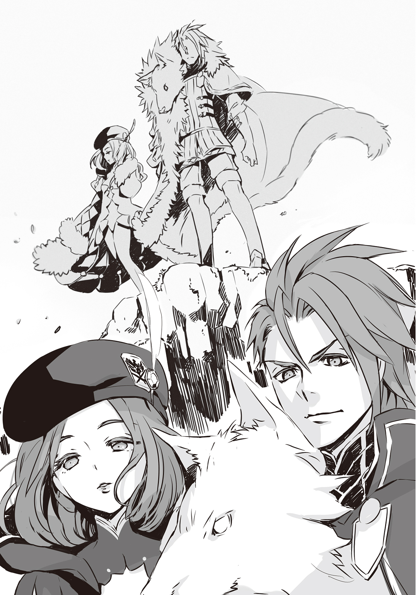
「どうだろう、アナスタシヤ？」
ジークは彼の斜め後ろにいる女性を振り返った。アナスタシヤと呼ばれた女性は、ジークとは目を合わせずに、姫をじっと見おろしている。
「お兄様の幸不幸など、わたくしの関知するところではありません。ただ、お兄様が愚劣であることだけは確実です」
「相変わらず手厳しいな」
「自業自得なのではありませんか」
「実の妹にこの言われようだ」
ジークは肩をすくめてみせた。すくめるのはいいが、もっと気どらないで普通にすくめられないのか。今、ジークの頰を平手打ちしたら、さぞかし胸がすっとするだろう。
「私もそう幸せではないのかもしれないが、きみほどではないよ、公女。なぜなら、きみは私に敗れることになるからだ」
「無理」
姫が駆けだした。
「――わたしは、無敵。負けたりしない。それだけが......！」
「きみの存在意義なのだろうな。まったくもって、きみは不幸だ！ 公女よ......！」
ジークとアナタスタシヤが同時に身を翻した。ハイジたちは谷底にいるので、二人の姿はすぐに見えなくなった。
姫は斜面を登ろうとしている。高さは５メトルほどしかなくても、絶壁に近い。駆けあがるのはさすがに不可能だ。よじ登るしかない。
「姫！ 深追いは......！」
声をかけると、姫は振り向いてハイジを睨みつけた。
「わたしに意見しないで」
「いや、で、でも......怪しいですよ！ あんなふうに指揮官が出てくるなんて！ これはきっと、誘いです！ 罠か何かがあるに決まってます！」
「その根拠は？」
「ぼ、僕なら、そうします！ 姫が強いってことは......無敵だっていうことは、帝国軍もわかっているはずですよね!? 烽火が上がれば姫が出ていくってことも、予想していたような口ぶりだったし......無策で姫に挑むとは思えません！ それに――」
「それに、何？」
「も、もう遅いです。僕がしゃべっている間に、時間が経ちました。いくら姫でも、追いつけないと思います」
「そうね」
姫は斜面の途中から飛び降りて、杓剣を放り投げた。
「准尉が余計なことを言わなければ、わたしがあのジークとかっていう廃王を殺して、敵は撤退したかもしれない。最悪」
「......うっ」
姫の言うとおりなのかもしれない。そうでなくとも、ハイジは姫の侍官だ。ハイジは姫に仕えている。ハイジにとって、姫は絶対者だ。ハイジは黙って頭を垂れるべきなのかもしれない。はい、仰せのとおりです、反省します、と答えるべきなのかもしれないが、できない。
ハイジなりに、自分の判断は正しかったと思っている。自分自身の考えを簡単には曲げられないし、姫にとってそれでいいのか。何を言われてもハイハイと肯定して、こびへつらい、おべっかを使う。そんな者が姫の役に立つのか。片腕になれるのか。
「よ、余計な、ことでもっ......」
ああ、でもこれは、とても怖いことだ。
ハイジは姫の不興を買うかもしれない。こんなうっとうしい侍官はいらないと姫に見切られてしまうかもしれない。姫が司令に罷免を要求したら、おそらくハイジはあっさりクビになるだろう。配置換えされて、評価が下がる。経歴に汚点が残るだろう。その結果、出世できないかもしれない。両親の期待を裏切ってしまうことになる。
今からでも遅くない。やはり、追従者になってしまったほうがいいのではないか？ 姫のためにならない？ そんなの知ったことか！ 気ままだし、厄介だし、面倒だし、部屋を散らかすし、ちゃんと服を着てくれないし、何を考えているのかよくわからない姫なんて、どうなったって関係ない！ 勝手にすればいいのだ！
そう割りきることができたら、どんなに楽だろう。
「......い、言います！ たとえ、姫にお叱りを受けても......僕は、言わせてもらいます！ 姫はもっと、ご自分を大切になさったほうがいいです！ 大切になさってくれないと、こ、困ります！ 僕が、困るんです！ ルルチナさんだって、ギチコさんだって、それに司令だって、絶対、困ると思います！」
「あなたたちが困っても、わたしはべつに困らない」
「そ、そうきましたかっ!? や、やばい！ その返しは、僕の対処能力を超えてる......！」
「対処能力、低すぎ」
「......高かったら、普通に友だちとかも、できていたと思うんですよね......」
「いないの？ 友だち」
「はい......恥ずかしながら、いません......少ないとかじゃなくて、学校でもゼロでした......」
「ふっ」
姫は、ひょっとすると、噴きだしたのかもしれない。
ほんの一瞬、笑ったように見えただけなので、定かではないが。
「わたしも、友だちはいない」
「じゃ、じゃあ......仲間、ですね。はっ――」
言ってしまってから、ハイジは大いに焦った。相手は姫なのに。大公のご息女なのに。仲間呼ばわりはない。とんでもなく不敬だ。
「......す、す、すみません......軽はずみでした......」
「何が？」
「いえ、あの、姫に、仲間なんて......」
「公女だと、仲間にもなれないんだ」
「いやっ、そんなことはっ、決してっ！ た、ただ......僕なんかの仲間というのは、正直言って、どうかと......あ、そういえば、ギチコさんも友だちがいなくて、僕に仲間だって......」
「ギチコは昔からああだから」
姫は少しだけ眉根を持ちあげて、しょうがない子、とでも言いたげな顔をした。
「できるわけないでしょ。友だちなんて。そこにいるだけで、迷惑だもの」
さんざんな評価だが、侍女としてはたしかに、周りの手間を増やすだけの傍迷惑な存在かもしれない。でも、昔から？ ギチコは侍女歴四年と言っていた。昔というと、やや大袈裟に感じられる。
「ギチコさんとは、古いというか、長いおつきあい......なんでしょうか？」
「物心がついたころから？」
「えっ！ そんなに昔から!?」
「ギチコは、わたしの乳母の養子」
「そ、それじゃあ、ギチコさんとは、幼馴染みで――お友だちのようなものなんじゃ......？」
「ろくに口もきかなかった。ギチコはいつも、遠くからわたしを見ているだけだったし。気持ち悪かった」
それはきっと、相手が公女殿下だから、ギチコなりに遠慮していたのではないか。というか、姫が怖かったんじゃないでしょうか――とも言えない。それとも、こういうこともはっきりと口に出すべきなのだろうか。ハイジには判断がつかない。
「......そう、だったんですね。ギチコさんは、乳母さんの養子で、ずっと姫のそばにいて、それで侍女になったんだ。そっか。なるほど。だったら、ギチコさんが侍女になる前は、乳母さんがお世話を......？ あ、でも、ルルチナさんは――」
姫は何か言いかけて口をつぐんだ。目を伏せて、下唇を嚙んでいる。これはもしかして、土下座したほうが？ だって――だって、姫の様子が変だ。怒らせた？ 違う。そうじゃない。姫は何かを我慢しているかのようだ。つらそうにしている。ハイジはふれてはならないことにふれた。少なくとも、ふれかけたのか。それは――もしかして、乳母のこと......？
「帰る」
姫は歩きだした。
「え、あっ、ちょっ、待っ――」
ハイジは軍服の上着を脱いだ。
「姫！ こ、これを！ だめです！ そのままじゃ！ いけませんって......！」
「これを、わたしに着ろって？」
姫はハイジの上着を受けとると、しげしげと眺めた。まずかった......だろうか。まずかったかもしれない。洗濯はしているが、汗もかいたし。そうだ。侍官の上着を姫が着るなんて。
「変な服」
姫は顔をしかめて――おきながらも、ハイジの上着を羽織ろうとし――たところでやめてぐるっと丸めると、ハイジに向かって投げつけた。
「やっぱり、いや」
「かふっ」
ハイジは顔面で上着を受け止めて呟いた。
「......で、ですよねえ......」
４ 僕の頭が爆発しそう CRAZY FOR YOU
帝国軍、襲来――。
その報はまたたく間にイエルヴァラ中に広まった。
イエルヴァラ城市の周辺には邑がいくつもある。警報は当然、それらの邑々にも伝えられ、住民たちが大挙してイエルヴァラに逃げこんできた。城市内は見る間にてんやわんやの大騒ぎになって、日が落ちても落ちつく気配がない。市門はふだん午後六時に閉鎖されるが、今日は遅くまで開けておいて近隣の避難民を受け容れるようだ。
避難民に紛れて、敵の間諜が入りこまないともかぎらない。用心のため、城市に入るための手続きが厳格化されているから、どうしても時間がかかる。列がのびて、揉め事も起こる。衛兵は増強されて、大勢の下士官や兵卒が市内を見回っている。何か起これば分隊が出動する。主郭も、迎撃の用意と城市内の統制とで大忙しだ。公吏たちも今夜は帰宅しないで、主郭内にとどまっている。
ルヴァラ廃地に守られているとはいえ、ここは最前線だ。ハイジとしてもある程度は覚悟していたが、大変なことになった。
午後八時四十五分から司令部で行われた軍議には姫も出席した。一介の侍官にすぎないハイジは司令部の外にいたので、どういったことが話しあわれたのか知る由もない。
軍議は十五分ほどで終わった。というか、姫だけ先に司令部から出てきた。
「ひ、姫、軍議のほうは......？」
「めんどくさいから抜けてきた」
「えぇぇぇ......」
「何か文句でも？」
「ありますよ、そりゃあ......」
「聞かない」
「ですよねえ......いやっ！」
ハイジは無理に胸を反り返らせて、咳払いをした。
「き、聞いていただきます！ 姫！ そういうなんというか、ええと、軍議のような、何ですか、仕事、そう、お仕事は、お、お立場を考えて、しっかりやっていただかないと――」
「ちゃんと喋れるようになってから言って」
「......はい......ごめんなさい......申し訳ないです......」
「報告書は十時に出せって、アルトレッドが」
「あっ。はい！ 了解しました！」
「わたしに敬礼とかしないで。うざい」
うざいとか言わないでください――などと、いちいち泣き言を並べているようでは姫の侍官はとても務まらない。ハイジは姫を私室に送り届けて、大急ぎで報告書を仕上げた。午後十時前に司令部に出向くと、司令は簡易寝台を運びこんでそこに身を横たえ、幕僚たちと話しあっていた。
軍議はどうやら終わっているようだが、忙しそうだ。入口のところで待っていると、司令がハイジに気づいて手招きをした。報告書はカーター大佐が怖い顔で受けとって、司令は簡易寝台に立てかけてあった一振りの剣を手にとった。
「バランくんの軍剣は、姫がひん曲げてしまったのだろう。これを使うといい」
周囲の幕僚たちが目を剝いたり息をのんだりした。理由は明白だ。ハイジだって驚いた。
どう見ても、どう考えても、それは司令の持ち物だ。一介の准士官でしかないハイジが、第八公軍司令の佩剣を貸してもらうわけにはいかない。もちろん、もらうなどもってのほかだ。畏れ多すぎて、自死したくなる。
「い、いえ、あの、その、で、で、で、ですが、それは......」
「ああ。心配は無用だよ。私は剣など振るわないが、手入れはちゃんとしてある。私がやっているわけではなくて、カーター大佐に任せているのだがね」
「やっ、そ、そういうことではなくっ......」
「どういうことだい」
「ぼ、僕はっ、じ、自分は、准尉にすぎませんし......」
「あ。そうだった。きみは本日付で昇進する。尉官までは上の許可をえなくても、私の権限だけで可能だからね。バランくん、今からきみは少尉だ」
「ええっ!?」
「びっくりすることはないだろう？ 准士官は実戦を経験すればただちに士官となる。そういう規定になっているよ」
「そ、そうですね!? はい、それは了解していますが、突然のことだったので......」
「ほら。徽章を外して」
「は、は、はい！」
ハイジはおぼつかない手つきでなんとか准尉の徽章を外した。すかさずカーター大佐が少尉の徽章を差しだしてきたので、「は、はっ！」と敬礼してそれと交換し、新しい徽章をつける。もう一度、今度は司令部全体に向かって敬礼すると、幕僚たちはよくて、ふーん、という表情を浮かべる程度で、ほとんどは無視された。あたりまえだ。一人の准士官が士官になっただけなのだから。たいしたことじゃない。些細な出来事だ。そうはいっても。
「......少尉......僕が少尉......いきなり、少尉......」
「おめでとう、ハイジ・バラン少尉」
司令は微笑んで、見るからに立派な拵えの剣をハイジの前に突きだした。
「で、これはプレゼントだ。ということにしよう。じつは家宝なのだが」
「かっ、かほっ......!?」
「まあ、たいしたものではないよ。それに、私は剣など使ったら、三日は立ちあがれなくなってしまう。まさしく宝の持ち腐れなのだ。きみは剣術が得意なのだろう？ 是非とも有効活用してほしい」
有効活用。できるのだろうか。ハイジがあの姫を守るために剣を振るう。果たして、そんな機会があるのか。
でも、司令はわかっているはずだ。姫の魔性について、そして気性についても、司令は理解しているだろう。承知の上で、家宝の剣を有効活用せよとハイジに命じているのだ。
この剣で、姫の力になれ、と。
だとしたら、ハイジは逃げるべきじゃない。
逃げたくもない。
「拝借いたします」
ハイジは家宝の剣を捧げ持った。
司令が手を離すと、ずっしりとした重さを感じた。
ハイジは下がって一礼した。
「ありがとうございます、司令」
「言っておくが、貸すのではない。その剣はきみにあげるのだよ。不壊の剣、とされている。伝説だがね」
「不壊の......」
「だいぶ古いもので、今となってはつくれないようだ。どうやら、製法と材料に秘密があるらしい。我がデスティニア公国の宗主たるカバラ大王国は、かつてその剣の威力でもって躍進したとされる」
「え......ということは、これ――あのカバランソードなんですか......!?」
「うん」
司令はあっさりうなずいた。ちょっと待ってほしい。
カバランソード？
もしかしてそれは、歴史の授業で習ったアレのこと......？
世界神カバラを祖神とするカバラ大王国は、今では宗主国というよりも、デスティニア公国をふくめた三公国に守られて、かろうじて尊い血脈と体裁を保っているというのが実情だ。もっとも、かつては十三王公侯国を従える東大陸一の大国だった。さらにさかのぼって、カバラ大王国の起源とされるカバラ古王国時代には、一時、東大陸の半ばを支配し、全世界に影響を及ぼしていたという。
その古王国時代の爆発的な勢力伸長を支えたのが、何を隠そうカバラの剣なのだ。
恐ろしい斬れ味を誇り、折れない、曲がらない。あらゆる国が、剣士たちが、無法者どもが求めたが、その剣を製造する技術は古王国から流出しなかった。また、受け継がれることもなく、やがて歴史の深い海に沈んで消えてしまったのだ......。
――と、ハイジは教わった。
カバランソード。
まさしく、伝説だ。
不壊の剣。
「か......か......か......か......家宝どころか......」
手が震える。手だけじゃない。全身が震えている。ハイジは泣いてしまいそうだった。
「......こ......こ......ここ、こ......こ、こっ......国宝、なんじゃ......」
「大袈裟だな」
司令は肩をすくめた。
「一般にはあまり知られていない事実なのかもしれないが、カバランソードは多数現存しているのだよ。姫もいくつか持っている」
「......姫は、公女であらせられますし......僕は、庶民ですし......」
「貴人が貴人としてあるだけで貴いなどというのは幻想だ」
司令はかすかに笑った。
いつになくあたたかみに欠ける、突き放すような、突き落とすような、ある意味ふだんよりよほど軍人らしい、冷厳な微笑だった。
「貴人が貴くありたいのならば、それにふさわしい価値を示さねばならない。貴族だろうと庶人だろうと、貴い者は貴いのだよ。当然のことながら、その逆もまた然りだ。ハイジくん。きみはその剣をどう使う？」
×
ハイジ・バランはこの剣をどう使うべきなのか。
司令に与えられた命題について考えながら、ハイジは姫の私室の前で待機していた。
しばらく前に小用で部屋から出てきた姫には「自分の部屋で寝れば？」と呆れ顔で言われたが、いつなんどき何が起こるか知れないのだ。ハイジは姫の私室の扉の脇に椅子を置いて、そこに座っている。もし眠気が差したら、毛布にくるまって横になればいい。いざというときのために、躰は休めておかねばならないのだ。だったら姫の言うとおり、自分の部屋の寝台で眠れという話なのかもしれないが、とてもそんな気にはなれない。
ハイジは緊張して、神経が昂ぶっている。
だって、戦争だ。戦争が始まるのだ。
いや、まあ、もともと帝国とはずっと前から戦争状態にあるのだが、何しろハイジは田舎で生まれ育った。しかも、故郷のトクタリ邑は帝国との国境からは遠く遠く離れている。公立学校入学で上京した公都デスティニアレスも、ここイエルヴァラの遙か南だ。
学校では、とくにハイジは軍人課程に進んだから、今は戦時中で、我が公国は危機に瀕しているのだと繰りかえし叩きこまれた。そう認識してはいても、正直なところ、帝国の脅威を実感してはいなかった。その機会がなかった。
ハイジは戦争を知らなかった。イエルヴァラに着任してからも、この肌にふれるものとして戦争を感じてはいなかった。間近にあるはずの戦争がどこか遠かった。もちろん、それは勘違いだった。大いなる勘違いだ。
第八公軍は戦争の準備を整えていた。だから哨戒櫓はちゃんと機能して、烽火を上げた。帝国軍の斥候部隊は姫が一人であっという間に殲滅してしまった。第八公軍はただちに戦闘態勢をとり、周辺の住民も避難を開始した。戦争はすぐそこにあった。それどころか、とうにハイジは戦争の中にいたのだ。
そのことに気づいていなかった。ハイジはとんだ間抜けだった。未熟者だった。何も知らない子供同然だった。しかし、もうわかっている。戦争だ。戦争をするのだ。
兵士じゃない故郷の両親、妹、弟、親類縁者、隣人、その他、軍と関わりのない公国の民間人、老若男女を守るために、ハイジは戦う。なぜなら軍人だからだ。軍人は戦わなければならない。軍人はそのためにいる。民の税金で養ってもらっている。戦争をするために。いざというときは、この身を公国の盾にするために。
これからハイジは戦争をするのだ。戦争。戦争。戦争。戦争。戦争。戦争。戦争。戦争を。
わかっている。
ハイジの精神状態はまともではない。自覚はある。これはよくないことだ。落ちつけ。
平静に。
冷静になれ。
ハイジは抱くようにして持っていた剣の柄を握った。少しだけ鞘から抜いてみた。
廊下にはランプが設置してある。その明かりを照りかえす剣身には、霜が降りたような刃紋が浮きでている。
こんな剣は見たことがない。柄や鍔、それから鞘の外装も、華美ではないながら見事なものだが、それより何よりこの剣身だ。
デスティニア公国の名門アルトレッド家の家宝。
銘は、ワイバーン。
伝説に出てくる飛竜の名からとってつけられたらしい。
カバランソード、ワイバーン。ハイジは司令からこの剣を賜った。頂戴してしまった。いつか、たとえば司令が栄転して第八公軍から離れたり、ハイジが何らかの事情で第八公軍にいられなくなったりしたら、そのときは返却するべきだろう。もちろん、そうするつもりだが、とりあえず今はハイジの剣だ。ワイバーン。不壊の剣。
ハイジはもともと剣術が好きだった。だいたい男の子というものは、棒きれを拾ったらそれを剣に見立てて、チャンバラを始めるものなのだ。ハイジなどは、暇があれば手製の木剣を振って振って振りまくっていた。ただ振るだけじゃない。自分なりに工夫をして、自己流の剣術らしきものを編みだした。意外なことに、その剣術もどきは公立学校でも通用した。ハイジは都会っ子の同級生を何人も試合で破っただけじゃない。生徒相手なので油断していたのだろうが、武術教官までも打ち負かしてしまったのだ。
あのときハイジは一瞬、夢想した。これで自分は英雄になってしまうのではないか。ついに友だちができてしまうかもしれない。むろん、そうはならなかった。
武術教官だけはハイジを讃えてくれたが、明らかに照れ隠しだった。同級生たちはハイジに声をかけてくることさえなかった。はっきり言って、みんなドン引きしていた。ハイジは勝ったのに、とても気まずい思いを味わった。
以来、剣術の授業で、ハイジと本気で立ちあう生徒はいなくなった。武術教官とはたまに試合をした。手を抜くなんて失礼だから、ハイジは真剣に戦った。剣達者の武術教官との試合は毎回楽しかった。強い相手はこちらの力を引きだしてくれる。相手が強いと、いつもはできない動きができる。鋭く力強く木剣を振ることができる。ハイジは一度も負けなかった。逆説的に言えば、武術教官が強かったおかげだ。ハイジは無敗で公立学校を卒業した。
ハイジは剣術が好きだった。
剣術はハイジを強くしてくれた。
その一方で、剣術がハイジを孤独にした。試合で勝利すればするほど、ハイジと同級生たちとの距離は広がっていった。
ハイジは適当に勝ったり負けたりするべきだったのだろうか。でも、試合で相手が手加減をして自分が勝っても、ハイジはちっとも嬉しくない。それなら負けたほうがましだ。試合なのだ。負けても死ぬわけじゃない。実戦ではないのだから、負けたら、なにくそ、次は勝ってやると奮起して、自己鍛錬に励めばいいだけの話だ。
実戦ではなかった。
ハイジが勝ったのはすべて、子供の遊びか、ただの試合だった。
遊びは論外だし、試合でいくら強くても、その強さを戦場で発揮できるとはかぎらない。
このワイバーンをたずさえて、ハイジは本物の戦場に出る。
剣身を鞘に納めなおして、一つ息をついた。目をつぶってみる。震えが止まらない。
足音が聞こえる。目を開ける前に、それがルルチナだとハイジにはわかっていた。彼女にかぎらない。人の足の運び方には特徴がある。見ると、案の定だった。ルルチナが盆を持って歩いてくる。ハイジは椅子から立ちあがって敬礼をした。
「お疲れさまです、ルルチナさん」
「ルルチナは単なる侍女にすぎませんから、敬礼は不要です」
「あっ。はい。申し訳ありません！」
「准尉は――」
ルルチナはハイジの徽章を一瞥して、わずかに口許をゆるめた。
「失礼いたしました。少尉に昇進なさったのでしたね。おめでとうございます」
「あ、ありがとうございます。規定どおりというか、予定調和的な昇進なんですけど......」
「昇進は昇進でございましょう？」
「そ......そうです、ね。はい。素直に、喜びます。あの――ルルチナさんは、姫に何か？ もう夜遅いですけど」
「香草茶をお持ちしました。どうせ、お眠りになってはいらっしゃらないと思いますので」
「ああ！ そ、そうでしたか。じゃあ、今、扉を――」
ハイジが姫の私室の扉を開けようとしたら、ルルチナが右手で盆を持ったまま、左手の人差し指を唇にあててみせた。
「お待ちください」
ひそめた声でそう言われたので、ハイジは扉にかけた手を離して、小声で、
「......はい？」
「しばし、ルルチナとお話でもしませんか」
「え。いいです......けど。それは、べつに」
「きっと、おもしろいものをお見せできます」
「......そうなんですか？」
「ええ」
ルルチナはにこっと可憐な笑みを浮かべてから、声をもとの大きさに戻した。
「サクラ様のおそばにいてくださったこと、感謝しております」
「あっ、いや、それは、僕は侍官なので、当然というか......でも、そば、というより、近くにいることしかできなかったので、むしろ申し訳ないくらいで......」
「おそばにいてくださっただけで充分です」
「......うかがってもいいですか？」
「どうぞ」
「ええと......どう訊けばいいのかな、つまり――僕には、姫のおそばにいること以外というか、それ以上は、期待されていない......ということなんでしょうか」
「少尉はごらんになりましたでしょう？」
あの戦いぶりを、とルルチナは言いたいのだろう。
ハイジは見た。この目で見てしまった。
「はい」
「それでは、逆にお訊きします。少尉がルルチナだったとして、サクラ様のおそばにいる以上のことを要求できますか」
たとえば、ともに戦って欲しいと。姫と肩を並べて、戦えと。そんなことを普通の人間に求めるのはあまりに酷だ。ルルチナはそう言いたいのだろう。
「......僕には、姫のおそばにいることしか、できない......んですかね」
「現実的にはかなり難しいでしょう」
「でも、それじゃあ――」
ハイジは思いだす。
ばらばらになって、ハイジを突き刺した姫の言葉たちを。
自分は、無敵だ。自分を守ろうなんて考えるな。無理で、無意味で、いらない。
姫はハイジを拒むように、隔てるようにそう言って、たぶん自分自身を傷つけていた。
かつてハイジは一人で木剣を振るっていた。――僕は！ 僕は一人だ！ 僕には友だちがいない！ 僕はひとりぼっちだ！ そう叫ぶように、叩きつけるように、一人きりでいつまでも木剣を振るっていた。寂しくて、悲しくて、自分がくだらない馬鹿者に思えて、でも、そうすることしかできなかった。
「それじゃあ......姫はずっと、一人じゃないですか。一人で戦いつづけなきゃいけないことになるじゃないですか。そんなのって、ないですよ。だって、帝国軍との戦いは、姫だけのものじゃありません。僕たち公国の民、みんなの戦いです。少なくとも、僕は軍人なんだから。僕は戦わなきゃいけないんだ」
「気持ちだけで、戦えますか」
「それはっ」
「ご無理をなさっても命を落とされるだけです。それを世では無謀と申します」
ルルチナは急に首をかたむけて、片方の眉をつりあげた。
「いいか、青二才。何をどう考えようと、てめえの勝手だけどな。てめえごときへなちょこの甘ちゃんがムチャしてくたばりでもしたら、サクラ様がどうお感じになると思う？ 平気だとでも思うのかよ？ ふざけるんじゃねえぞタコ。一発ぶん殴ってやろうか？ まあ、このルルチナ様が本気で殴ったら、目が覚めるどころか目ん玉飛びだして即死しちまうだろうけどな。これ以上たわけたことぬかしやがるなら、こっちはそれでもかまわねえ。てめえがサクラ様のためにならねえクズカス野郎だと判断した瞬間、この手でぶっ殺してやる。わかったか？」
呼吸すらできなかった。今まで生きてきて、こんな大迫力で凄まれたことはない。ハイジはルルチナに圧倒されていた。うなずいて、はい、わかりました、すみません、と謝るしかない。今すぐそうしないと、彼女は本当にハイジを殴り殺すかもしれない。かもしれない、じゃない。彼女は間違いなくやるだろう。
それなのに、なぜハイジはためらっているのか。馬鹿なのか？ きっと馬鹿なのだ。大馬鹿だから、言ってしまうのだ。
「は、判断、したら......ルルチナさんが、僕を、くずかごやろう？ クズカス？ ええと、そんなふうに判断したら、こ、殺してください！ いいです！ そうしてくださって、かまいません！ で、でも！ 僕は、それでも！ やっぱり、姫を一人にはしたくありません！ 姫の隣で戦いたい！ できることなら、姫の前で戦いたい！ できるか、できないかじゃない！ ぼ、僕は、僕は、僕は！ 僕は、そうしたいんだ......！」
「ガキが......！」
ルルチナの緑色の瞳が光を発した。くる。
左の拳が。
ハイジは動けなかったのか。よけようにもよけられなかったのか。それとも、あえて動かなかったのか。ハイジ自身にもわからない。とにかくハイジは微動だにせずに目を見開いてルルチナの左拳を凝視していた。息が止まりそうだった。というか、息は止めていた。彼女の左拳はハイジの顎をとらえようとした。その５ミリル（約５㎜）手前でぴたりと静止した。
「へっ」
ルルチナは唇の片端をゆがめて笑い、ハイジの顎を殴りかけてやめた左手で、ハイジの頰をぺちぺちと叩いた。彼女の瞳からは光が失せている。
「このルルチナにクソ生意気な口をたたきやがるとは――どうやら、度胸だけは一人前でいらっしゃるようですね、少尉」
「......そ、そうですか......ね」
「褒めてさしあげます」
「あ、ありがとうございます」
「ですが、決してご無理はなさいませんよう」
ルルチナは左手を引っこめると、その手を自分のほぼ平らな胸に当てた。
「心配なさらずとも、サクラ様をお一人で戦わせたりはいたしません。――このルルチナが」
「魔性を」
ぽろりと口を滑らせてしまった。でも、ハイジはずっと疑っていたというか、そうなのではないかと思っていたのだ。
「お持ちなんですね。ルルチナさんも。それに、たぶん......ギチコさんも」
「ギチコは事情がやや複雑なのです。それゆえに、あれは魔性ではないということにしてあります。公的に認められていない、ということです」
「公的......？」
「我が公国にかぎりませんが、魔性は国家が認証し、管理することになっております」
「......知りませんでした。そんなこと」
「少尉がご存じでなくても致し方ありません。魔性は、それが特殊な、ときに強大な力であるがために広く知れ渡っておりますが、だからこそ国家機密なのですから。一般にはつまびらかにされていない秘密が、魔性に関しては多くあります」
「ルルチナさんの魔性は、我が公国に認証されている......？」
「リリーローエンという名の一門は、カバラ大王国に発しました。ですが、今となっては知る者とて稀です」
「貴族......なんだ。ルルチナさんは」
「単に、父祖がそうであったというだけのことです。おかげで、こうして魔性を受け継いでおりますので、感謝はしておりますが――ともかく、ルルチナは生まれながらにしてさる御方の庇護下にあり、その意に従って、工作員......もっとはっきり申せば、刺客としてサクラ様のもとへと送りこまれたのです」
「なるほど、刺客とし......し、刺客!? ですか!? ええっ!? 刺客って......!?」
「ルルチナに課せられた任務は、サクラ様を監視し、可能であれば亡き者にすることでした」
「姫を、亡き者に――」
ハイジは目を剝いて跳びあがった。
「って、えええっ!? えええええええええええええぇぇぇぇぇぇぇぇぇぇぇぇぇぇっ......!?」
ルルチナはちょっとだけ首をかしげて、野花のような微笑を浮かべてみせた。
「むろん、今は違います」
「あ......そう、なん、です、ね......」
ハイジはへたりこんでしまいそうなくらい安堵した。いや、でも、待て。ルルチナが正直に話しているという保証がどこにあるだろう。噓をついているとは思えない。そんなふうには思いたくもないが、ルルチナが偽りを語っていても、おそらくハイジには見抜けないだろう。
ハイジは剣の柄に手をかけてはいない。しかしいつでも抜き放てるように、それでいてルルチナにそうとは悟られないように、ひそかに準備をした。
「それは、本当......ですか。その――今は、そういうことを、企んでいないというのは」
「面と向かって、そのようなことを尋ねる盆暗がどこにおります？ いいえ。ここにいらっしゃいますね。ルルチナの目の前に」
「......た、たしかに、迂闊でした。もしルルチナさんが噓をついていても、認めるわけがないですよね。僕は馬鹿だ......」
「そこが問題です」
「はい？」
「味方は少ないより多いほうがいい。ですが、間抜けな味方は足手まといになりますので、かえっていないほうがましです」
「同感です。その間抜けが、僕か......」
ハイジは自分の胸の真ん中に拳を叩きつけた。このままではだめなのだ。
「な、直します！ 間抜けなところを矯正するのは簡単じゃないと思いますけど、鋭意努力します！」
「馬鹿正直という言葉をご存じですか」
「え？ はい。知ってますけど。あっ。もしかして、僕のこと!?」
「少尉。あなたは刺客ではありませんね」
「ち、違います、もちろん。うわっ、どもっちゃったら、なんかあやしい......やっ、でも、本当に違います。もし僕が刺客だったら、殺してしまっていいです、僕のこと。というか、責任をとって、自分で死にます！」
「ずいぶんおかしなことをおっしゃっていると、ご自分でお気づきですか」
「な、なんとなく......。そう、ですよね......仮に僕が刺客だとしたら、何を言っても疑わしいですし。油断を誘うために、馬鹿正直を装っているかもしれないわけだし。考えれば考えるほど、八方塞がりなんですよね。どうすればいいんでしょうか......」
「このルルチナは、旧主より与えられた任務を放棄し、サクラ様にお仕えすることに決めました。旧主はサクラ様ではなく、ルルチナに向かって幾たびも刺客を放ちましたが、すべて返り討ちにしてやりました」
「返り討ち......って、殺っ......？」
「彼ら、彼女らは、かつての同僚でした。ルルチナはその全員をこの手で討ちとりました」
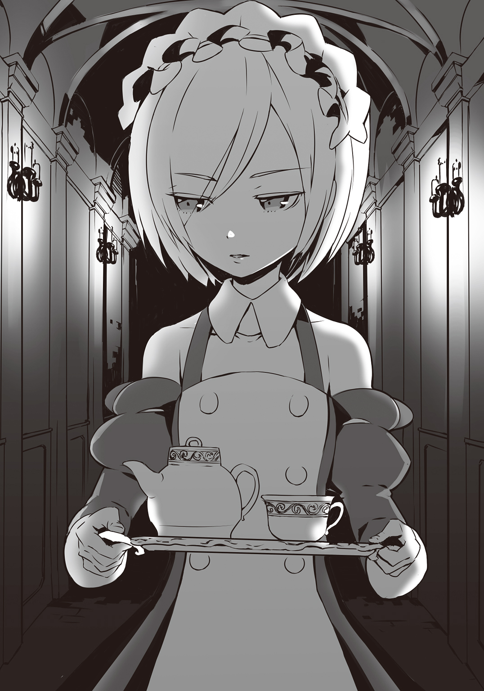
ルルチナはなぜそんな恐ろしいことを淡々とした口調で語れるのだろう。
ハイジが思うに、彼女は平気だから、どうでもいいから、なんともないから、淡々と語っているのではない。たぶん、反対だ。平気ではないから、どうでもよくない、なんともなくないから、淡々と語るしかないのではないか。
もしかすると彼女は、刺客として、暗殺者として、いくつもの罪を犯してきたのかもしれない。暗殺者同士が殺しあった。互いに自業自得なのかもしれない。
でも、彼女は昔の主や仲間を裏切るという大きな決断をして、その報いを受けたのだ。
小さな躰で、すべてを受け止めた。
その人生を思うと、ハイジは心臓が痛くなる。彼女の姫に対する忠誠の計り知れない重さに、押し潰されてしまいそうになる。
「サクラ様には何もかも打ち明け、そののちにこう申しあげました」
ルルチナはそのときを思いだすように少し目を伏せて、口許をわずかにゆるめた。
「このルルチナを信頼するもしないもあなた様の御心次第です。どちらでもルルチアはかまいません。いずれにせよ、ルルチナはこの命、この一生をあなた様に捧げることにもう決めました。ルルチナを解雇されるのでしたら、そうしていただいて結構です。ルルチナは勝手にあなた様にお仕えいたします、と。――サクラ様は呆れ、そして、お笑いになりました。たかだか一年半ほど前のことです。身の証しを立てるには、まだまだ時が足りないと、ルルチナは存じております」
ハイジも同じだ、とルルチナは言いたいのだろう。すぐに信頼をえることなどできるはずもない。時間をかけて、実績を重ねて、ハイジは証明しなければならない。姫に害をなさない、姫のためになる、信じるに足る人間だということを。
ルルチナは、それができるか、とハイジに問うているのだ。
その覚悟はあるのか、と。
「やります」
ハイジは顎を引いてうなずいた。左手でワイバーンを持って、踵をそろえ、背筋をのばして、右の手刀を左胸にあてる。
「一歩一歩！ いつの日か信じていただけるように、精進いたします！」
「しっ」
と、不意にルルチナが唇の前で人差し指を立てて、抜き足差し足忍び足で姫の私室の扉に近づいた。
そうして静かに扉の把手を握ると、ハイジを手招きする。
ハイジは首をひねりながらも扉に身を寄せた。
「......何ですか？」
声をひそめて訊くと、ルルチナはもう一度、
「しっ」
とハイジを黙らせてから、扉の向こうに呼びかけた。
「サクラ様」
「な、何っ!?」
姫の返事は早かった。
即答にも程がある。
間を置かずにルルチナが扉を開けると、姫は寝台めがけてダッシュしている最中で、その姿勢のまま止まった。
それから、ゆっくりと振り返って、澄まし顔をした。
「......な、何？ ど、どうかした？」
でも、声が揺れているし、目の焦点が定まっていない。あと、なぜか内股になっている。
ルルチナは首をかたむけて、にっこりと笑った。
「聞いていらしたのですか」
「きっ、聞いて、ないけどっ。ていうか、な、何をっ？」
「扉越しでは、ろくに聞きとれなかったのではありませんか」
「だ、だから聞いてないしっ」
「お話に参加なさりたいのでしたら、そうおっしゃってくださればよかったのです」
「そんなこと、思ってないからっ。これっぽっちもっ」
「さようでございますか」
「あたりまえでしょ！」
姫はむっとしたように少しだけ頰を膨らませて寝台に腰かけた。うつむいて、何かぶつぶつ呟いている。
「......な、長々としゃべってるから、ちょっと気になっただけで......べ、べつに盗み聞きしようとか思ったわけじゃないしっ。そんなことする理由がないしっ。どうでもいいし、めんどくさいし、くだらないしっ。どうせ、わたしには関係ないんだから......だから、わざわざ外で話してたんでしょ。そうに決まってるんだからっ......」
ルルチナがハイジにちらりと視線を送って、にやっとした。これか。
たしかルルチナは、きっとおもしろいものが見られる、というようなことを言った。これのことだったのだ。
実際、おもしろいと言えばおもしろいのかもしれない、だけど、これは――おもしろいというか、むしろ。
ハイジは右手で顔の下半分を覆った。笑いの衝動をこらえているのではない。そうじゃなくて、なんというか、胸がいっぱいになって、その胸をいっぱいにしているものが何なのか、ハイジにはわからなくて、こんなの初めての感覚、初めての経験で――これは......？
とにかく震えよりもっと細かい振動が、首の後ろから顔、肩、胸、そして全身へと広がってゆく。その振動をもたらしている感情？ 感慨？ ハイジの胸をいっぱいにしているものの正体は、そういった種類の何かなのか？ でも、だとしたら、胸から生じて首の後ろから胸に至って全身に広がるというのは、どうにも変じゃないか？ 変じゃないのか？ わからない。
いけない、とハイジは思う。これはどうもいけない。走りだしたい気分だ。ここから逃げ去りたい。だけど、できない。ハイジはここにいたい。姫のあの姿を見ていたい。いつまでも見つめていたい。もう一瞬たりとも目を離したくない。
こんなことを考えるのは不遜だ。とてもよくないことだ。でも、考えてしまう。あの姫をどこか狭い場所に閉じこめて、ずっと眺めていたい。そうしたらハイジは、この感覚に襲われつづけていつかたぶん、頭がいかれてしまうだろう。それでもいい。ぜんぜんかまわない。それどころか、おかしくなってしまいたい。本望だ。
これは何だ？
この気持ちは？
わからない。
ハイジ・バランは異常なのか？
とっくにおかしくなってしまっているのか？
そうかもしれない。いや、そうなのだろう。そうに違いない。
ハイジはおかしくなったのだ。原因は？
姫だ。
姫のせいだとか、姫が悪いだとか、そんなことは微塵も思わないが、他には考えられない。
姫だ。
姫がハイジをおかしくした。
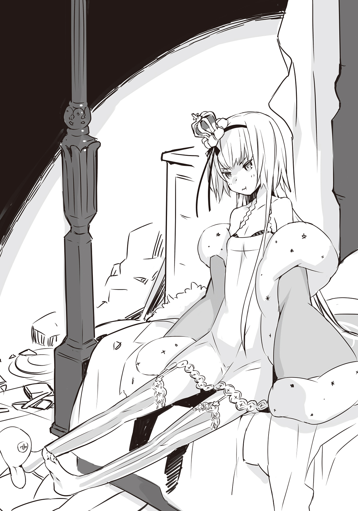
「かわいらしいところも、おありになるでしょう？」
ルルチナが、おそらく姫には聞かれないように、そっと囁くように言った。
ハイジは目を瞠った。
「――あっ......」
「はい？」
「ん？」
ルルチナと姫が一斉にハイジを見た。
ハイジは頭を叩いた。
「それかぁっ......！」
ルルチナも姫も不思議そうだ。しかしハイジにしてみれば、人類が千年かかっても突き止められなかった謎を解き明かしたような気分だったのだ。それだったのか......！
かわいらしい。
かわいい。
それだ。
何のことはない。
寝台に腰かけて、両手をついて、下を向いて、脚をぱたぱたさせて、ほっぺたを膨らませて、口を尖らせて、ぶつぶつと呟いている姫が、その姿勢が、仕種が、かわいらしくてかわいくて愛らしくてたまらなかったのだ。
「......そ......そうだったんだ......」
ハイジは目尻のあたりを指でぬぐった。姫がかわいすぎて、涙ぐんでしまっていたのだ。姫がかわいすぎるせいで、ハイジはおかしくなった。
なんて恐ろしい。
姫の魔性もすごいが、姫のかわいらしさも危険だ。少なくとも、ハイジにとっては危険すぎる。何しろ、姫がかわいすぎると、ハイジは正気を失ってしまうのだ。しかも、そうして我を忘れた状態はとても気持ちよかった。これ以上ないくらい、幸せだった。できれば、姫にもう一度、あの場面を再現してもらいたいほどだ。やってもらえるのなら、ハイジはそれと引き換えに何でもしてしまうかもしれない。かもしれない、じゃない。何でもする。確実に。
「......どうしちゃったの、その人」
姫にそう尋ねられたルルチナは、首を横に振って、
「さあ。ルルチナに訊かれましても」
「なんか、本人に訊くの、怖い」
「ぼ、僕は怖くないですよ!? 姫の、しもべですから！」
うん......？
ハイジは眉をひそめた。違うか？ そうだ。違う。言い間違えた。
「――ち、違った！ そうじゃなくて、片腕です！ あっ、いえっ、片腕というのは僕の目標であって、身分は侍官でした！ 僕は姫の侍官なので、怖くないです！」
「ふうん......」
姫はぱたっと横になって、腹の上で両手を組みあわせた。
「どうでもいい。めんどくさいし。せいぜい、がんばって」
「がんばります！」
「うざっ......」
「うっ......」
ハイジは屈んで胸を押さえた。姫に、うざい、うざったい、迷惑だ、といった類いの言葉をぶつけられたのはこれが初めてじゃない。何度もある。毎回、多少はショックだったが、こんなにも強い、鮮烈な痛みを感じたことはない。
なぜだろう。どうしてこんなに痛いのか。
「敵、さっさとくればいいのに」
姫は目をつぶり、虚空に向かって呟いた。
「何もかも、早く終わってしまえばいい」
×
ハイジとしては、何もかも終わってしまわれては困る。姫はなぜそんなことを言ったりするのだろう。考えると、それこそ何もかも終わってしまいそうな心地がする。
終わるのではなく何かが始まって、姫がそんな後ろ向きというかせつないというか悲しい想念にとらわれることがなくなればいい。しかし、たとえば何が始まれば、姫に明るく楽しい毎日を送ってもらえるようになるだろうか。ハイジにはわからない。明るく楽しそうな姫の様子を想像するのも正直、かなり難しいが、無理に思い描いてみる。
とても、大変、とてもとても、すばらしい！
姫が満面に笑みをたたえるだけで、帝国の野望なんか木っ端微塵に砕け散ってしまい、デスティニア公国に安寧が訪れて、世界が平和になってしまいそうだ。帝国をぶっ潰す。ハイジがその大目標を達成するためには、姫に幸せな日々を過ごしてもらうのが一番手っ取り早い方法なのではなかろうか。
いや、手っ取り早くはない。だって、どうすれば姫が幸せになるのか、ハイジには見当もつかないのだ。ならばいっそ、姫を幸せにすることを目標に据えたほうがいいのかもしれない。何か間違っているような気もするが、いったい何が間違っているのだろう......？
ハイジは姫の私室の前で朝まで過ごした。姫のことで頭も胸もいっぱいで、なかなか眠くならなかったが、朝方に二時間ほど、毛布にくるまって床の上で寝た。
起きると、毛布の上に一枚、上掛けがかかっていた。
誰がかけてくれたのだろう。
ギチコに尋ねると、自分ではないと否定した。ルルチナは「さあ？」と言葉を濁した。そこで、勇気を出して姫に訊いてみたら、ちょっと不機嫌そうな表情で、
「おばけでも出たんじゃない？」
という答えが返ってきた。
途端にハイジはまたおかしくなりかけたが、今度は原因を理解していた。寝ているハイジに上掛けをかけてくれたのは姫なのかどうか。それは判然としない。どうも姫のように思われるが、断定はできない。
でも、「おばけでも出たんじゃない？」は明らかにかわいい。
戦争がすぐそこまで迫っているというのに、なんてことだ。
かわいい。
×
もっとも、我がデスティニア公国の麗しき姫君は、ただかわいいだけではない。
午前八時十五分に司令部で軍議が開かれ、姫と一緒になんとハイジも出席することになった。といっても、あくまで姫の後ろに控えているだけだ。発言権はないが、一介の准士官――ではなくて、士官になりたての侍官にとっては、言うまでもなく名誉なことだ。軍議の進行を目の当たりにして、その空気を感じるだけでも貴重な経験になる。何しろ非常時なので、今後も午前八時十五分からと午後七時からの一日に二回、軍議は定期的に行われるとのことだが、初めてということでハイジは緊張していた。気合いも入っていた。
司令部には大きな長方形の卓があって、南面する席に姫が、北面する席には司令が、東面する席には幕僚長のカーター大佐以下幕僚たち、西面する席には第一連隊連隊長のダンドリュー大佐以下連隊長たちがつく。連隊長は各自副官を従えているが、彼らはハイジと同じ立場で席は与えられない。各連隊長の後ろに立っている。
「それでは始めようか......」
司令が咳をこらえながら開始を宣言すると、幕僚の一人が起立して現状を説明した。
曰く、帝国軍はまだやってこない。
第八公軍は偵察を出して敵の動きを探っているが、斥候部隊をいくつか発見しただけで、本隊の姿はとらえられていないという。ゆえに往復一日以内の距離に敵軍本隊はいないと考えられるが、消息を絶った偵察兵が少数いるので、予断を許さない。ただし、イエルヴァラの近くにはとりわけ密に哨戒櫓、哨戒壕が配置されている。それらが烽火を上げていないということは、たとえば一時間後、二時間後に戦闘開始、といったことはありえないだろう。
城市内では第八公軍総勢二万余の半数から三分の二が常に配置についている。敵軍の接近が確認され次第、全数配置に移行する。
ここまでの報告で五分少々が経過しただろうか。
姫が突然、立ちあがった。
「だいたいわかった」
「......え？」
ハイジは思わず声を出してしまった。というか、だいたい？ いやいや、だいたいなんて、そんな大雑把な。軍議なのだから、もっと綿密にいかないとやっぱりそこは。
「太守閣下......」
司令も秀麗な顔をしかめて、さすがに姫をたしなめようとしたのかもしれないが、咳に邪魔された。
「うえっ、ごほっ、ぐふっ、おふぇっ......」
「司令」
すかさずカーター大佐が席を立って司令の背中を撫でさすった。幕僚や連隊長、副官たちは無言だが、やれやれ......というような空気が司令部に流れている。ダンドリュー大佐などは腕組みをして、呆れ顔を隠そうともしない。
姫は司令やカーター大佐、それからダンドリュー大佐を一睨みした。
「何か言いたいことでも？」
「ぐほっ、ぶへっ、うぉほっ......」
司令は言いたくても言えないようだ。カーター大佐は司令の介抱で忙しい。
「いいえ」
ダンドリュー大佐は口をへの字に曲げて肩をすくめた。
「といいますかね。むしろ、閣下から我々におっしゃりたいことはおありじゃないんですか」
「わたしから？」
「ええ。何せ、御身は我々の太守閣下であらせられるわけですから」
「そうね」
姫はやわらかそうな下唇を細い指で軽くつまんだ。
「よきにはからえ」
「了解しました」
ダンドリューがわざとらしく大仰に敬礼をすると、姫は歩きだした。――って、どこに行くんですか軍議の最中というかまだ始まったばかりじゃないですかだめですよいけませんってばねえ姫――と思いはすれど、お歴々の面前で太守閣下を咎めるような真似をするわけにもいかず、ハイジとしてはおろおろしながら姫を追いかけることしかできない。姫は司令部を出る前に足を止めて、躰を半分だけ振り向かせた。
「これまでどおり、わたしはわたしの仕事をする。あなたがたはあなたがたの仕事をして。わたしの妨げにさえならなければ、あとのことはどうでもいい」
司令の咳だけが返事だった。姫は司令部をあとにした。
「ひ、姫......」
姫の後ろをついて歩いているハイジ・バラン少尉十七歳はまるで子犬のようだ。不甲斐ない。こんなことでどうする。そうだ。しっかりしなきゃ、とハイジは自分を励ました。
「ぐ、軍議はその、さ、最後まで責任を持って、というか、お、お立場もありますし、ちゅ、中座するのはどうかと......」
「そんなに言うなら、わたしの代わりに少尉が座ってれば？」
「ぼ、僕が!? い、いや、そういうわけには......代わりって、置物じゃないんですから......」
「置物？」
「え？ あ、た、喩えですよ!? ただの、喩えで、姫が置物だったりしたら、それはもう、とんでもなく......」
「とんでもなく？」
「......と、とてつもなく......なんというか......つ、つまり......」
「邪魔でしょ」
「へっ!?」
「わたしが置物だったら。ものすごく、邪魔」
「そ、そうですか......？」
ハイジは想像してしまった。姫の形というか、姫そのものの置物。そんなものがもしあったとしたら――置物だけに、うざいとか消えろとか暴言を吐くことはないのだ。ただそこにある。というか、いる。姫は今、ガウン的なものを身にまとって、ハイジがどうかそれだけはお願いしますと土下座する勢いで懇願したので前をちゃんと留めてくれているが、ふだんは下着みたいな恰好でいるわけだから、置物もきっとそうだろう。今はスリッパを履いているものの、いつもは裸足だったりするから、置物もたぶん素足だ。そんな置物があったら、それは――どうだろう。なかなか、いや、かなり、すてきなのでは？ すばらしい置物なんじゃ......？
でも......それでも、置物より、本物の姫のほうがいい。なんとなくそんなことを考えたりしているうちに、姫の私室に到着してしまった。ハイジは慌てて扉を開けようとしたが、盆を持ったギチコがチヌコを従えてあっちのほうから歩いてくる。盆の上には茶が入っているとおぼしきポットやらカップやら何やら。姫がため息をついた。
「......あのお茶。誰のために持ってきたの」
たしかに、途中で軍議を抜けてこなければ、姫はまだ司令部にいたはずだ。ギチコは誰のために茶を用意してきたのだろう。というか、おっと、おっととと、おととととと......みたいな危なっかしすぎる足どりで、見ていられない。一声かけて手を貸したいが、何しろそこはギチコだ。ハイジが呼びかけただけで、その拍子に盆をひっくり返してしまいかねない。
そんなわけで、ハイジは遠くから静かに見守ることにした。でも、姫は違った。
「ギチコ」
「ふぉっ」
だから言ったのに――いや、ハイジは何も言わなかったが、予想どおりのことが起こった。ギチコは脚をもつれさせて、盆とその上にあった諸々を残さず床にぶちまけた。
「......うぁ」
「うぁ、じゃないでしょ。ぐずなんだから」
姫は髪をかきあげて、うんざりしたように言った――が、表情はべつに刺々しくなくて、ハイジはちょっと意外の感に打たれた。
「ごめんなしゃい......です......」
ギチコはうなだれている。姫はくすっと、ほんのわずかにだが、笑ったように見えた。
「しゃいって何」
「ふぉぃ？」
「いい。話が通じるとは思ってないし」
「おぉぅ......あ、あたし、片づける、です......ます。です？ ぬぅ......」
「せいぜいがんばって。ルルチナに怒られたくないでしょ」
姫は手ずから扉を開けて私室に入った。ハイジもつづけて入室しようとしたら、目の前で扉を閉められた。
「――わっ。ひ、姫......？」
「一人にして」
扉越しのくぐもった声に拒絶されて、ハイジは立ちつくした。無理に入っていっても、がんがん物を投げつけられて追い払われるパターンだ。
しかたない。ハイジはギチコとチヌコを手伝うことにした。ギチコの途方もない胸元や臀部などを見てしまわないように注意しながらなので、けっこう骨が折れた。後片付けが終わってギチコとチヌコが立ち去ってから扉を叩いてみた。返事はなかった。
私室の外で待つしかない。
ときおり思いきって扉を叩いてみる。やはり反応がない。
「......姫？」
いくらなんでも、ここまで無視されるのはおかしい。
「姫。――姫？ 姫......？ あの、ええと......入らせていただきます......けど、問題ありません、よ、ね......？」
ハイジは扉を開けた。寝台の上に姫の姿がない。窓脇にも腰かけていない。部屋の隅っこにもいない。クローゼットの中にもいない。倒れた机や椅子の影に隠れてもいない。
ハイジは窓のほうへと向かった。扉から寝台まではハイジや侍女たちの通り道なのでそうでもないが、その他の場所は足の踏み場がほとんどない。本やら衣類やらをどけつつ進んで、ようやく窓に到達した。
窓は開け放たれている。ハイジは身を乗りだして外を見た。非常時だが、主郭の中はむしろ、ふだんより落ちついている。今は主郭の外、城市内のほうがしっちゃかめっちゃかのはずだ。
ハイジは深く、深くため息をついた。右手でおでこをごしごしとこする。
まったく、我がデスティニア公国の麗しき姫君は、ただかわいいだけじゃない。
「......こんなときに、また脱走......」
５ やめろと言われてやめる馬鹿 UNTOUCHABLE
ただちにルルチナとギチコを呼んで、三人、いや、チヌコもいるので、三人と一体とで捜索隊を結成した。
姫は前回、人がいないところへ行っていたが、今回は人がたくさんいる場所だろう。それがルルチナの読みだった。そこでハイジたちはまず、市場を見てみることにした。
イエルヴァラの市場はごった返していた。これから戦争が始まるので、買えるものは今のうちに買っておこう、だったら売れるだけ売ってやろう、ということで、大いに賑わっているようだ。それに、城市民に加えて、近隣からの避難民もいる。ちょっと異様な混雑ぶりで、ほとんど殺気立っていると言っても大袈裟じゃない喧噪にあふれていた。
ハイジは軍服姿で、ルルチナとギチコは侍女の服だ。しかもギチコは名状しがたいアレだし、人形のチヌコまでいる。はっきり言って、そうとう目立つ捜索隊のはずだが、ハイジらに目をくれる者は多くない。みんなそれどころじゃないといった様子だ。
通りが広いから、もみくちゃにされることまではないが、行き交う人たちと袖がふれあうことはしょっちゅうで、公都デスティニアレスの雑踏が思いだされた。
といっても、ハイジの場合、公都繁華街や大通りの人混みを遠くから眺めることはあっても、その中に混ざることはなかった。都会の式典も祭りも、友だちのいないハイジにはまぶしすぎたのだ。こうして人波にもまれるのは、じつのところ初めての経験かもしれない。目が回りそうだったが、それより姫だ。
「姫......」
すぐ見つかるといいのだが。
「姫......」
だいたい、いつ戦争になってもおかしくないこのときに、何を考えているのか。
「......姫......」
あるいは、こういうときだから？ 姫には姫の気持ちというものが、もちろんあるはずだ。ハイジはそれをわかっていない。だから、何を考えているのか、なんて思ってしまうのかもしれない。
「姫......」
所詮、ハイジは姫のことを何もわかっていない。そういうことなのか。
「......姫......」
「少尉」
と呼ばれて、見ると、ルルチナが目を半眼にしてハイジを見上げていた。
「は、はいっ!? な、何でしょうか!?」
「いえ。先ほどからやけに姫、姫と呟かれているものですから」
「ええぇぇっ!? ぼ、僕、口に出しちゃってました!?」
「はい。はっきりと」
「......ご、ごめんなさい。気づきませんでした......」
「謝られることはございません。ただ、少々気味が悪かっただけですので」
「うっ......」
ハイジは胸を押えた。ギチコが、
「ふぁっ」
と珍妙な声をあげて前方を指さしたのはそのときだった。ハイジは目を瞠った。
「あ――」
この先には露店が並んでいる。屋台もあれば、敷物を地べたに敷いてその上に品物を並べただけの店もあるが、とにかくすごい数だ。露天商も許可制で、出店する場所を決められているから、数は多くても整然としている。なかなか壮観だ。
そこに、穴があいているように人がいない空間があった。もっと詳しく言うと、一つの露店を中心として、だいたい半径５メトル（約５ｍ）の円形をなす一帯が、完全ではないものの無人に近い状態になっている。
問題の露店の前に、きらめく白金をとかして淡い色の薔薇のしずくを混ぜたような色あいの長い、長い髪の若い女性がしゃがんでいた。
さすがにあの肌着というか下着というか、薄すぎて危険きわまりない服の上に、ガウン的なものを羽織ってくれていたので、ハイジは安心した。ガウン的なものなしの姿はとても人には見せられないというか見せたくないというか、見せてたまるかというか何というか。ガウン的なものは丈が長いので、裾が地面について広がっている。
そんな姿勢でいったい何をしているのだろう。敷物の上の商品を物色でもしているのか。
チョビ髭を生やした露店の主は困惑しているようだ。もっと言えば、迷惑そうにしている。でも、目の前の客を追い払うこともできず、あきらめ加減で腕組みをして、たまにチョビ髭をさわったりしながら、ひたすら受難の時が過ぎるのを待っているといった風情だ。
ルルチナが深いため息をついた。
「このかきいれどきに、とんだ営業妨害ですね」
「......あの」
ハイジはあたりを見まわした。
「姫の正体は、ばれているんでしょうか......？」
「たまにこういったことをしでかされる御方ですので、知る者ぞ知るといったところではありませんか。露店巡りはわりあいお好きのようです」
「そうなんですね......」
「ただし、金銭を持ち歩く習慣がサクラ様にはありません。公家の方々というのは、そういうものなのでしょうが」
「ああ......たしかに、自分でお金を払ったりとか、しなさそうだ......」
「サクラさまぁー」
ギチコがチヌコを引き連れて、ひょこひょこというか、ぷりんぷりんというか、そういう感じで歩いてゆく。
姫はこっちを向いた。
というか、ハイジたちを睨みつけた。
ものすごく機嫌が悪そうだ。
「あなたたち、何しにきたの？」
「うきゃっ」
ギチコが転んだ。チヌコも一緒だ。
「......ふごぉ。痛ぁ......」
「だ、大丈夫ですか!?」
ハイジはギチコを助け起こした。当然、ギチコの腕以外にはできるだけさわらないように気をつけたが、腕でもやわらかすぎて胸がどきどきした。さらに、何かの拍子にほんのちょっとだけ胸に指がふれてしまい、全身の血液が沸騰してあちこちから噴きだしそうになった。
「だいじょぶ。です？」
ずれた眼鏡の位置を直しながら、ギチコがハイジの顔をのぞきこんできた。自力でぴょこっと起きあがったチヌコも、ハイジを振り仰いでいる。ハイジは両手で顔を覆った。
「......は、はい。ぜ、ぜんぜん大丈夫なので......あの、できればその、あまり、ち、近づかないで、いただけると......」
「お若いですね」
ルルチナは鼻で笑うと、姫の後ろに立って、ほぼ平らな胸を反り返らせた。両手は腰にあてられている。
「帰りますよ、サクラ様。お遊びになっている状況ではないことくらい、サクラ様もご理解されているはずです」
「いや」
姫は敷物の上の商品に目を戻した。
「帰らない」
「なぜです」
「帰りたくないから」
「そのような理屈にもなっていない理屈が通るとお考えですか。五歳や六歳の子供でもあるまいし」
「理屈とか、どうでもいい。とにかく、帰らないって言ったら、帰らない」
「帰りますよ」
「かぁぁぁぁぁぁえぇぇぇぇぇぇらぁぁぁぁぁなぁぁぁぁぁいぃぃぃぃぃぃぃぃぃぃぃぃぃ」
「ぷちんっ」
と、あれは声じゃない、そんな音がして、ルルチナの表情が一変した。ふだんは外見年齢にそぐわない冷徹な侍女さんといった感じの顔つきだが、今は右の眉と唇の左端をつりあげて、鼻梁に皺が寄り、歯を食いしばっている。――おっかないです、ルルチナさん。
「このルルチナが帰りましょうってやさしく申しあげてやってるうちに帰られたほうがいいんじゃねえかと思ったりしますけどねえ？」
姫は振り返りもしない。
「うるさい。黙れ」
「おっほほほほほほほ。そうこられましたか。上等でござんすねえ、サクラ様。このルルチナに向かって。覚悟はおできになってるんでしょうなあ？」
「邪魔。帰って。今すぐ」
「このっ......」
「ま、待ってください！」
ハイジはルルチナと姫の間に割って入った。
「あの、なんか、わかりませんけど、姫にもきっと、事情というか、何か理由が......」
「そりゃあ理由くらいあるだろうさ！」
ルルチナは背伸びをしてハイジに顔を近づけた。――ものごっそいです、ルルチナさん。ちびりそうだ。ちなみに、ものごっそいというのはハイジの故郷トクタリ邑があるあたりの方言で、非常に厳つい、やばいほど怖い、といったような意味で――、
「問題は、その理由ってのと、ここで商売と往来を妨げて迷惑かけることと、天秤にかけてどっちが重いかってことだ。我が儘勝手にしていいことと悪いことがあるんだよ。ガキじゃねえんだからな」
「いや......そ、それはそう......かもしれませんけど......」
「そうかもしれない、ではありません」
ルルチナは急にもとの侍女の顔に戻って、すっと姿勢を正した。ただ、微妙に頰が赤らんでいる。キレてしまったことを恥じているのかもしれない。
「少尉。サクラ様に軽はずみな行動を慎んでいただくよう働きかけることも、侍官の務めではないかとルルチナは考えますが」
「え。あ。そ、そう......ですかね。どうなんでしょう」
「いかがですか」
「う、うーん......」
ハイジは頭を搔く。搔きむしる。
ルルチナは怖い。とにかく怖すぎるので、思わず従ってしまいたくなる。身の安全を考えれば絶対にそうしたほうがいい。でも、どうだろう。露店巡りくらいさせてあげてもいいのではないか。たしかに露店主たちにとっては迷惑だろうし、通行の妨げにもなっているのだろうが、そうはいってもあくまで一時的なものだろうし、それに――これから戦争が始まったら、姫は戦うのだ。戦わないといけないのだ。
「サクラさま」
いつの間にか、ギチコがむちっとした躰を姫の隣にしゃがませていた。チヌコはギチコと姫の間に挟まっている。
「どれ、好き？ ですか？」
「......べつに、どれってこともないけど。ただ、見てるだけ」
「これは？」
ギチコがつまみあげたのは、銀色の小さな輪のようなものだった。
「何、これ？ ですか？ 鼻輪？」
「ゆ、指輪です......」
チョビ髭の露店主がおずおずと言った。
「い、一応、あの、わしの店、じょ、女性向けの、アクセッサリー的なものを、ですね......置いてますんで......」
「アクセッサリー」
姫はそう呟くと、顔を伏せて、ふっ......と――たぶん、噴きだした。
「よ、よ、よ、よろしければ！」
チョビ髭露店主は不自然な愛想笑いを浮かべた。
「お、お一つどうぞ。わしの店、高いものは置いてないんで、お一つ、差しあげますんで。こ、公女様......？ で、ございますよ、ね......？」
「だす」
ギチコが姫の代わりにうなずいてから、首をかしげて言いなおした。
「......です？」
「や、やっぱり！ た、太守閣下の公女様にもらっていただけるんでしたら、わしとしてもなんていうかその、こ、こ、光栄ですし――」
「そういうのは、いや」
姫は顔を上げた。
「ただではもらえない」
「あっ!? そ、そうでございますか......？ うわっ!? わし、もしかして、公女様のご機嫌、損ねちゃった？ やばくない、これ!? ねえ!? やばいですよね!? ひょっとして、逮捕されちゃったりします......？」
「するわけないでしょ。逮捕なんて」
「ええっ!? そ、それじゃあ......いきなり死刑......!?」
「だから――」
姫はため息をついて、立ちあがった。
「もういい」
「ひ、ひええええええええぇぇぇぇぇぇぇぇぇ!? ど、ど、どっ、どうか、お許しを......！」
チョビ髭露店主は這いつくばって額を地べたにこすりつけた。
ハイジは呆然としていた。何なのだろう。チョビ髭露店主の、この態度は。ふざけているわけではなさそうだ。ということは、本当に怯えているのか。チョビ髭露店主は、本気で姫を怖がっているのだろうか。
周りの露店主たちや、遠巻きにしている買い物客たちも、土下座をして命乞いをしているチョビ髭露店主を笑い物にするでもなく、顔を青くしたり、身をすくめたり、あとずさりしたり、何やら囁きあったりしている。この空気は何だ？ いったいどういうことなのか？
ギチコは人差し指を唇にあてて、ぽけーっとした表情で姫を見上げている。チヌコは人形なので表情というものは存在しないが、やはり姫を見上げている。
ルルチナは周囲をざっと見渡して、やれやれ、とでも言いたげに軽く頭を振った。こうなることを、彼女は見越していたのかもしれない。
姫の正体はおおよそ発覚しているようだ。公女という身分は、庶民には尊すぎる。公女様に近づいていいものなのか。いや、だめだろう。それで、つい距離を置いてしまう。そういうことなのか。どうも違うようにハイジには感じられる。
姫は畏れ敬われているのではなくて、恐れられているのかもしれない。
それで人々は姫を避けているが、露店主たちは店をほっぽって逃げるわけにもいかないので、嵐が去るのを待つようにじっとしていた。たぶんチョビ髭露店主は、商品を一つ献上して姫を追っ払おうとしたのだ。さながら、災厄をもたらす疫病神に生け贄を捧げ、見逃してもらおうとするかのように。ところが姫に拒絶されたもので、チョビ髭露店主はパニックに陥った。
「......何だよ、それ」
ハイジは低く唸るように呟いた。姫は疫病神じゃない。生け贄など必要としていない。ただではもらえない、と姫は言った。公女だからといって商品を無料で受けとるような真似はできない。身分を振りかざして不当な利益をえるようなことはしないと、姫は言明したのだ。しごくまっとうな感覚だとハイジは思う。姫はごく普通のことを言っただけだ。それなのに、チョビ髭露店主は何をそんなに怖がっているのか。まさか、姫が腹立ち紛れにひどいことをするとでも？ いや、しないだろ。するわけがない。
姫はわがままで、気ままで、不意に脱走するし、すぐめんどくさいとかどうでもいいとか後ろ向きなことを言うし、部屋が汚くて、服をちゃんと着てくれない。ただ、罪のない者をみだりに傷つけるような人では決してないはずだ。
チョビ髭露店主は、依然として地面にへばりついて許しを乞うている。この男は何に対して謝罪しているのだろう。はっきり言って、ハイジは頭にきている。それ以上に、悲しかった。店主。あなたはたしかに、姫に詫びるべきだ。あなたは姫を誤解している。姫を侮辱している。そして姫を傷つけた。そうだ。姫は傷ついているはずだ。
「店主さん――」
一言でいい。何か言わないと気がすまない。進みでたハイジを、ルルチナが腕をのばして制した。
「おやめください、少尉」
「でも！」
「お気持ちはわからなくもありませんが、逆効果ということになりかねません」
「っ――......」
そうか。ハイジは太守付きの侍官だ。実際、姫のお付きの軍人にしか見えないだろう。そんな若造がチョビ髭露店主に物申せば、公家の権威を笠に着て、脅しつけているように受けとられるかもしれない。たとえハイジにそのつもりがなくても、そう思われてしまったら同じことなのだ。
姫は隣の露店の前で前屈みになって、長い髪を押さえている。
「さあ、帰りましょう、サクラ様」
ルルチナが心持ちやわらかい口調で声をかけた。
ところが姫は、小柄な侍女のほうを見もしないで、
「やだ。帰らない」
ルルチナはにっこり笑った。可憐な笑顔が、逆に恐ろしい。
「か、え、り、ま、す、よ？」
「か、え、ら、な、い」
「聞き分けのないサクラ様ですね」
「ルルチナこそ聞き分けたら？」
「姫」
ハイジはチョビ髭露店主と、今、姫が見ている露店の頭が禿げあがった露店主に目をやった。チョビ髭露店主は相変わらず平伏していて、禿げあがり露店主は全身を硬化させて禿げあがった彫像のような有様になっている。
彼らはおそらく、姫に偏見を抱いている。姫はここにいるべきではない。彼らをこれ以上、怯えさせたくないというよりも、姫にとってよくない。
「戻りましょう。ここは空気がよくありません」
ハイジは思わず皮肉を言ってしまった。でも、本音だ。
本当は声を大にして言いたい。あなたがたは完全に間違っている、と。姫は帝国軍の斥候部隊を一人で殲滅した。あなたがたのために、たった一人で戦ったのだ。それなのに、なんであながたは恩を仇で返すようなことをするのか。信じられない。許しがたい。ふざけるな！
姫はかすかに眉をひそめてハイジを一瞥してから、
「やだ」
と、きっぱり言った。
「......え」
「少尉。わたしの邪魔をする権利が、あなたにあるの？」
「や、あの......邪魔、というか、そういうつもりはまったく......」
「もう、ほんとうざい」
いきなりだった。ハイジはぶったまげた。
通りのど真ん中で、姫がごろんと横になってしまったのだ。
「帰らない。帰らない。帰らない。帰らない。帰らない。帰らない。帰らない。帰らない。わたしは帰らない。何があっても帰らない。わたしは帰りたくないの。だから帰らない。わかった？ わからなくてもいいから、とにかく帰らない。かーえーらーなーいー。帰らない」
「ぬぅー......？」
しばし考えこむように首をひねっていたギチコが、やおら姫の隣にむっちりしている躰を横たえた。もちろん、チヌコも寝転んだ。仰向けになったら、大きすぎるギチコの胸はどうなるのだろうか。興味は尽きないが、ハイジは見ないようにした。その部分だけは見てはいけない。見たらきっと、いろいろなものが体内からあふれてしまう。
姫がギチコのほうに頭を倒した。
「何してるの。ギチコ」
「寝てる。です」
「なぜ？」
「サクラさまが、寝てるから。ですか？」
「わたしが訊いてるんだけど」
「真似っこ？ です」
「ああそう」
「うん。――はい。です」
「好きにすれば。どっちにしても、わたしは帰らないから」
「あたしも、帰らない。ですよ？」
「......何をっ」
ルルチナは怒鳴りつけようとしたのかもしれないがその寸前で脱力して、こめかみのあたりを指で揉んだ。
「わかりました。ご自由になさいませ。ルルチナはもう何も申しません。お気のすむまで、そこで寝そべっていらっしゃってください」
姫は、ふんっ、と鼻を鳴らした。
「言われなくても、そうする」
「さようでございますか。それでは、片づけておかねばならない仕事がありますので、ルルチナは戻ります」
「ばいばい。さっさと行って」
「かしこまりました」
ルルチナさんは一礼して踵を返した――って、え......？
「ちょっ、ちょっと、ルルチナさん......!? ルルチナさんが行っちゃったら、僕――」
ハイジ・バランはどうすればいいのか。考えてみる。だめだ。さっぱりわからない。
「わぁー!? こ、困ったぞ、これは......ええと、ひ、姫！ だ、だめですよ、こんなところで寝たりしたら、い、いけません、だからその、寝台じゃないんですから、汚いですし......」
「わたしの寝台もきれいじゃない。きれいさなんて、求めてないから」
「たしかに、姫の寝台はとっちらかってますけど！ そういう次元じゃないというか――」
「やかましいから、あなたも帰って」
「そ、そんなわけにはいきません！ 僕は姫の侍官なんですから！」
「あーうるさい」
姫は両耳を手でふさいだ。
「うるさい。うるさい。うるさい。うるさい。うるさい。うるさい。うるさい。うるさい」
「だめですってば！ うるさいとか言われてもだめなものはだめです！ だめなんです！」
「あ――――――――聞こえない。聞こえない。聞こえない。何も聞こえない。聞こえない」
「そんな、こんな近くで聞こえないわけがないんですから！ 聞こえているはずです！」
ハイジは思いきって屈みこみ、姫の顔に自分の顔をぐぐぐっと接近させた。
「ほら、聞こえているでしょう!? 帰りましょう、姫！ ここは姫にふさわしくない......！」
「少尉」
「......は、はい？」
ハイジは唾をのみこんだ。姫がハイジを凝視している。もう手で両耳をふさいでもいない。姫は目をまたたかせた。ハイジはとてもまばたきなどできない。息もできない。姫がハイジを見ている。二つとない、という言葉があるが、この場合は二つしかない、と言うべきだろう。この世にたった二つしかない薄紅色の瞳で、姫がハイジをじっと見つめている。
「少尉の目」
「はっ......え？ 目、ですか？ 僕の......？」
「とても黒い」
「あ。え。はい。黒っぽい......ですけど。たしかに」
「そうじゃなくて、真っ黒。こんなに黒い目って、ありえる？」
「え......と、まあ、濃い茶色ですけど......普通の――普通よりは、黒い、かな......？」
「ものすごく、黒い目」
「で......でしょうか」
「うん」
姫はこくっとうなずいた。
「ふしぎ」
ハイジの瞳は茶色なのだが、よく「黒い目」と称される濃い茶色だ。その中でも色調が暗いほうなので、黒に見えないこともないだろう。とはいえ、よくよく見ればやはり茶色のはずだ。そんなに黒い黒いと言われるほど黒くはない。ハイジ自身はそう思っているが、姫が黒いと言うのだから、もういっそ黒ということでいいような気もする。というかそんなことよりも今は、現時点においてもまだ姫に見つめられているという事実が重要だ。ハイジは心臓や肺が破裂しそうで、脳が爆発しそうだった。目をそらしたいのに、どういうわけかそれもできない。このままでは健康に悪そうだ。それどころか、死んでしまうかもしれない。
「あ、あの、姫」
「何？」
「帰りませんか......？」
「いや」
「ぐ、ぐ、ぐ......」
まずい。大いにまずい。ハイジは瀕死の状態に近づきつつあるし、よしんば死ななくても発作的に自死を選んでしまう可能性が高い。それに、姫はここにいてはいけないのだ。侍官として、ハイジは姫を主郭に連れ帰らないといけない。これは使命だ。
「姫！」
ハイジは姫を無理やり起きあがらせることにした。そのためには姫の躰にふれなければならない。許されることではないかもしれないが、他に手段が思いつかないのだ。
「――し、失礼します......！」
ハイジは、そうはいってもためらいがちに両手をのばした。
姫が息をのんで、両眼を見開いた。
「だめ......！」
拒まれた。どこまでも明確に。疑いようもないほど明瞭に。断乎として。
正直、ショックではあった。でも、考えるまでもなく当然だ。ハイジは分不相応にも姫にさわろうとしたのだから。何があろうと、そんなことをしてはならない。そうだ。
単なる侍官の分際で、とんでもない過ちを犯すところだった。きっとハイジは、例によっておかしくなっていたのだ。姫がこんなにも近くにいるものだから、おかしくなってしまったのに違いない。ハイジは手を引っこめようとした。
「ご、ごめんなさっ――」
「うぉいこらぁぁぁぁぁぁぁぁぁぁぁぁぁぁぁぁぁぁぁぁぁぁぁぁぁぁぁぁぁぁ......！」
「へっ？」
何かがすっ飛んでくる。何かというか、ルルチナだ。帰ると言っていたくせに、帰っていなかったのか。まずそんなことをハイジは思った。それから、こう考えた。なぜルルチナは飛んでくるのだろう。そんな勢いでぶっ飛んできたりしたら、激突してしまいかねない。
というか、それって飛び蹴りをぶちかます体勢じゃ......？
やばい、よけないと。もう遅い。ルルチナの右足がハイジの右の脇腹に炸裂した。
「サクラ様にさわるんじゃねえ......！」
「どごっ......」
ハイジは地面に叩きつけられて、たぶん一秒に満たない間、気絶した。
すぐに意識が戻ったので、ハイジは躰を起こした。けっこう思いっきり蹴られたような気がする。というか、がっつり蹴られた。ちなみに、がっつり、というのはトクタリ邑一帯の方言で、とてもひどく、といったような意味だが、そのわりには痛くない。いや、痛いことは痛いのだが、よくもこんな程度ですんだものだ。ルルチナが加減してくれたのか。
「このビチグソド阿呆野郎が......！」
そのわりに、ルルチナは烈火のごとく怒っている。
「いいか......！ サクラ様に指一本でもふれてみろ......！ そんなもんじゃすまねえんだからな......！ わかったか、このタワケ......！ 足りねえ脳に刻みつけて、覚えとけ......！」
「は、はいっ！ ごめんなさい！ 申し訳ありませんでした！ 僕が全面的に悪かったです、反省します、もうしません......！」
「ああクソ！ ポンツクめ！ そういうことじゃねえんだよ！」
「......そういうことじゃ、ない？ え？ じゃ、じゃあ、どういう......？」
「どういうって――」
ルルチナは周りに目をやって、舌打ちをすると、ふう......と息をついた。
「ともかく、ルルチナが申しあげたことをお守りください。よろしいですね」
「あ。はい。それは、もちろん」
「帰る」
急に姫が立ちあがって歩きだした。あれだけ帰らないと駄々をこねていたのに。
ハイジがさわろうとしたのがいけなかったのか。それとも、意地を張るのに飽きただけだろうか。もし前者だとしたら、取り返しがつかない失敗をしてしまったのではないか。謝って許してもらえるだろうか。許してもらえなかったら、どうなってしまうのか。クビか。ついにクビか。戦争を前にしたこんな大事なときにクビなのか。考えたくない。
いずれにしても、ハイジとしては姫のあとを追うしかない。ルルチナはすでにそうしている。ハイジもつづこうとして、足が止まった。
「......ギチコさん？」
返事がない。
ギチコはチヌコと一緒にまだ寝ていた。さっきまで仰向けだったが、今は横向きになって、目をつぶっている。
「もしかして......眠ってます？」
×
戦争が間近に迫っていようと迷惑がられようと何だろうと、ハイジはめげずに姫のそばにいるのだ。
例の「地面に寝そべる姫を無理やり起こそうとしたらルルチナさんに飛び蹴りされて姫なぜか帰る事件」があったあとも、どうやらクビにはなっていないので、ハイジのやることは変わらない。変えようがない。
姫は寝台に寝そべって、目をつぶったり開けたり、たまに足をぱたぱたさせたりしている。
「あぁー......」
よくそんな声を出す。
「つまらない。くだらない。やってられない。あほー。あほー。あほー。消えたい。消え去りたい。ほんっともう、どうでもいい。くそむしが。うぅー。消えたい。消えればいいのに」
そういったことを言ったりもする。
ハイジはいつも考える。自分は何かコメントするべきなのだろうか。姫は当然、ハイジが部屋の隅っこに立っていることを認識しているはずだ。もしかすると、ハイジの反応を期待しているのかもしれない。ハイジは感想なり何なりを述べるべきなのかもしれない。あるいは、天候や日常的な出来事や戦争になりそうな現状、戦争の見通し、もしくは自分自身の過去などについて語るべきなのかもしれない。無聊を慰める、というのだろうか。退屈そうで、すべてに嫌気が差しているかのような姫のために、ハイジは何かするべきなのかもしれない。たとえば、おもしろいことを話して楽しませる。一発芸のようなものを披露して驚かせる。そうしたことがハイジにできれば、姫は暇を持てあまさずにすむのかもしれない。
何かできればいいのだが、現実には何もできない。適当に世間話をすることさえ、ハイジには難しいのだ。
なんて無能なのだろう。無意味な存在なのだろう。
自分がいやになる。
姫が消えるより、ハイジが消えるべきなのではないか。
うつむいてそんなことを考えていたら、やわらかい、ふかっとしたものが顔に当たった。
姫の羽根枕だった。
枕が足許に落ちたのを確認してから、ハイジは顔を上げた。
「......な、何か？」
「しんきくさい」
姫は寝台の上で、割座、というのだろうか、脚をＷ字型、鳥が羽を広げたような形にして座っていた。目は半眼で、機嫌が悪そうだ。
「そんな顔で突っ立ってられると、やな感じ」
「わっ。す、すみません！ 気をつけます！ ええと、参考のためにうかがっておきたいんですけど、どういう顔をしていれば......？」
「どういう顔？」
姫は首をひねった。
「笑うとか？」
「笑顔、ですね。笑顔。はい！ やってみます！」
ハイジは唇の両端をぐっとつりあげてみた。これだけでは足りないか。目だ。目を細めよう。そうすれば笑顔になるはずだ。
「これで、どうでしょうか」
「きもい」
「うっ......」
ハイジは胸を押さえて、危うくうずくまってしまうところだった。
学校時代のことだ。あまりにも人が寄りつかないものだから、見るからに暗いせいで避けられているのではないかと考え、にこにこしていようと心に決めた。それでいざ実行してみたら、何も変わらないどころか、ハイジとすれ違った同級生たちが「......なんか、気持ち悪いぞ、あいつ」「だな」「どうしたんだ？」「頭でも打ったんじゃないか」などと囁きあう始末で、以来、人前で笑うことを自ら禁じた。そんなことがあった。そうだ。そうだよ。そうだった。
ハイジの笑い顔は気持ち悪いのだ。
「ごめんなさい！」
ハイジは両手で顔を覆って頭を下げた。
「笑顔はだめです！ 僕の笑顔はひどいものなので、お見せできません！ 他の表情にしていただけると！」
「普通にしてれば」
「ふ、普通......」
ハイジは手で顔を隠したまま、いろいろな表情を作ってみた。怒り顔。不満顔。悲しい顔。あきらめ顔。してやられた顔。やっちまったぜ顔。もうだめだ顔。自死していいですか顔。どれだ。いったいどれが普通なんだ。
「......わ、わかりません......」
「何が？」
「普通の顔が......」
「じゃ、空を思い浮かべて。晴れた空」
「はい」
「そこに雲が一つ浮かんでいる。白い雲」
「雲。......はい」
「少尉はその雲を見てる」
「見ています」
「手をどけて」
「はい」
言われたとおり手をどけると、姫と目があった。
「ふっ」
姫はちょっとだけ噴きだしたようだ。
「それでいいんじゃない」
「普通......でしょうか」
「まあまあ普通？」
「これが普通、か......」
ハイジは顔の各部を指で探ってみた。とくに緊張している部位も、弛緩している部位もないように感じられる。たしかに普通だ。
「それでは、今後はこれでいきます。極力、この表情を保つようにして」
「とか思ったら、こわばってきそう」
「むっ――」
ハイジは眉間のあたりを指先でこすった。その部分に皺が寄っていた。
「難しいですね......」
「少尉は、極端」
「そんなことはないんじゃないかと思いますが」
「どうでもいいけど」
姫は、ぱたっと横になって、腹の上で両手を組みあわせた。
「ほんと、どうだっていい」
――よくはないですよ。
ハイジはそう言いたかった。ただ、言ったとしても、そのあとがつづかないだろう。
戦争なのに。もうすぐ戦争が始まってしまう。いや、だからこそ、だ。こんなときにこそ、何か心に響くような言葉をかけて、姫の気分を少しでも上向けたい。その能力がハイジにあれば。あるいは、重たく沈んで底のほうにべたっと広がっているかのような姫の心を、ほんの一瞬でもいいからふわっと浮きあがらせるような、おもしろおかしい、軽妙な小咄か何かを披露できる技術が欲しい。ハイジは頰のあたりをさわった。
「......まただ」
表情が変わってしまっている。今度は奥歯を食いしばっていた。これじゃ、いけない。
「姫は」
「何？」
「......姫は、その......なんというか、たとえば何か......趣味――のようなものは、おありじゃないのかな、と」
「しいて言えば、ごろ寝」
「寝る以外のことでは......？」
「ない」
姫は目をつぶった。
「わたしは、生きてるから、生きているだけ。やらなきゃいけないことがあるから、やってるだけ。ただそれだけなの。他には何もない」
「な、何も......ないんですか。本当に？」
「うん」
「で、でも............――」
ハイジは黙りこんでしまいそうになって、頭を振った。
「ぼ、僕は、学生時代、暇で。......恥ずかしながら、友だちができなくて、余暇もずっと一人で過ごさないといけなかったから――だ、だけどそれこそ、趣味なんかありませんし、やるべきことは......やったほうがいいことは目の前にあったから、それに打ちこんでいたんです。勉強とか、鍛錬とか。だけど、何かあれば――何だろう、手彫りとか」
「手彫り？」
「いや、あの、何でもいいんですけど、絵を描いたりとか、歌をうたったりとか、楽器を演奏したりとか、何かあれば......そういうことも、していたんじゃないかと思うんですけど。そうだ。姫は、興味はありませんか。絵とか、歌とか。踊りとか？ 僕がぱっと思いつくのなんて、そのくらいなんですけど」
「興味」
「はい」
「考えたこともない」
「......どうしてですか？」
「ここにくるまでは、けっこう忙しかったし」
「戦って、いらしたんですよね」
「もう忘れた」
姫は深く、細く、長く、息を吐いた。
「敵、早くくればいいのに。気を持たせておいて、なかなか現れない。とんだ色男」
「色男......」
姫の口からそんな言葉が出てくるとは思っていなかったので、ハイジは少々びっくりした。色男。誰のことだろう。あいつか。
燃えるような赤い髪の廃王ジーク・ザラナスター。
まあ、貴公子然とした美男子ではあった。廃王というからには軍を率いている指揮官のはずだが、どちらかといえば没落貴族の女たらしといった風情で――色男。そうか。色男と言えないこともないだろう。色男。たとえばハイジなどと比べたら、ずっと色男だ。というか、色男とはああいう男のことを言うのかもしれない。色男か。
「......姫は、ああいう男性が――えっと、その......ようするに、美男だと？」
「びなん？」
姫は、ぱちっと目を開けて、かすかに首をかたむけた。
「そうね。美男子なんじゃない」
「で、でも」
美男。美男子。廃王ジークが。そのとおりなのだろう。認めざるをえない。それなのに、どういうわけか認めがたい。
「そ、そうだっ、美男子といえば、アルトレッド司令のほうが」
「ピエールはずいぶん年上だし」
「ピ、ピエール？ あっ。そうか！ アルトレッド司令のファーストネーム、ピエールですもんね。はっ!? 呼び捨てですか......？」
「あの人のことは、小さいころから知ってるから」
「そういえば、おっしゃってました。司令が、そのようなことを」
「変なこと、話してない？」
「えっ。変なことと、おっしゃいますと......？」
「わたしについて」
「いえ！ まったく！ 聞いてないです！ 本当です。ただ、あの、姫の片腕になってもらいたい、と。うわっ。これ、言っちゃってよかったのかな......？ まずいか......？」
「少尉が、わたしの片腕」
「た、大変おこがましいんですが、司令がそのように望まれていまして......僕としては、ご期待にお応えできればな、と......」
「目標だって、言ってなかった？」
「あぁっ。そ、そうです。言いました。前に、ここで。片腕っていうのは僕の目標で、身分は侍官だ、みたいなことを......」
「ピエールの差し金なんだ」
「いや！ でもっ！ 目指してます！ 僕はなりたいです、姫の片腕に！」
「腕は自分のが一応あるし、いらない」
「......そうですか」
「しもべなら、いてもいい」
「ほっ、本当ですか!? えぇえっ!? しもべ......!?」
「噓」
姫は両腕を上げて、顔の上に手の甲をのせた。
「いらない。しもべも」
べつに、姫のしもべになりたいわけじゃない。でも、ハイジの胸は鋭く、それでいて重く痛んだ。
ハイジ・バランは姫のしもべにすらしてもらえない。姫はハイジのことを必要としていないのだ。
底なしの真っ暗な穴に叩きこまれたような気分を味わいながらも、ハイジは姫のすべらかな脇の下を目にして動揺していた。――な、何を。どこを見ているんだ。最低。最悪だ。変態の所業じゃないか。いけない。見ちゃだめだ。見たいけど。見たい？ この変態め！ 変態です。変態でごめんなさい......。
ハイジはうつむいて、脈拍が落ちつくのを待った。それから、前を向いた。
「ただの侍官でかまいません。僕は、姫のお役に立ちます」
「そういうの、うざい」
姫の言葉がまだ痛む胸に突き刺さって、ハイジはめげそうになる。ただ、ひょっとすると、それが姫の目的なのかもしれない。ハイジの心をへし折って、姫の役に立とうなどという考えを捨てさせる。ハイジ・バランは仕事として姫の近くにいるだけの、本当にただの侍官になる。それでいいと姫は思っているのかもしれない。むしろ、そのほうがいい、と。
そのほうが身のためだ、と。
無力なハイジを巻きこみたくない。姫はそう思っているのかもしれない。
――僕は、姫のお役に立ちます。
声には出さずに、ハイジは胸の中でもう一度、そう繰りかえしてみた。そのつもりではいる。問題は、それができるのか、だ。ハイジは姫の妨げになることなく、役に立てるのか。
×
すぐにわかる。
そのときハイジは姫の私室の前で毛布にくるまって寝ていた。何かの音を聞いて、即座に跳び起きた。喇叭だ。喇叭の音が鳴り響いて、そのあとに太鼓の音がつづいた。
喇叭は進軍の合図で、太鼓は退却の際に打ち鳴らす。そして、全軍に警戒をうながす際にはこれを同時に行う。
すなわち、進軍、退却、いずれも用意せよ。
ようするに、敵襲だ。
ハイジは廊下を薄明るく照らすランプの灯りで支給品の腕時計が指し示す時間を確認しながら、姫の私室の扉を叩いた。午前三時十三分。日はまだ昇っていない。
「姫！ 起きていらっしゃいますか!?」
「起きてる」
扉の向こうからくぐもった声が返ってきた。
間もなくルルチナとギチコとチヌコが各々の部屋から出てきた。ハイジの部屋は姫の私室の右隣の隣で、ギチコの部屋は姫の私室の左隣、ルルチナの部屋はその隣だ。
「始まりそうですね」
ルルチナはいつもの侍女服をピシッと身にまとっている。表情も寝起きとは思えないほど凜としているが、髪の毛の一部がちょっとだけ撥ねていた。
「はい。あの......ルルチナさん、寝癖が」
「っ......!?」
ルルチナは両手で頭を押さえて、一瞬、ものすごい形相になった。
「......ルルチナとしたことが、なんという――な、直らない......」
「いや、あの......ほんのちょっとですし、それはそれで、かわいらしいというか......」
「はい!?」
「いえっ、ご、ご、ごめんなさい......！ あっ。な、直りましたよ？ もう大丈夫なんじゃないかと......」
「さようでございますか。......本当でしょうね？」
「ほ、本当です！ 間違いありません！ ね、ギチコさ――ぅふわぁっ!?」
「ぬぁ？」
いや、ぬぁ、じゃなくて、いつもはお下げにしている髪がぼさぼさのもっさもさだし、侍女服を着てはいるが――なんというか、ひどい。
ズレズレだ。
はみ出している。
こぼれそうだ。
それはまずい。よくない。何がよくないかというと、ハイジだ。ハイジがよくない。
ばっちり見ちゃってるし。凝視しているし。だめだ。見てはいけない。見るな。出る。出てしまう。何が？ わからない。とにかく、戦いを前にして何かが出そうだ。むろん、これから戦いだし、そうでなくても出すわけにはいかない。ハイジはきつく目をつぶった。
「服を！ ギチコさん、服を......！ とにかく、ふ、服を！ ど、どうにか......！」
「あたし、着てる。です。服」
「やっ、そりゃ着てなかったら裸じゃないですか！ そんなわけないですよ！ ギチコさんが裸で目の前に現れたら僕、死んでしまいますよ！ そうじゃなくて、ちゃっ、ちゃんと！ ちゃんと着てください......！」
「少尉も年ごろの健康な男子ですね」
ルルチナが、ふふっ、と嘲笑いながらそんなことを言って、ハイジは目を閉じているのでわからないが、たぶんギチコのあられもない服の着方を手直ししてくれている――のだと思う。そうであって欲しい。そうしてくれないと、ハイジはずっとこのままでいないといけない。
「――さあ、これでよいでしょう。少尉、もう目を開けてくださって問題ありません」
「そ、そうですか......よかった」
ハイジはため息をついて、念のために薄目を開けて確認した。よし、大丈夫――というわけでは必ずしもない。ギチコの場合、かなりのむっちりさんなので、ちゃんと侍女服を着ていても、それなりというか、ずいぶんやばい。いずれにせよ、躰はできるだけ見ないように心がけるべきなのだ。
そうこうしているうちに扉が開いて、姫が出てきた。いつもの肌着だか下着の上にガウン的なものを羽織って、長靴下を履いている。裸足じゃない。靴ではないものの、スリッパも履いている。
「用意をする。ルルチナ」
「かしこまりました、サクラ様」
「ギチコも準備しなさい」
「ふぁいっ。です」
「あの、僕に何かお手伝いできることは......？」
ハイジはいたたまれなくて言ってみただけなのだが、姫にじとっとした半眼で睨まれた。
「変態」
「......ご、ごめんなさい......」
６ 血の涙を流さないで TEAR BLOOD TEAR
――でも、準備。
これが、準備。
たしかにまあ、準備だ。
準備としか言いようがない。
大準備だ。
ハイジは主郭本殿の前に積みあげられている武器の数々を見上げた。
主なものは、縦70センチル（約70㎝）横１メトル（約１ｍ）ほどの〝フレンジール〟と呼ばれる最新の二十四連装式弩だ。これは、鎖を引けば次々と二十四の発射口から太矢が発射され、ただちに次矢が装塡される。射出機ごとに六本の太矢が内蔵されていて、最大百四十四連射が可能だというから、ものごっそい。何しろ15キログル（約15㎏）超の大物なので、携帯はしないというか、できない。基本的には拠点防衛用の、武器というよりも兵器だ。
ハイジは学校の授業で一度、実物を見る機会があって、すごいものだと感心した。それがこうして十二基も積まれている光景を目の当たりにすると、畏怖すら覚える。
というか、これを一人で、しかも一基ずつじゃなくていっぺんに何基も担いできたルルチナに威圧されない者なんて、地上に存在するのだろうか。
しかも、フレンジールだけではない。
手に装着して、グリップ操作で太矢を発射できる最大二十四連射が可能な四連装式弩〝メナシス〟が八挺。
巨大な十字型投擲剣〝クリューエル〟が六つ。
それから、ハイジの身長ほどもあって反りのある片刃の大剣〝スレイヤア〟が四本。
騎兵槍に似た大きな投槍〝ハウル〟四本。
手頃な長さで反りのある片刃剣〝セイバア〟六本。
数えきれないほどの小型投剣〝ギール〟を装着した革ベルト多数。
山だ。
兵器の山がハイジの前にそびえている。
ただし、この山は、四基の二十四連装式弩と四連装式弩一挺、十字型投擲剣一つ、それから片刃大長剣一本に片刃剣一本、小型投剣革帯数本をのぞいて、ルルチナの手によって革紐などできっちり固定され、四角く成形されようとしている。
そんな兵器の角張った山をつくりあげて、ルルチナはいったいどうするつもりなのか。ちなみに、現在作業中の十二歳くらいにしか見えない彼女も、侍女服の上に急所を防護しつつ快適に動けそうな鎧をつけている。もしかして、前線に赴いて即席の拠点でも築く気なのか。
姫は片刃剣を腰に帯び、小型投剣革帯を躰のあちこちに装着して、四連装式弩を左手に装備し、右手一本で片刃大長剣を持って縦にしたり、軽く振ったりしている。
「あ、あの......」
ハイジが声をかけると、姫は片刃大長剣の切っ先を地面に突きたてて、薔薇のしくずをとかしこんだような白金の髪を揺すった。
「何？」
「い、いえ......」
訊きたいことはある。そのはずなのだが、うまくまとまらない。
喇叭と太鼓は鳴りつづけている。
主郭の中はもう、それほど慌ただしくはない。士官や兵卒の大半はすでに出払っているし、主郭の防備にあたる者たちはしっかりと態勢を整えている。
ハイジは司令から拝領した宝剣ワイバーンが腰に吊してあるのを確かめた。予備のナイフも差している。鎧下を着て、士官用の鎧をつけた。外套を身にまとった。兜もちゃんとかぶっている。公国軍士官の標準的な兵装だ。おかしいところはない。大丈夫だ。たぶん。大丈夫なんじゃないかな......？ どうだろう。
ハイジは緊張しているのか。戦争を前にして浮き足立っているのか。それとも、兵器の山や、片刃大長剣を楽々と操る姫に圧倒されて、茫然自失としているのだろうか。何にしても、ハイジは突っ立っていることしかできない。ギチコが本殿から出てくるまではそうだった。
「お待たせ。したの？ です」
「うわぁっ!?」
ハイジは跳びあがった。何事かと思ったのだ。思わないほうがおかしい。
ギチコは一応、申し訳程度に鎧らしきものをつけている。それはいい。そんなことはどうでもよくて、ギチコは一人じゃなかった。いや、まあ、いつもチヌコが一緒だし、今もギチコの左肩の上に座っているのだが、それだけではなかったのだ。
ギチコに従って列をなし、ぞろぞろと本殿からわいて出てきたのは、他の、別の――あれも人形、なのか。
おそらく、十中八九、ほぼ確実に、人形だ。
チヌコを大きくして、軍服と侍女服の中間みたいな服を着せ、頭部の形状にバリエーションを持たせたような、数十体の人形。ウサギっぽい頭の人形がいる。クマっぽい頭の人形もいる。イヌっぽい頭の人形もいれば、ネコっぽい頭の人形もいて、何だかよくわからない頭の人形もいる。背丈はギチコの肩くらいだ。人形たちはいっちょまえに、槍と盾を持っている。
「......な、なっ、な、な、な、なななっ......!?」
ハイジは周章狼狽しながらも、ギチコの青い双眸がこれまで見たことのないような輝きを放っていることに気づいた。
「ハイジさんは、初めまして。ですか？」
ギチコが躰を斜めにかたむけて、
「あたしの〝〟。よろしく。です」
そう言うと、二十か、三十......四十......いや、五十体ほどもいそうな人形の兵隊たちが、一斉にぺこっと頭を下げた。
「あっ......ど、どうも......！」
ハイジはとっさに右の手刀を左の胸にあてる公国軍式の敬礼をした。
「こちらこそ、よろしくお願いしま......す......？」
でも、相手はあくまで人形なのだ。挨拶なんかしても意味がない――はずだが、人形の兵隊たちは肩を揺らして、声こそ出さなかったものの、うっしゃっしゃっしゃっしゃっ、という感じで笑ってみせた。げせないというか、怖いというか、不気味というか。ハイジは軽い眩暈に襲われた。なんだか、悪い夢でも見ているような心地だ。
「サクラ様の親衛隊です」
兵器の山をがっちり固定し終えたルルチナが、人形の兵隊たちに目をやって、野花のように微笑んでみせた。
「彼らはたとえ武運拙く敗れ去り壊れたとしても、死ぬことは決してありません」
「......でしょうね。人形......ですもんね」
とても人形とは思えない滑らかな動作ではあるものの、チヌコだってそうだし、今さら驚くことはない――のだろうか。
いや、そうはいっても、数が。

事情があって公認されていない、魔性ではないことになっている魔性で、ギチコは人形を動かすことができる。それはわかっていたことだが、まさかこんなにたくさんの人形をいっぺんに操れるとは。
ルルチナが魔性を持っていて、それゆえに力持ちなのだということは知っていた。しかしまさか、あの小さな躰で何基ものフレンジールを軽々と持ち運んでしまえるとは。
もしかするとひょっとして、箱みたいな有様になっているこの兵器の山を、ルルチナは一人で担いでゆくつもりだったりするのか。
見れば、兵器の山の下部に、ストラップのような革のベルトが三本ついている。あれを両肩と、それから腰につければ、背負うことができそうだ。いや、普通は絶対にできないが、ルルチナならあるいは可能かもしれない。箱形に整えられた兵器の山は、巨大な背負い鞄に見えなくもない。いや、見えないが、そう見立てられなくもない。
啞然としていると、司令が幕僚たちを引き連れて軍居から出てきた。
もっとも、歩いてはいない。もちろん、走ってもいない。司令は車椅子に乗せられて、それをカーター大佐が押している。
「折悪しく、貧血気味でね......」
司令は白いハンカチーフで口許を押さえた。
「心配は無用だよ。大事をとって、こうしているだけなのでね。本当は、ちゃんと自分の足で立てる。だが、カーターがうるさくて......ごほっ。ぐへっ......」
「この戦が終わるまでは、持ちこたえていただきます」
カーター大佐の面持ちは厳しい。おかげで冗談なのか本気なのか、よくわからない。
司令は弱々しく、はは......と笑ってみせた。
「まあ......うちの幕僚は優秀だし、ダンドリューたちも頼りになる。もし私が途中で力尽きたとしても、なんとかしてくれるだろう......」
「ピエール」
姫が進みでて、下目遣いで司令を見た。
「わかってると思うけど、軍は動かさないで」
「......は？」
ハイジはつい、司令が返事をする前に口を挟んでしまった。むろん、一介の侍官ごときが太守と公軍司令の話に割りこむなど、身の程知らずにも程がある。言うまでもなく、そんなことをしてはならない。ハイジとてそれくらいわきまえているが、とはいえしかし、それは。
「ひ......えっ......ひ、姫、今、なんと......？」
「今？」
姫は不思議そうに小首をかしげて、まばたきをした。
「軍は動かさないで？」
「そ、それ！ それです！ えっ......!? 軍は、動かさない......？ だけどっ――戦争......なんですよね......？」
「第八公軍は私の指揮下にあります」
司令は青白い顔にかすかな笑みを浮かべた。
「私が必要と判断すれば、我が第八公軍は動くでしょう。ですが、基本的には太守閣下のご意向に従います。――いつもどおり」
「それでいい」
姫はにこりともせずにうなずいた。
それでいい？
いつもどおり？
いいのか、それで？
ハイジは崩れ落ちて、地面に両膝をついた。――戦争なのに。
戦争ですよ？ 戦争......なんでしょう？ 戦争って、言葉どおりの戦争......ですよね？
それなのに、軍が動かない？ 軍議とかもちゃんとしていたのに？ 動かさない？
何だ、それは。そんなことがあっていいのか。いいわけないじゃないか。
軍が動かなかったら、どうなる？
負ける......だろう。普通に考えれば。
つまり、戦わずして、敗北を受け容れる？
それがこれから始まる戦争？ だとしたら、始まる前から終わっていないか？
だって、軍が動かないで、誰が動くっていうんだ......？
×
答え。
「ずいぶん、とろくさい」
姫は鳥が翼を広げたような形状のラックを背負っている。〝フェニックス〟と称されるそのラックには、四基の二十四連装式弩と十字型投擲剣、片刃大長剣が据えつけられているので、金属製のラック自体をふくめた総重量は100キログル（約100㎏）近くに達するだろう。さらに、躰に小型投剣革帯を装着して、腰には片刃剣、左手に四連装式弩をつけているのだから、もはや歩く兵器といっても過言じゃない。
麗しき歩く兵器、イエルヴァラ太守サクラスティアリス・デスティニアリス公女に従うは、チヌコを肩にのせた侍女のギチコ率いる五十体の槍と盾で武装した〝〟と、同じく侍女のルルチナ。ついでに、いや、これは重要なポイントだが、ルルチナは姫のフェニックスより巨大な兵器の山を小さな背に負っている。
そして、太守付き侍官ハイジ・バラン少尉。
公国軍士官の標準的な恰好にしか見えないだろうし、実際、宝剣ワイバーンを持っていることをのぞけば、一般的な士官の兵装からまったく外れていないハイジは、明らかに異質だ。
というか、場違いだ。
だって、ここはイエルヴァラの北、およそ１キロル（約１㎞）。
イエルヴァラの周辺には、農民が集住して形成された邑が点在しているが、北側は廃地に面しているせいで、田園も少ない。ハイジらがいる地点はただの荒野だ。
ここからあと700メトル（約700ｍ）も北上すれば、そこはもう、巨獣の爪でぐちゃぐちゃに引っかきまわされたように甚だしく隆起したり陥没したりしていて、無数の細い川でばらばらにされ、背の低い木と大きな木が隙間なく生い茂っている、未開のルヴァラ廃地だ。
方々で烽火が立ちのぼっているその廃地から、土色の機士たちが続々とわきだしてくる。
ハイジは口をきつく閉じて腕時計を見た。
今日はバエル大王38年四月十一日。現在時刻は午前七時二十五分。
敵軍の来襲を告げる最初の合図から、すでに四時間以上が経過している。帝国軍は進軍を急がず、ひたひたと廃地の中を前進して、ようやく三十分ほど前からあの位置――廃地を出てすぐの場所に戦列を構築しはじめた。
おそらくはあと五分、きりのいい七時三十分には戦闘の準備が整うだろう。
帝国軍はゆったりと進軍してきたが、対する第八公軍もじっくりと防戦の用意を進めた。
ハイジの知るかぎり、第八公軍はまだ一兵たりともイエルヴァラ城市外に出ていない。全軍が城壁や、城市内の防備についている。
外で帝国軍を迎え撃とうとしているのは、なんということだろう、ハイジたちだけだ。
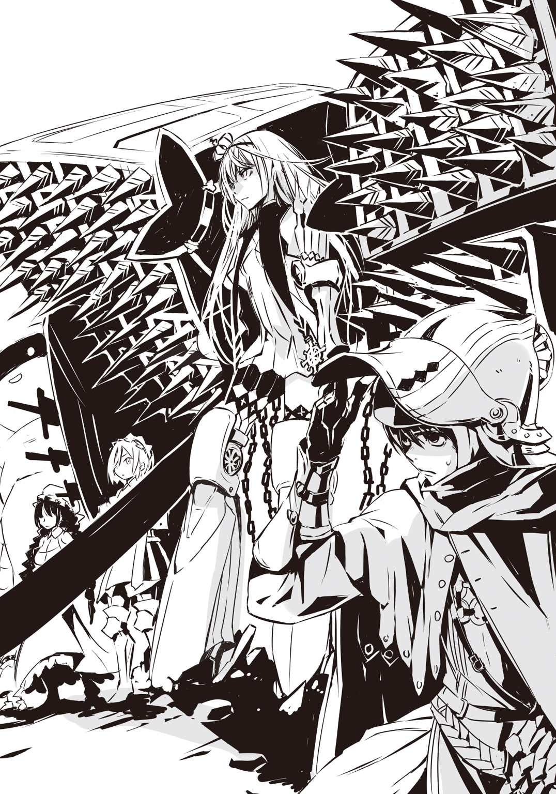
フェニックスを装備した姫と、ギチコとチヌコと五十体の人形兵士たち、そしてルルチナ、それからおまけのハイジ。あわせて四人と五十一体の人形。
――対、二万を超えると推定される土色の帝国軍機士。
ハイジは振り返って、イエルヴァラ北門上の楼閣に目をやった。１キロル離れているので見えるわけもないし、大声で叫んだとしても聞こえないだろうが、楼閣の上で全軍の指揮をとっているはずのピエール・アルトレッド司令に問いたい。――何なんですか、これは。
いったいこれは、どういうことなんですか。
これでいいんですか。
こんなのって、ないですよ。
おかしいですよね？
変でしょ？
絶対、変ですって。
ありえないって。
だめですよ。
「そろそろ、征く」
姫が、眠いから寝る、と言うときのような調子で呟いた。
「かしこまりました、サクラ様」
ルルチナが微笑んで応え、ギチコはなぜか眼鏡を外した。
「いつでもいい。です」
「――え......」
ハイジは兜のバイザーを下ろして、すぐに上げた。
「えっ？ いくって......ど、どこにですか......？」
姫は返事をせずに深呼吸をした。姫の肩が、それにあわせてフェニックスが、上下する。
一団は、姫を先頭にして、ルルチナ、ギチコ、ハイジとつづいて、五十体の人形たちがその周りに槍と盾を並べている。
姫が一歩、踏みだした。
三歩目には駆け足になった。
速度が上がる。
ルルチナが、ギチコが、そして人形の兵隊が進みはじめた。
ハイジもつられて走った。でも、ルルチナたちはせいぜい早足程度だ。どんどん姫から遅れる。みるみるうちに引き離される。
「つ、ついていかなくて......!?」
「足手まといになるだけです」
ルルチナは姫の後ろ姿から目を離さない。それでいて、足を速めようとはしない。
「ギチコ。矢がきます」
「うん。です」
ギチコがうなずくと、人形の兵隊が互いの間隔を若干詰めて、盾を掲げた。前方の機士たちはまだ整列し終えていないので、うごめいているような感じに見えるが――や？ やとは、矢のことか？ 本当だ。
機士の列の後ろのほうから、数えきれないほどの小鳥が同時に飛びたったかのようだった。もちろん、小鳥なんかじゃない。矢。矢だ。数百本、いや、数千本の矢が放たれたのだ。
「うわぁ......!?」
「落ちついてください、少尉」
ルルチナがそう言ったときにはもう、数千本の矢は放物線の一番高いところをすぎて落下を始めていた。
「届きません」
「そっ――」
わかっている。ハイジとて、それくらいのことはわかっているのだ。
帝国軍の機士には甲乙丙丁の四種があって、丙機士は弓と杓剣を持っている。ようするに、弓兵だ。帝国製の丙機士弓は、とにもかくにも矢が到達する最大射程が500メトル、大きな的をどうにか狙える有効射程はせいぜい100メトルだとされている。戦闘開始直後に行われることが多い一斉射撃は、敵味方の距離350メトルから、というのが相場のはずだ。
ハイジたちと機士たちとの間には、依然として500メトルほどの距離が横たわっている。
「――姫......！」
ただし、姫はハイジたちより100メトル以上、先行しているのだ。そもそもあの矢は、ハイジたちめがけて放たれたものじゃない。姫。
姫だ。
大量の矢が落ちる。有効射程外だし、射撃の精度は低い。そうはいっても、十本やそこらは姫に降りそそぐだろう。フェニックスは大きいから、傘の役割を果たしてくれるかもしれない。それでも、数本の矢が姫の躰を貫く恐れはある。そうなってもおかしくない。というか、常識的に考えれば、よほど運がよくないかぎり、そうなるだろう。
「ひ、姫......!?」
でも、姫は止まらない。足をゆるめることもしない。
数千本の矢が大地に突き刺さった。姫だって何本か浴びたはずだ。
それなのに、姫は進む。
突き進む。
一斉射撃は一度ではすまない。つづいている。
矢は雨のようだ。姫を打ちすえようとする豪雨だ。
姫は矢の豪雨をものともせずに突進する。滝のごとき矢の中を突っ切る。駆け抜ける。
ついに一斉射撃が終わった。
ハイジたちも一応、前に進んだが、それでもまだ、帝国軍の最前列まで200メトルはあるだろう。姫は100メトル以内、おそらく70メトルかそこらだ。
一斉射撃をする際は弓持ちの丙機士が前列に出ているはずだが、接敵するときには重槍と大盾を持つ甲機士や、鈍剣と杓剣を装備する乙機士が、丙機士と入れかわって前に出る。
丙機士が後退しはじめたそのときに、姫は右手で鎖を引いた。
「うぅぅぅぅぅぅぅぅぅぅぅぅぅあああああああぁぁぁぁぁぁぁぁぁぁぁぁぁぁぁぁ......！」
姫の声が響き渡る。
二十四連装式弩。
連装式弩の射程と威力は、単発式の弩にはどうしても劣る。とはいえ、200メトルはゆうに飛ぶし、数十メトルの近距離射撃なら、金属の甲冑を貫通するほど強力だ。
かつて、戦場で勇士たちが名乗りをあげ、雄々しく一騎打ちを繰りひろげた時代には、国と国とが申しあわせて使用を禁止したこともあったという。扱いが簡単で、子供でも引き金を引くだけで人を殺傷できる。弩は無情の武器だ。
姫はその弩の最先端に位置する、現状もっとも進化した二十四連装式弩をぶっ放した。
あっという間に、百四十四連射。
太矢を浴びて、数十人の機士が倒れた。
姫は足を進めながら、さらに別の鎖を引っぱる。
百四十四本の太矢が間断なく発射されている間に、５メトル、10メトルと前進してゆく。
「ギチコ！」
ルルチナは、鋭く声をかけると、いきなり疾走態勢に入った。ギチコが追う。人形の兵隊も遅れずについてゆく。
「ぅあぁっ......!?」
ハイジも慌てふためきつつ、必死に脚を動かす。
下がる、あるいは太矢を食らって倒れる丙機士たちの合間から、甲機士が出てくる。でも、ハイジたちの、姫の正面の敵隊列は乱れに乱れて、今にも崩れそうだ。
もっとも、二十四連装式弩をお見舞いされていない左右の敵陣は違う。ハイジたち、いや、姫に向かって、甲機士たちが押しだしてくる。このままだと、ハイジもだが、姫が両側面から挟撃されてしまう。
「たかが機士の分際で......！」
二基目の二十四連装式弩を撃ち尽くした姫が、躰を右に向けて三本目の鎖を引いた。
「生意気......！」
右からくる甲機士たちに二十四連装式弩が太矢を噴く。
太矢は甲機士の大盾に突き刺さるが、なかなか貫通できない。甲機士は丙機士のようには倒れてくれない。
三基目の二十四連装式弩が空になるころには、ハイジたちは姫に追いついていた。
「姫......！」
ルルチナが兵器の山を背から下ろして、姫は左を向いて四本目の鎖を引きはじめる。
太矢が出なくなると、姫はすかさず十字型投擲剣を抜き、甲機士たちめがけて投げつけた。
「らぁぁぁぁぁぁぁぁぁぁ......！」
十字型投擲剣がぐるぐるぐるぐる回転しながら飛んでいって、三、四人の甲機士を大盾ごと薙ぎ倒す。
姫は片刃大長剣を抜いて、フェニックスを外した。
「ルルチナ、換装！」
「かしこまりました、サクラ様......！」
ルルチナはすでに荷ほどきを終えていた。どうやら、フェニックスに据えつけてある空っぽになった二十四連装式弩を、太矢が完全装塡されている二十四連装式弩に付け替えるつもりらしい。その作業がもう、速いなんてものじゃない。どれだけ手慣れているのか。見とれている場合でもない。姫が。
姫が、右肩に担ぐようにして片刃大長剣を構えて、右方向の甲機士たちに突っこんでゆく。
「噓だ......！」
ハイジは叫ばずにはいられなくて、叫んでしまった。
姫は左手の四連装式弩から二十四本の太矢を発射させて、二、三人の甲機士を射倒した。でもそんなの焼け石に水じゃないか。敵がどれだけいると思っているのか。たくさんだ。たくさん、それはもうたくさんいる帝国軍甲機士の大群、いや、大軍に、姫は一人で突撃する。
「やああああああああああぁぁぁぁぁぁぁぁぁぁぁぁぁぁぁぁぁぁぁぁぁぁぁぁぁぁ......！」
片刃大長剣を振りおろしもせずに。
ぶつかった。
何体もの甲機士が、姫に。
姫の躰に。
体当たりだ。姫は何の工夫もない、ただの体当たりを敢行したのだ。
甲機士たちは当然、大盾を構え、重槍を突きだしていた。そこに体当たりなんかしたら、普通というかどう考えても、重槍で串刺しにされるか、大盾で撥ね飛ばされる。
そうはならなかった。
重槍だろうが大盾だろうが、姫に少しでもふれると即座に、もしかするとふれる直前に、例外なく吹っ飛ばされた。重槍や大盾もろとも、甲機士本体もぶっ飛んだ。
あのときと同じだ。
斥候部隊を姫がたった一人で殲滅したときと、まったく同じことが起こっている。
魔性。
あれが姫の魔性。
「〝〟」
二十四連装式弩の換装を終えたルルチナが、あまりにも残酷すぎて救いのない歌を唄うように言った。
「常時発動、自動型。反射系。――絶対反射。ありとあらゆる力を撥ね返してしまう。倍に、三倍、四倍にして、勝手に、どうしようもなく、何があろうと、たとえ空が、大地が、世界が引き裂かれても、誰も、何も、サクラ様にふれることはできない。それが、魔性。それこそが、サクラ様の魔性です」
「ハイパー・バラッド......」
ハイジは呆然と呟いた。
ルルチナはあのとき、姫にさわるな、とハイジに言った。指一本でもふれてみろ、そんなものではすまないぞ、と。
誰も、何も、姫にさわることはできない。
さわったら、いや、さわろうとしたら、勝手に、自動的に、ああなる。
姫に攻めよせては撥ね飛ばされる、甲機士たちのように。
無駄だ。
姫を攻撃すれば、重槍も、大盾も、甲機士自身も、撥ね返されてしまう。
ぜんぶ無駄だ。
姫は攻める。用済みの四連装式弩を投げ捨て、甲機士たちに攻めかかり、片刃大長剣を振るう。これが、斬れる。重槍も大盾も甲機士そのものも、斬れる。ズバッと斬れる。スッパリ斬れる。斬れる。そんなに斬れていいのかというほど、斬れる。斬れまくる。斬れすぎる。斬れる。斬れる。斬れてしまう。
もともと片刃の剣は、斬ることにかけては並ぶものがない。ただし、両刃の剣に比べると用途が限定されるし、防御にもあまり適さないという欠点がある。
受けに回れば、両刃の剣のほうが圧倒的に扱いやすい。突くなら、槍のほうがいい。破壊力なら帝国軍の鈍剣や重槍だろう。
片刃の剣は極端に言えば、ひたすら斬る、ただ斬るだけの武器だ。
姫はまさしくそのとおりの使い方に徹している。円。円運動だ。回って、遠心力を利用して、斬る。回転して、斬る。
戦列なんて、隊列なんて、隊形なんて、陣形なんて、姫の前では何の意味もない。どんな敵も、姫にとっては敵じゃないからだ。
姫には敵なんかいない。
――わたしは無敵だから。
姫の言葉は大袈裟でも比喩でも何でもない。ありのままの事実だった。
もっとも、あくまでそれは姫が文字どおり無敵だというだけのことで、ハイジたちは違う。
向かって左側から寄せてきた甲機士たちと、人形の兵隊たちが激突した。その瞬間、何体かの人形が重槍と大盾で突き倒された。人形たちの守備陣は厚くない。というか、薄っぺらだ。人形が一体倒れれば、そこに穴があく。
「上等じゃねえか......！」
ルルチナが舌舐めずりをして、二十四連装式弩を担ぎあげた。
「おらあぁぁぁぁぁぁぁぁぁぁ！ 死ね死ね死ね死ね死ね死ね死ね死にくさりやがれ......！」
鎖を引いて、守備陣の穴に太矢を注ぎこむ。そこから入りこんでこようとする甲機士たちが太矢だらけになって、次々とひっくり返った。
ギチコは青い両眼を爛々と輝かせて、人形たちを操っているのだろう。
ハイジは宝剣ワイバーンの柄に手をかけているだけの、一傍観者に成り下がっていた。
何かしないといけない。そう思う。自分だって何かしたい。何か。何か？ 何かって......？
そんなの単純なことではないか。戦う。
戦うのだ。
今ここでそれ以外にできること、やるべきことがあるだろうか。ない。一つもない。
ハイジも戦うのだ。戦え。戦え。戦え。戦わなきゃいけないだろう？ そうだ。頭ではわかっている。ならば、躰が理解していないのか。果たして、そういう問題だろうか。
ふと、学生のときに読んだ兵卒の行動に関する研究資料が頭をよぎった。
公立学校上がりの准士官は、後方勤務を経て経験を積みながら前線へと近づいてゆく。戦場に出るころにはいっぱしの士官になっていないと、部隊指揮や作戦立案といった任務をこなせないからだ。指揮者や参謀が役立たずだと、軍は機能不全に陥る。それに、士官の養成には時間と金がかかるので、そのぶん大切に扱われるという身も蓋もない事情もあるらしい。
でも、兵卒は違う。兵役の対象になって徴兵されるか、志願するか。どちらにしても、兵卒になると、たいていは短期間の訓練を受けたのち、いきなり前線に配備される。
なぜなら、新兵の九割以上は基本的に使い物にならない。どんな状況でも訓練どおりに積極的な戦闘行動をとることができる者は、新兵のうちの一割程度だとされている。
ただ、自分や仲間の身に危険が及べば、たいていの新兵が死にものぐるいで戦う。
逆に言えば、殺さなければ殺される、という条件を与えられなければ――つまり、前線に配置されなければ、大半の新兵はいつまで経っても使えない兵卒のままなのだ。
軍は、そうした新兵の、というよりも人間の習性を知っているから、未熟な兵卒を危険な場所へと叩きこむ。そして戦争を経験させることで、戦える兵卒に仕上げるのだ。それでも仕上がらない、使えないままの兵卒が、二割ほどはいるのだという。
ハイジ・バランはその二割なのではないか。
この明らかな最前線で、間違いなく危地に追いやられているのに、足がすくんで動けないのだ。使えない側のハイジは、使えるように仕上がらないまま、ここで死ぬのではないか。
片刃大長剣が折れてしまい、片刃剣を振りまわしながら、姫が駆け戻ってきた。フェニックスを背負って、さっそく二十四連装式弩を撃つ。鎖を引いて撃つ。撃ちまくる。
「後退して......！ 邪魔......！」
姫に命じられると、ルルチナは空になった二十四連装式弩を捨て、別の二十四連装式弩を担いだ。
「下がるぞ、ギチコ......！ サクラ様の手をわずらわせちゃいけねえ......！」
「あいっ」
ギチコは変な返事をして、人形たちの陣形を縮めた。
人形の兵隊が、ルルチナが、ギチコが、おまけのハイジが一歩、二歩と下がるたびに、姫はかえって前に出る。
「あああああぁぁぁぁぁぁぁ！ うああああぁぁぁぁぁぁぁぁぁ......！ ああああああああああぁぁぁぁぁぁ！ うぅぅぅぅぅぅぅあああああぁぁぁぁぁぁぁぁぁぁぁぁぁぁぁぁ......！」
フェニックスに搭載されている四基の二十四連装式弩は、あれよあれよという間にすべての太矢を吐きだしてしまった。姫はフェニックスを捨て、甲機士たちに投げつけて、ルルチナが遺棄する形となった兵器の山に飛びつく。十字型投擲剣を、投槍を矢継ぎ早に投擲する。甲機士たちが十字型投擲剣にぶった斬られ、投槍に刺し貫かれる。
投げるものがなくなると、姫は両手に一本ずつ、片刃大長剣を持った。
姫の呼吸は荒い。全身、汗でびっしょりだ。
甲機士たちが姫に押しよせて、爆発が起こったみたいに吹き飛ばされる。
「はは......！」
姫が笑った。
でも、後ろ歩きをして徐々に姫から遠ざかろうとしているハイジの耳には、その声がまるで泣き声のように聞こえた。
「あははははははは......！」
泣き笑いのような声を発しながら、姫が跳んだ。
右手の片刃大長剣で甲機士を斬る。左手の片刃大長剣で甲機士を斬り倒す。何人もの乙機士が鈍剣を轟ッと振りまわして姫に叩きつけ、躰ごと弾かれた。甲機士と乙機士が入り混じって姫に殺到する。
さっきまで姫の相手はほとんど重槍、大盾を持つ甲機士だった。白兵戦のとき、先陣を切って突撃するのが帝国軍における甲機士の役割だ。甲機士が相手の陣形を破壊し、そこに鈍剣と杓剣を装備した乙機士が突入して暴れる。
現状はその逆だ。姫が敵軍最前列の甲機士たちを突き崩した。そのせいで、自然と乙機士たちが前に出る羽目になっているのだ。
「弱い......！」
姫が叫び、甲機士が、乙機士が弾け飛ぶ。
「弱い！ 弱い！ 弱い！ 弱い！ 弱い！ 弱い！ 弱い！ 弱い！ 弱い！ 弱い！ 弱い！ 弱い！ 弱い、弱い、弱い、弱い、弱い、弱い、弱い、弱い、弱い、弱い、弱い、弱い、弱い、弱い、弱い、弱い、弱い、弱い、弱い、弱い、弱い、弱い、弱い弱い弱い弱い弱い弱い弱い弱い弱い弱い弱い弱い弱い弱い弱い弱い弱い弱い弱い弱い弱い弱い弱すぎる......！」
姫は片刃大長剣で甲機士を、乙機士を撫で斬りにする。甲機士、乙機士は、姫に詰めよせては撥ね返される。
むろん、ハイジたちのほうにも敵はくる。でも、その数は決して多くない。姫に攻めよせる敵の数に比べれば、遙かに少ない、とさえ言えるだろう。それにこっちは、ハイジこそただいるだけだが、ルルチナがいて、ギチコがいて、人形の兵隊が、いくぶん打ち減らされたにしてもまだ三十体以上、残っている。ギチコが操る人形たちが身を挺してハイジたちを守ってくれるし、ルルチナは二十四連装式弩を撃ち尽くして捨ててしまったが、近づいてくる敵がいると殴り飛ばす。蹴り飛ばしてしまう。――一方的。
まさしく一方的だ。
姫はもういったいどれだけの機士を屠ったのだろう。数十？ いや、そんな数じゃとてもきかない。数百？ 千？ ひょっとして、それ以上？
軍においては、組織だった戦闘行動を継続できなくなるほど兵力が損耗した状態を、全滅、と呼ぶ。兵力の半分を失えば、もはや軍としての体をなさないので、壊滅、と称される。
帝国軍の機士は、公国軍の兵士とは違う。人間ではない彼らは、どんなに味方が倒されても恐れないし、勝手に逃げたりしない。だから全体の二割、三割にあたる数の機士が死んでも、指揮官が撤退を決断しないかぎり、戦いつづけることができる。そうはいっても、兵力が半減すれば、帝国軍といえどもまず兵を退くようだ。
廃王ジーク・ザラナスターが率いているのだろうあの帝国軍を、姫はほぼ単独で壊滅に追いこもうとしてるのか。
推定二万人以上の機士を、たった一人で。
「――勝つ？ 一人で......？」
できっこない。普通なら。しかし、姫は普通じゃない。圧倒的に。
何せ、姫は無敵なのだ。姫に攻撃した者は吹き飛ばされる。攻撃しなければ、姫に斬り殺される。
姫は敵陣にしっかりと食いこんでいる。ハイジたちは少しずつ下がっているが、姫は前進しつづけている。
廃王ジークは敵陣の奥にいるだろう。遅かれ早かれ、姫はそこまで到達する。
だって、姫を止める手立てはないのだ。姫は必ずそこにたどりつく。
その前に廃王ジークが逃げだせば、話は別だ。逃げなければ、姫はいつか廃王ジークに食らいつくだろう。姫は無敵だから、廃王ジークを打ち倒してしまうに違いない。かくして廃王の軍は敗れる。姫が勝つ。姫は一人で勝ってしまう。
これが姫の、サクラスティアリス・デスティニアリス公女の戦いなのか。
甲機士と乙機士たちが姫を押し包もうとして、撥ねのけられる。姫は右手の片刃大長剣で甲機士を大盾ごとぶった斬る。左手の片刃大長剣で乙機士を一刀両断する。また甲機士と乙機士たちが姫に躍りかかり、盛大にぶっ飛ばされる。その拍子に腕がちぎれる機士もいる。重槍や大盾、鈍剣や杓剣が飛び散って、甲機士や乙機士を襲う。ぶっ飛ばされた甲機士や乙機士も甲機士や乙機士にぶつかる。中には姫に迫ろうとしていた甲機士の重槍に貫かれる甲機士や乙機士もいる。甲機士と乙機士が折り重なって倒れている。
ハイジはもう驚いてはいない。驚愕なんかとっくにどこかへ行ってしまった。それよりも、すごい。すごいなんてものじゃない。ものすごい。姫はすごすぎる。ハイジは震えていた。たしかにハイジ・バランは使えない側の二割なのかもしれない。きっと天性の臆病者なのだろう。それでも、この震えは恐怖からくるものじゃない。ハイジは怖くなかった。ここは戦場なのに、本当の本当に最前線なのに、ちっとも恐ろしくない。
姫が勝とうとしているからだ。勝っているからだ。
英雄の、まさしく英雄的な、信じがたい、度外れの、絵空事めいた、まるで物語のような活躍を目の当たりにして、ハイジは興奮している。
「......でも――」
なぜだろう。
「くああぁぁぁぁぁ......！ はあああああぁぁぁ......！ らぁぁぁぁぁぁあああああ......！」
どうして姫が発する声は、あんなに――苦しそうなのか。
よく見れば、姫の姿勢が低い。ずいぶん前屈みになっている。疲れているのか。そうだ。
姫は無敵かもしれない。だからといって、疲れ知らずだとはかぎらない。フェニックスを背負って突き進み、片刃大長剣をああやって振りまわしている。疲労しないわけがない。
でも、それだけなのか。
甲機士と乙機士たちが性懲りもなく姫に群がってゆく。
さながら爆風に煽られたかのように、甲機士と乙機士たちは吹っ飛ばされる。
「――っっっっっっっっっっっっっっっっっっっっっっ......！」
その中心で、姫は、ハイジの目が確かなら、見間違いじゃなければ、のけぞった。
疲れて、あんなことをするものだろうか。しない、と思う。
当然、疲れてもいるはずだが、たとえば、痛いとき。
姫は今、耐えがたい苦痛を感じて、身をよじったんじゃないのか。
ハイジの目にはそんなふうに見えたのだ。
「ルルチナさん......？ 姫が――姫は......もしかして......!?」
「魔性には、〝制約〟と呼ばれる制限や副作用があります。――うおりゃあ......！」
ルルチナは、突っこんできた乙機士に飛び蹴りを見舞った。
「サクラ様の〝限り無く愛なき世界〟も例外ではありません。あの恐るべき魔性は、ありとあらゆる力を自動的に反射してしまいますが――その際、サクラ様が何も感じないわけではないのです。鋭い剣で斬りつけられても、サクラ様の躰には毛ほどの傷もつきません。ただし、斬られた痛みはサクラ様を苛みます」
「はぁぁぁぁぁぁぁぁぁぁぁぁぁぁぁぁぁぁぁぁぁぁぁぁぁぁぁぁぁぁぁぁぁぁぁぁ......!?」
何だよ、それ。
馬鹿な。
そんな馬鹿なことが。痛み？
痛み、だって？
力を反射するのに、痛みだけは？
姫は、痛い？ 今、姫は痛がっているのか......？
違う。今だけじゃない。ずっとだ。
ずっと。
ずっと。
ずっと。
ずっと。
ずっと。
ずっと。
最初からずっと、痛かったのだ。機士に攻撃されるたびに、痛かった。姫はただ、我慢していただけなのだ。
「......もし――もし、痛みに耐えきれなくなったら......!?」
「申しあげなければわかりませんか？ ――おおぅらぁ！ ずぉりゅあっ......！」
ルルチナは甲機士の大盾をぶん殴って突き倒し、乙機士を蹴倒して、緑色にきらめく瞳でハイジをちらっと見た。
「当然、魔性の効力が失せます」
「それってつまり、姫はっ――......」
仮に、この状況で姫が限界に達したら、敵中で孤立する。無防備で。無敵じゃない、ただの公女が。十六歳の少女が。そうしたら、どうなる？ 考えるまでもない。
ひとたまりもないはずだ。たやすく命を奪われてしまうだろう。――そんなの......！
「だめだ......！」
ハイジは宝剣ワイバーンを抜いて、ルルチナの脇をすり抜け、乙機士の鈍剣を宝剣で受け止め、即座に押し返し、踏みこんで首を刎ねた。
「だめだ！ だめだ！ だめだ！ だめだ！ だめに決まってる！ だめですよ......！」
人形の兵隊は二十体ほどに減っている。守備陣はすかすかだ。その合間から敵が続々と入ってくる。ようするに、斬るべき敵はいくらでもいるということだ。ハイジは、ハイジ・バランは、こう見えて剣術が得意なのだ。剣達者の武術教官にだって負けたことがない。やれる。
その気になれば、腹さえ据われば、やれるのだ。
やる。やってやる。甲機士が何だ。重槍、大盾、装備が大仰で、のろまじゃないか。止まって見える。彼らの重槍はハイジをとらえられない。大盾なんてただちょっと邪魔くさいだけだ。ハイジは甲機士の横に踏み入って首を斬り飛ばす。乙機士が何だ。鈍剣は重くて遅い。あんなもの食らうわけがない。杓剣だってべつに速くはない。だいたい機士の動作は単調だ。人間とは違う。決まりきっていて、こんなやつら、相手にならない。ハイジは乙機士の鈍剣をよけて、杓剣を弾いて、首を断ち斬ってしまう。
斬れる。斬れるぞ。さすが不壊の剣。カバランソード。宝剣ワイバーンは笑いたくなるほどよく斬れる。
もちろん、笑ったりしない。笑えない。
ハイジは怒っているのだ。
「だめだ......！ 姫一人にやらせちゃいけない......！ そうでしょう、ルルチナさん、ギチコさん！ 違いますか......!?」
「止められるんだったらなあ......！」
ルルチナが機士たちを蹴りのけながらハイジに詰めよってきて、胸倉をつかんだ。
「止められるんだったら、とうの昔に止めてんだよ......！ 止められねえから！ サクラ様を止めることなんかできやしねえから！ だから、せめてこうやって、手伝いをさせてもらってるんだ......！ 知ったような口きくんじゃねえ、青二才が......！」
「きくさ！ どんな口だってきく！ 僕が青二才だって......!?」
ハイジはルルチナの手を振りほどいた。
「それがどうした......！ 僕は前に出る！ 姫の命令だろうと、聞くもんか！ もう絶対に下がらない！ 姫のそばに行く！ 姫と一緒に戦うんだ......！ 僕一人でも......！」
「できると思ってんのかよ！ おまえごときへなちょこ野郎が......！」
「やるんだ！ 僕は姫の侍官だ......！」
ハイジは駆ける。手当たり次第、すれ違いざまに、機士たちを斬り捨てながら、駆ける。
「くそったれ......！ ギチコ！ あの馬鹿を一人にはさせられねえ！ 行くぞ......！」
「あいっ......！」
ルルチナが、ギチコが、人形の兵隊たちが、ハイジにつづく。
やはり心強いからだろうか。彼女たちが追いかけてきてくれると、ハイジの躰は軽くなって、ワイバーンは鋭さを増した。
ハイジは頭にきている。ただし、激怒して我を失っているわけじゃない。ちゃんと計算もある。ハイジの行為は危険ではあっても、無謀ではない。なぜなら、敵は基本的に姫を狙っているのだ。九割以上の敵が姫を標的にしているといっても過言じゃない。
姫の前面と両側面の敵は密。きわめて、密。
でも、ハイジたちの周りや、姫とハイジたちとの間にいる敵は、疎。かなりまばらだ。
これならば突破できる。そう読んでいた。とても腹が立っているのに、ハイジは、少なくともハイジのある部分は、妙に冷静だ。そのせいで気づいたのかもしれない。
「敵の動きが変だ......！」
さっきまではわからなかった。敵軍が、なんというか――逆流している。
機士たちは前と左右の三方から姫に押しよせる。大半が姫にやられてしまうが、ふたたび起きあがる機士もいる。そうした機士たちが、すぐさま姫に攻めかかるのではなくて――引き返している？ 左右に？ それで逆流しているように見えるのか。しかし、敵の陣形が左右に広がっていっているような様子はない。ならば、退いた機士たちは、いったいどこに......？
一つの仮定が頭に浮かんだ。
敵軍は、逆流というより、回転しているんじゃないのか......？
つまり、いったん姫にぶつかって、倒されずに退いた機士たちは、ぐるっと大回りして姫の前方に展開している戦列に加わり、これを増強する。
廃王ジークは敵陣の奥にいると思われるし、姫もそこを目指しているはずだ。
だが、ハイジが立てた仮定どおりだとすると、廃王ジークを守っている正面の戦列は、姫が削っても削っても補充される。
もちろん、兵力は有限だ。無限に補充されるわけじゃない。機士の数が減るごとに、敵陣全体としては薄くなってゆくだろうが、時間稼ぎにはなる。その間、姫は攻撃されつづけて、やがて限界を超えるかもしれない。――もしそれが敵の、廃王ジークの狙いだとしたら。
「姫......！」
ハイジはワイバーンで機士を斬って、姫との距離が狭まるごとに加速する。早く。
一刻も早く、姫のところへ。
「ああああぁぁぁぁぁぁぁぁぁ......！ うぅぅぅぁぁぁぁぁあああああぁぁぁぁぁぁ......！」
姫は片刃大長剣を一本捨てて、もう一本の片刃大長剣を両手持ちしている。それを力任せに、躰ごと振りまわす。右旋回して機士をぶった斬る。左旋回して機士を斬り倒す。姫はそこで止まる。今にも倒れそうなほど低い姿勢で、うなだれ、片刃大長剣を支えになんとか立っているかのような姫に、機士たちが殺到する。
「っっっっっっっっっっっっっ......！」
機士たちは撥ねのけられ、姫は身をそり返らせて天を仰ぐ。
「――まだ......！」
でも、姫はやめない。また両手持ちした片刃大長剣を、躰ごと右旋回、左旋回させて、機士を斬って、姫は止まり、機士たちが押しよせて、撥ね飛ばされる。姫は苦痛に耐える。
「くっっっっっっっっっっっっっっ――――......！」
ハイジのほうにも乙機士が飛んできた。
その乙機士をよけて、ハイジは一気に姫の隣へ。ああ。
ああ......！
なんてことだ！
姫はその身に傷一つ負ってはない。激しく動きまわったせいで乱れ、ところどころちぎれた着衣は、汗で濡れそぼっている。薔薇のしずくをとかして加えた白金の髪もそうだ。躰じゅうがびしょびしょだ。まるで姫だけ土砂降りの雨の中にいるかのようじゃないか。いや、違う。ハイジにはこう見えた。
姫は全身で泣き叫んでいる。
決して逞しくなんてない、ごつごつしたところなんかまったくなくて、どんな重みにも耐えられるとは思えない、姫の華奢な躰から、とめどもなく涙があふれている。
「姫が......！ 一人で戦うことなんて、ないんだ......！」
ハイジは寄せくる機士に斬りかかる。今のハイジには機士たちがすべて、甲機士だろうと乙機士だろうと、それから弓を納めて杓剣で突きかかってくる丙機士だろうと、鈍重で、鈍重すぎて、しかたない。こんなに冴えていることはないというくらい、ハイジの剣は冴えに冴えて、冴え渡っている。敵の、機士たちの攻め手なんて問題じゃない。ハイジには確信がある。彼らの攻撃は絶対にハイジには届かない。彼らはあまりにも遅すぎて、単純すぎる。ハイジには手にとるようにわかる。ぜんぶ見えている。ハイジ・バランは速い。彼らの三倍は速い。五倍は速い。十倍も速い。
不壊の剣、カバランソード、ワイバーンで機士たちの首を絶え間なく刎ね飛ばしながら、姫のおかげだな、とハイジは思う。きっと姫のおかげだ。
姫をたった一人で戦わせてしまった。そんなことをさせてはいけなかったのだ。ハイジは侍官なのだから。姫のそばで剣を振るわなきゃいけない。もちろん、姫の足手まといになってはいけない。姫に庇われるようではだめだ。姫の力になるくらいでないと。いざというときは姫を守れないと。
姫がそばにいるから、ハイジは強く、速くならなくてはいけない。
今のハイジは、姫のそばにいるから、強くて、速い。
敵よ。
甲機士よ。乙機士よ。丙機士よ。
すべての敵たちよ。
我が前に立ちふさがれ。ハイジ・バランがおまえたちを排除してゆく。
おまえたちの重槍も、大盾も、鈍剣も、杓剣も、この身にはかすりもしない。
この剣、ワイバーンは、おまえたちの首を紙でも断つように斬り裂いてしまう。
知らなかった。
自分の躰をこんなふうに、変幻自在に動かせることを、今までハイジは知らなかった。最大の効率で敵を討つ方法を知らなかった。戦場を把握し、支配する術を知らなかった。ハイジは何も知らなかった。今、ここで知った。
ハイジは姫の左側百八十度、半円状の空間を制圧している。姫の右側百八十度、逆側の半円状空間は、ルルチナとギチコの〝無慈悲な玩具〟が機士たちを防ぎ止めて制している。
「......何、してるの!?」
姫が怒鳴る。悲鳴をあげるみたいに。
「わたしは、後退しろって言ったはず......！ なんでここにいるの......!? これはわたしの仕事なの......！ わたしがやらなきゃいけないの......！ わたしが......！」
「なぜですか......!?」
ハイジは日常業務のように機士を斬り殺しながら、叫ぶ。
「なんで姫が一人でやらなきゃいけないんですか......!? これは、公国を守るための戦いなのに！ こんなの間違ってる......！」
「だって......！」
姫はもう、しゃがみこんでしまいそうだ。目をうつろに見開いて、肩は落ち、腰は沈んで、膝が地面についてしまいそうだ。
「だって、わたしがやらなきゃ、人が死ぬもの」
姫の言葉が――、
「わたしは死なない。無敵だから。でも、兵たちは違う。死ぬ。戦に負けたら、死ぬ。勝っても、死ぬ。死んでしまう」
ハイジの胸の奥深くまで、突き刺さって、
「あの人たちには親がいる。兄弟がいて。奥さんがいて。恋人がいて。子供がいて。友だちがいて。兵が一人死ねば、その人たちが、子を、親を、兄弟を、夫を、恋人を、友だちを失う。でも、わたしは死なないから。わたしは、無敵だから」
――引き裂く。めちゃくちゃに。
「わたしが戦って、
わたしが一人で戦って、
わたしが勝てば、
誰も死ななければ、
こんなわたしにも、
無敵の、
化物のわたしにも、
生きている、
わたしが生きている、価値が、
意味が」
「馬鹿なことを言うなぁぁぁぁぁぁぁぁぁぁぁぁぁぁぁぁぁぁぁぁぁぁぁぁぁぁぁぁぁぁ！」
ハイジは激昂して、すぐさま自分を戒めようとする。戦闘中だ。ハイジは機士たちを次から次へと斬って捨てている。怒りで平静を失ってはいけない。でも、ワイバーンを振るいながら、機士たちの間を縫うように駆けて機士たちの首を刎ねながら、言わずにはいられない。
「戦うなとは言わない......！ それが姫の理由なら！ 奪うことなんかできない！ だからって！ 一人で戦わせたりするものか......！ 僕も！ 僕も戦う！ だけど、心配しないでください、姫......！ 僕は強い！ 僕は姫の侍官だ！ 姫のために、僕は強くなれる！ 僕は絶対に、死んだりしない......！」
「あっはっはっはっはっはっはっ......！」
ルルチナが大笑いした。
「言うじゃねえか、青二才......！ サクラ様......！ 今日までさんざん我慢してきましたが、もうやめだ......！ もう下がれと言われたって下がらねえ！ 今日からは、ルルチナもサクラ様の隣で戦らせてもらいます......！ 死んだりしねえとか、そのたわけた小僧みたいなことは言わねえが、たとえくたばったって自分の命だ......！ 好きに使わせてもらう......！」
「あ、あたしも！」
ギチコのこんなに大きな声は初めて聞いた。
「ここにいる！ です......！ あたし！ ここにいたかった！ ずっと！ サクラさまが一人で、そんなふうにしてること！ かあさんだって、望んでない......！」
ギチコは姫の乳母の養子だ。かあさんというのは、言うまでもなく姫の乳母のことだろう。まるで、乳母さんはもういない、どこにもいないかのような言い方だ。そんなふうにハイジは感じて、気にはなったが、今はそれどころじゃない。
「――あなたたちは......！」
姫が飛びだす。
「馬鹿！ 大馬鹿！ どうしようもない馬鹿！ 馬鹿ばっかり......！ 死んじゃったら、どうするの......!? 取り返しがつかないのに......！」
片刃大長剣を振りまわして、前面の機士たちを削りとるように斬り伏せてゆく。
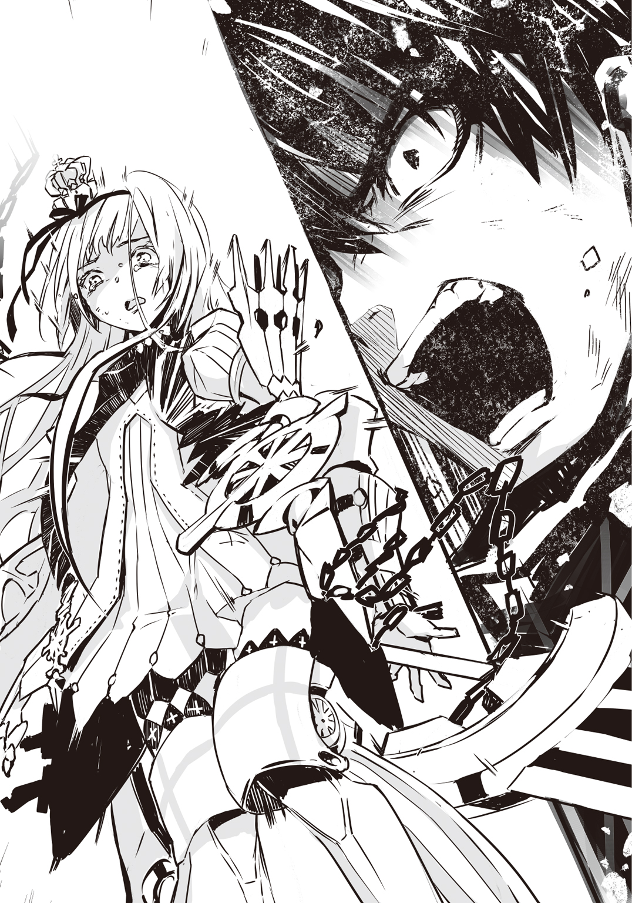
ハイジはもう、余計なことは言わない。姫の左隣でワイバーンを振るう。力まない。かといって、ゆるめない。適度な力加減で、機士たちの首を刈りとる。
ルルチナは姫の右隣で機士たちを殴り倒す。豪快に蹴っ飛ばす。
ギチコは姫の後ろにつけている。人形の兵隊はハイジたちの後方をカバーしてくれている。
姫は、ハイジたちは、進む。姫一人のときよりもずっと速く、鋭く、敵陣を抉ってゆく。
機士たちの循環、ハイジたちを受け止めている正面の戦列への兵力補充が、追っつかなくなっている。ハイジにはそれがわかる。
どうしてかというと、ハイジたちはさっきから、甲機士でも乙機士でもなく、丙機士ばかり相手にしている。基本的には弓兵で、接近戦のために杓剣を持っている丙機士は、緒戦で一斉射撃をしたあと後ろへ下がったはずだ。つまり、こいつらは後列部隊だ。
もうすぐハイジたちは突き破るだろう。そして、廃王ジークをとらえるだろう。
ハイジの予感は実現した。ただし、やや意外な形で。
突然、機士たちが左右に分かれはじめたのだ。あっという間にハイジらの前に道ができた。
その先に、一組の男女が立っていた。
燃えさかる炎のように赤い髪。黄色い瞳。何かもう嫌味なほど甘い、雅な印象を与える顔立ち。男は手袋をつけている。
ハイジは思わず立ち止まった。ハイジだけではない。姫も、ルルチナも、ギチコも、もちろん人形の兵隊も、足を止めた。
近い。
こんなに近づいていたのか。
彼我の距離はせいぜい20メトルといったところだ。
ジーク・ザラナスター。
廃王ジーク。
その妹、アナスタシヤ・ザラナスター。
「やあ。また会ったね。サクラスティアリス・デスティニアリス公女」
廃王ジークがゆっくりと歩きだす。
アナスタシヤは動かない。
廃王ジークの目が細められて、口許に貴族的な笑みが刻まれる。
「わざわざ敗れるために、きみはここまでやってきた。ご苦労なことだ、公女よ」
「......言ったはず。わたしは、無敵」
姫が一歩踏みだす。ハイジが前に出ようとすると、姫が首を振って制した。
「あの男は魔性を持っている。どんな魔性か知らないけど、少尉には荷が重い」
こればかりは、そのとおりだと認めざるをえない。
たとえば、姫の魔性を破る手立てがハイジにあるだろうか。ない。あるはずもない。
魔性は特別な力だ。魔性を持つ者は特別なのだ。機士ならともかく、廃王が相手となると、ハイジが姫の代わりに戦うことなどできない。常人にはその資格がないのだ。
「大丈夫」
姫はハイジのほうに顔を向けて、ほんの少しだけだが、白い歯をのぞかせた。
微笑みかけてくれたのだ。
姫が、ハイジごときに。
「わたしは負けない」
はい、とハイジは答えたつもりだ。でも、声が出たのか、出なかったのか、よくわからない。あの一瞬の微笑がハイジをとらえて離さなかった。ここは戦場で、敵軍の指揮官が目と鼻の先にいるのに、これから姫はおそらく最後の戦いに臨もうとしているのに、ハイジはうっとりとしていた。何をやってるんだと自分を叱咤しても無駄だった。これも姫の魔性なんじゃないかとハイジは疑った。あの一瞬の微笑みに、ハイジの心は奪われてしまっていた。
――ああ、僕は姫の虜だ。
とっくにそうだったのかもしれないけど。
「一対一張ってサクラ様に勝てるやつなんざ、いやしねえ」
ルルチナは深呼吸をして、うやうやしく一礼した。
「サクラ様。勝利を」
「んにゃっ」
ギチコは何か言おうとしてとちったのか、変な声を出して、うやうやしいとは表現しがたいが、心はたっぷりこもっていそうなお辞儀をした。
「すぐに戻る」
姫はそう言い捨てて、ゆったりとした足どりで廃王ジークに向かってゆく。
「きみの戦いぶりは見事だ、公女よ」
廃王ジークは前髪をかきあげた。
「気高く、美しい。もし私が廃王ではなく王であったなら、きみに結婚を申し込んだかもしれない」
「もし求婚されたら、わたしは即座に断るだけ」
「それは残念だ。私はきみに惹かれているのだよ。見かけではない。その美しさは誰にでもわかる。私が惹きつけられるのは、きみの中身だ」
「気持ち悪い」
「魂だよ」
「いいかげんにして」
「魔性だ」
「黙りなさい」
「公女よ。戦うきみは、とても苦しそうだ」
「今、黙らせる」
「魔性がきみを苦しめている。魔性の制約が」
「死になさい」
姫が駆けだした。
わずか三歩で廃王ジークを間合いにとらえて、片刃大長剣を斜めに振りあげる。
廃王ジークはよけない。ただ、手袋をつけている右手を前に出した。その手で片刃大長剣を防ごうとでもするかのように。馬鹿な。そんなこと、できっこない。
片刃大長剣が廃王ジークの右腕にふれる。右腕は斬り飛ばされるだろう。でも、そうはならなかったのだ。――爆発。
爆発した......!?
片刃大長剣の刃が廃王ジークの右腕にふれると同時か、その直前だった。光が強く閃いて、爆音が轟いた。熱が、炎が、噴きあがったのだ。
「っ......!?」
姫はとっさに片刃大長剣を手放した。片刃大長剣はすっ飛んで、地面を転がった。折れてはいないが、剣身が焼けて、煙を上げている。
「きみと私は似ているのだよ、公女」
爆炎はまたたく間に消え失せた。
廃王ジークは赤い髪がわずかに乱れているだけで、平然としている。
でも、間違いない。ハイジはたしかに見た。爆発は姫の片刃大長剣と廃王ジークの右腕の間で起こったのだ。――魔性。そうだ。
爆発の瞬間、廃王ジークの黄色い双眸が強烈な輝きを発していた。あれは魔性だ。
「私の魔性〝〟も反射系だ。きみの魔性もそうだろう？ だが、魔性というものは無制限な力ではない。大きな力には大きな制約があるものだ」
「だから......！」
姫は小型投剣革帯から小型投剣を抜いた。両手の親指と人差し指の間に一本、人差し指と中指の間に一本、中指と薬指の間に一本、ぜんぶで六本。
「何だっていうの......！」
姫は左右の腕を振りおろして、六本の小型投剣を投擲した。
廃王ジークはやはり、かわそうとしない。黄色い瞳が光って、右手で爆発、左肩で爆発、右胸で爆発、左胸で爆発、腹のあたりで爆発、爆発。六本の小型投剣は弾き飛ばされ、廃王ジークは微動だにしない。ただ赤髪が揺れただけだった。
「公女よ。初めて出会った日も、戦うきみは苦しそうだった」
廃王ジークが進みでる。
「私たちは似ているが、異なるところもある。私と違って、きみは痛みを感じているようだ」
「痛み、なんか――」
姫は腰に帯びている片刃剣の柄に手をかけて、すぐに離した。
「そんなもの。どうってことない」
「では、遊技をしよう。麗しき公女よ。きみがどこまでもその痛みに耐えきったら、私の負けだ。しかし、途中できみが音を上げたなら、私がこの遊技に勝利する」
――まずい。ハイジは奥歯を嚙みしめた。廃王ジークは姫の魔性の制約を見破っている。
魔性の詳細は機密だが、姫は帝国軍との戦いで武勲を立てて大将にまで昇進した。何度となく直接矛を交えているのだから、帝国軍も姫の魔性についてある程度までは把握しているだろう。具体的には、姫の魔性が反射系だということはつかんでいたに違いない。
「......あのときか」
おそらく、廃王ジークはわざと姫に斥候部隊を殲滅させた。その様子を自分の目で確かめて、姫の魔性を見極める。きっとそれが狙いだったのだ。
制約はすなわち魔性の欠点だから、姫も当然、できるだけ隠そうとしているはずだ。ハイジも最初はわからなかった。ただ、つぶさに観察すれば、気づいてもおかしくない。いくらがんばって我慢しても、痛いものは痛いのだから。
実際、廃王ジークは勘づいた。姫の魔性は反射系だが、力を撥ね返す際に苦痛を感じている。それこそが姫の魔性の制約だと確信した。
そして、あの循環陣形とも呼ぶべき戦術を用いた。機士たちを犠牲にして、姫を痛めつけるだけ痛めつけ、消耗させるためだ。
最後の仕上げは、廃王ジークが自らの手で行う。
姫の〝限り無く愛なき世界〟と同じ反射系だという、その魔性を駆使して。
たぶんそれが、廃王ジークの筋書きだった。
ハイジたちはまんまと乗せられたのだ。
「遊技だ、公女よ......！」
廃王ジークが長い右脚を振りまわす。回し蹴りだ。姫は下がらない。左腕を立てて、廃王ジークの右脚を受け止める。
「っ......!?」
爆発。一度じゃない。連続で何回も爆発して、姫が跳び下がった。どうして......？ 廃王ジークは回し蹴りを繰りだした。一発だけだ。それなのに、爆発は何回も。
廃王ジークはまだ右脚を上げたままでいる。
ゆっくりと、下ろした。
「すまないな、公女。私は痛く痒くもない。むろん、熱くもない。だが、きみはそうではなかろう？」
姫は何も言わない。ただ歯を食いしばって、右手で左腕を押さえている。熱い。そうだ。爆発なんか食らったら、痛いだけじゃすまない。熱いはずだ。しかも、爆発は何度も。ハイジは息をのんだ。
「――そうか......」
「反射系と、反射系......」
ルルチナが声を震わせて呟いた。そうだ。そうなのだ。
廃王ジークの回し蹴りは、姫の魔性に撥ね返された。でも、それを廃王ジークは魔性で撥ね返した。それがまた姫の魔性に撥ね返されて、廃王ジークがこれを魔性で撥ね返した。
反射系の魔性と反射系の魔性だと、ずっと反射しあって、反射しつづけることになる。
廃王ジークの魔性はどうか知らないが、姫の魔性は、倍に、三倍に、四倍にして、あらゆる力を撥ね返す、とルルチナが言っていた。ということは、反射するたびに衝撃は倍か、それ以上になる。その衝撃がさらに反射され、どんどん倍化されて――ただ、それだけだ。永遠にそれがつづくだけ。普通に考えればそうなる。制約さえなければ。
制約のせいで、姫は苦痛を感じる。爆発による痛みが、灼熱感が、反射の連鎖によって見る間に、とんでもなく増幅され、姫を襲う。襲いつづけるのだ。
ハイジは目の前が真っ暗になった。――やばい。
これは、まずいなんてものじゃない、やばい。やばすぎる。
姫は廃王ジークに勝てない。負けてしまう。それ以外の結果が見えてこない。
「公女よ。きみはたしかに、無敵だった」
廃王ジークが、今度は左脚を振りまわす。姫は飛びのいて、かわした。姫も悟ったのだ。これが姫にとって、きわめて不利な遊技だということを。
「この私がきみの前に現れるまでは......！」
廃王ジークは踏みこんで、右脚の回し蹴りを――と見せかけて止め、軸足で地面を蹴って跳んでから、右脚の前蹴りを出した。廃王ジークの動きに幻惑された姫は、回避できない。胸を蹴られた。爆発。爆発。爆発。爆発。爆発爆発爆発爆発爆発爆発爆発爆発爆発爆発爆発爆発。
「――くぅっ......！」
姫はよろめくようにして距離をとった。廃王ジークはまた蹴る――いや、違う。右脚を振りあげて躰全体をのけぞらせた体勢で、跳躍した。そのまま姫に躍りかかり、右手の甲で姫の頰を打つ。爆発。爆発。爆発。爆発爆発爆発爆発爆発爆発爆発爆発爆発爆発爆発爆発爆発爆発。
「ぁっ――......！」
姫はひっくり返りそうになりながら、後退する。なんとか転ばずに持ちこたえた。
「これは私ときみとの遊技だ」
廃王ジークは姫の頰を叩いた右手をすっと持ちあげる。
「しかし、同時に私は戦争をしている。私は欲ばりなのだよ、公女。どちらも私が勝たせてもらう。きみは敗北し、国も、誇りも、己の存在理由も、すべてを失うのだ」
「進軍しなさい......！」
廃王の妹アナスタシヤが炎を撒き散らすように赤髪を揺すって、鋭く号令をかけた。
「――手筈どおりに」
「進、軍......」
ハイジは左右に視線を投げた。ああ、敵が。機士たちが。姫に、ハイジたちに陣を切り裂かれた、敵軍が、進みはじめる。前進だ。前進を開始した。
機士はしゃべらない。無言だが、ものすごい勢いだ。身にまとう機骸が土色なだけに、さながら濁流だ。機士たちの濁流は、ハイジたちを岩か何かと見なしているかのように避けて、その左右を流れてゆく。向かう先には、言うまでもなくイエルヴァラ城市がある。
ハイジは見た。あれはおそらく、重装の甲機士でも、剣戟専門の乙機士でも、弓兵の丙機士でもなく、特殊兵装の丁機士だ。機士たちの中に、大型の弩を持った丁機士が交じっている。あの弩は太矢や礫ではなく、細くて丈夫な縄付きの杭を射出するのだ。城壁をよじ登るのに使う。攻城用の武器だ。
「イエルヴァラを、攻めっ......!?」
狼狽したのはハイジだけではなかったらしい。立てつづけに爆音。
「――あうっ......！」
爆発爆発爆発爆発爆発。姫が吹っ飛ばされたように下がる。廃王ジークに蹴られたのだ。
「よそ見はいけない！ 遊技はまだ終わっていないよ、公女......！」
「っ......！」
姫は小型投剣を六本抜いて、すぐさま投げつけた。廃王ジークはかまわず姫に詰めよる。爆発。爆発。爆発。爆発。爆発。爆発。だめだ。肉薄された。廃王ジークは低い姿勢から姫の腹部を殴りつけ、爆発。爆発発爆発爆発爆発爆発爆発爆発爆発爆発爆発爆発爆発爆発爆発爆発。
「くぁっ......！」
姫は地面に身を投げて逃れる。廃王ジークは姫を蹴りあげようとした。姫は転がって、廃王ジークの右足をよける。でも、かすった。爆発爆発爆発。姫は悲鳴をもらしながら、起きあがって走る。廃王ジークは追う。猛然と、それでいて悠然と、追いかける。――遊技。遊技だって？ これが遊技？ 違う。廃王ジークは姫を嬲っている。戦争。
そう。これは戦争なのだ。戦争だから、負けたら死ぬ。姫が殺される。無敵の姫が。違う。無敵なんかじゃない。姫がどんなに強くても、すべてを一人で背負って、どんな敵をも打ち破り、公国を守って――そんなことはできない。できなくてあたりまえだ。しなくていい。これは姫だけの戦争ではないのだ。ハイジも戦わなければ。だけど、どうやって？ 魔性。廃王ジークの魔性。反射系。あれをどうにかしないと。反射系。姫の魔性も。常時発動、自動型、反射系――ルルチナがたしか、姫の魔性のことをそう説明してくれた。魔性というものは無制限な力ではない、と廃王ジークが言っていた。大きな力には大きな制約があるものだ、と。魔性には必ず制約がある。ようするに、弱点が。じゃあ、廃王ジークの魔性の制約は......？
ハイジは一つの仮説を立てる。
この方法で確かめられるか？ やれるのか？ わからない。でも、やらないと。
「ギチコさん......！」
「あいっ!?」
「人形の兵隊さんたちに、廃王を攻撃させてください！ 四方八方から、一斉に......！」
「ふなぁ......？」
ギチコは青色に光る目をしばたたかせた。ルルチナが何か察したのか、怒鳴りつける。
「少尉の言うとおりにしろ、ギチコ！ 今はちょっとでも見込みがあるなら、何だってやるっきゃねえ......！」
「なぅっ。あいっ......！」
ただちに二十体ほどの人形の兵隊たちが動きだした。常時発動、自動型。ハイジは胸の裡でそう呟きながら、人形の兵隊に紛れこむ。
「......少尉!?」
ルルチナに呼ばれたが、ハイジは振り向かない。
人形の兵隊たちは機士の濁流に逆らうようにして進む。先頭の機士はもうイエルヴァラの城壁に到達しているだろうか。まだか。どっちにしても、この濁流を止めることはハイジにはできない。ハイジ・バランは姫の侍官だ。姫を支える。姫に尽くす。姫のために戦う。それがこの戦場におけるハイジの役目だ。ハイジは自分自身の任務を遂行する。
姫は廃王ジークに追いつめられようとしている。廃王ジークは一方的に姫を攻めたてている。まずはそこを崩すことだ。
すぐに人形の兵隊たちは廃王ジークを取り囲んだ。ハイジは一体の人形の後ろに隠れている。廃王ジークには見つからないはずだ。
ハイジは、一斉に、と頼んだが、二十体となると、さすがに同時は無理だったらしい。まず第一波として、十体ほどの人形の兵隊が槍を突きだして廃王ジークに押しよせた。
「お兄様......！」
アナスタシヤが叫んだ。廃王ジークが人形の兵隊に気づいたのは、たぶんそれよりも早かっただろう。いずれにしても、廃王ジークは姫を追いかけるのをやめて、人形の兵隊たちをざっと見まわした。黄色い瞳が不気味に輝く。
「助太刀とは――」
爆発。爆発。爆発。爆発。爆発。爆発。爆発。爆発。爆発。爆発。人形の兵隊たちの槍が爆風で弾き飛ばされる。人形の兵隊たちは転んだり、尻餅をついたりした。ぶっ飛ばされ、壊れてしまった人形の兵隊もいる。
ハイジはまだ確信していない。
間を置かずに第二波、十体の人形の兵隊たちが廃王ジークに攻めかかる。ハイジの前にいる人形の兵隊は、この第二波に参加した。
「無粋な......！」
廃王ジークが吼えて、爆発。爆発。爆発。爆発。爆発。爆発。爆発。爆発。爆発。爆発。ハイジはその寸前に加速していた。爆炎と煙が渦巻く中、あっちへこっちへと撒き散らされるように吹き飛ぶ人形の兵隊たちの間を縫って、廃王ジークの背後へ。これは火事場の馬鹿力というやつだろうか。ハイジは驚くほど物がよく見えている。ハイジの躰はこうだと思っただけで思いどおりに動いてくれる。廃王ジークはハイジをとらえていない。とらえられない。
ハイジはワイバーンを閃かせる。狙うは廃王ジークの首筋だ。一刀両断してやる。今のハイジにはできる。できたはずだった。
「後ろ......！」
アナスタシヤがそう声を張りあげなければ、ハイジは廃王ジークの首を刎ねていたはずだ。妹のおかげで、兄は命拾いした。
廃王ジークは振り返らずに前へと転がって、ワイバーンをよけた。すぐに起きあがって右手で首筋を押さえる。ハイジは仕損じたが――手応えがあった。
廃王ジークは手袋をつけた右手を見て眉をひそめる。その指先が赤く汚れていた。
「これは私と公女の遊技だと言ったはずだが......？」
「違う、戦争だ......！」
ハイジはワイバーンの剣身を垂直に立てて両肘を上げ、脇を開ける。右足はやや前、左足を下げて、重心は中央に置く。武術教官に教わったものとは異なる。正統的な構えではない。チャンバラの練習をしているうちに身についた。自己流だ。これが一番しっくりくる。
「遊技のルールなんか通用しない！ 僕があなたを倒す......！」
「手出ししないで......！」
姫が身構えて叫んだ。身構えるといっても、どうにかこうにか立っているだけで、肩で、背中で、息をしているじゃないか。
ハイジは姫に笑いかけた。これでも上手に笑っているつもりだ。うまく笑えているといい。
「いやです」
「少尉にはっ......」
「大丈夫」
強がりではない。ハイジは駆けだして、右へ跳ぶ。左へ跳ぶ。廃王ジークはハイジを目で追おうとしている。でも、追いきれない。
なぜなら、ハイジが速いからだ。
今のハイジ・バランは、とてもとても、速いのだ。
「もう......！」
姫もハイジに負けじと廃王ジークに突っこんでゆく。姫ならそうするだろうとハイジは予想していた。
これでいい。
案の定、廃王ジークが顔色を変えた。明らかに余裕を失っている。
ハイジはすでに確信していた。
「廃王ジーク......！ あなたの魔性は、常時作動、自動型じゃない......！」
もし姫の魔性のような常時作動、自動型であれば、妹が兄に注意をうながすはずがない。ハイジの剣が届くわけがない。
つまり、廃王ジークの〝爆炎の叛逆者〟は、外からの力が爆発として反射されるのではなく、外からの力を爆発として反射することができる魔性なのだ。
そしてたぶん、魔性を意識的に作動状態にしておけば、その間はずっと衝撃を反射できる、というような便利なものでもない。もしそうだったら、ハイジの攻撃は撥ね返されたはずだ。だって、あのとき廃王ジークは姫を追いかけていた。戦闘中だったのだから。
きっと廃王ジークの魔性は、もっと厳密に、瞬間瞬間で、あるいはポイントを絞って作動させる必要がある。
「すぅぅぅぅぁぁぁぁぁぁぁぁぁあああああああああぁぁぁぁぁぁぁぁぁぁぁぁぁぁ......！」
姫が猛然と廃王ジークに飛びかかる。ルルチナ直伝――かどうかは知らないが、豪快な飛び蹴りだ。
「――ッ......！」
廃王ジークは斜めに飛びのいてよけた。なぜ、かわさなければいけなかったのか。ハイジが死角に入りこもうとしているからだ。廃王ジークは、姫と反射合戦をしている最中に、ハイジの斬撃を食らうわけにはいかない。それこそが彼の魔性の制約なのだ。
×
ピエール・アルトレッドはイエルヴァラ城市北門上の楼閣で車椅子から立ちあがった。
帝国軍の機士たちはイエルヴァラの城壁に間もなく殺到するだろう。
「合図だ、カーター」
「はっ」
傍らのリオネル・カーターが右腕を持ちあげ、振りおろすと、軍楽隊が喇叭を吹き鳴らしはじめた。
ピエールは口端に仄かな笑みを浮かべた。
「どうかあとで怒らないでおくれ、姫。私は第八公軍の司令なのだよ」
×
「......おっと、お呼びだ。ようやく出番か」
ローラン・ダンドリューは穴蔵の中で愛馬の首を撫でてから、鞍に飛びのった。
「よし、開けろ」
「承知しました！」
兵卒が覆いを外すと、日が射しこんできた。喇叭の音は鳴りつづけている。
地面を斜めに掘り進めて中を広くしてあるこの穴蔵一つに、騎馬が十騎と四十人の兵を収容できる。歩兵だけなら八十人以上だ。
これと同じものがイエルヴァラの北に四十いくつもあって、さらにルヴァラ廃地にも兵が伏せられている。
穴蔵はかねてから用意してあった。伏兵はもちろん、第八公軍司令ピエール・アルトレッド中将の指示だ。敵襲の報があった直後から、一部の兵は密かにイエルヴァラを出て、配置についていた。
「さてさて......」
ダンドリューは先頭を切って馬を進め、穴蔵から出た。
帝国軍の機士たちが、雪崩を打ってイエルヴァラに詰め寄せようとしている。
見まわすと、他の穴蔵からも騎兵や歩兵が這いだしてきつつあった。
「いっくぞぉ、帝国のクソ機士ども。今から俺の第一連隊以下略がボッコボコにしてやる。覚悟しとけ」
ダンドリューは背に負っていたコフリン銃を前に回して、構えてみた。片目をつぶって唇を舐める。
「まあ、覚悟なんて貴様らには無理か。所詮はクソ機士だからな」
×
廃王ジークの背後を虎視眈々とうかがいながら、ハイジは風向きの変化を感じていた。
喇叭の音が聞こえる。
目の前の敵、討つべき標的に集中しているので、何が起こっているのか、正確なところはハイジにはわからない。でも、この風はハイジと姫の戦いにも影響を及ぼすだろう。
「らぁぁぁぁぁぁぁ！ やあああぁぁぁぁぁぁ！ はああああああぁぁぁぁぁぁぁぁ......！」
姫は廃王ジークとの距離をどんどん詰めていって、蹴りを、拳を繰りだす。片刃剣を抜き放つ。廃王ジークは表情を凍りつかせ、必死にかわして、逃げまわっている。
姫の身のこなしは尋常じゃない。姫は、走ったり跳んだりした際に生じて魔性が反射するすべての衝撃を、最大限に活用している。
廃王ジークも、身体能力はたいしたものだ。目がいい。勘もいい。たぶん、たくさんの修羅場をくぐり抜けていて、戦い慣れしている。ただし、姫を凌駕しているとは言えない。
それに、ハイジがいる。
あらためて、不思議だ。体重が半分、いや、十分の一になったかのように躰が軽い。でも、ふわふわしているわけではない。ハイジの手足は力強く、ワイバーンの重さを感じない。
じつを言うと、ハイジはもういつでも廃王ジークを斬れる。そんな気がしてしょうがない。それが信じられなくて、躊躇している。これは何かの間違いじゃないか？
「ふぅあぁぁぁっ......！」
姫が片刃剣を斜めに振りまわす。いや、その途中で姫は片刃剣の柄から手を放した。片刃剣がすっ飛んでいって、廃王ジークを襲う。廃王ジークは右腕で片刃剣を払いのけ、爆発。姫はその隙を突いて廃王ジークの懐に入りこんだ。両手を突きだして、廃王ジークの腹にぶちこむ。これは絶対によけられない。
廃王ジークは踏みとどまり、姫の両手を腹で受け止めて、爆発の連鎖。閃光、爆炎、爆発、爆発、爆発爆発爆発爆発爆発爆発爆発爆発爆発爆発爆発爆発。姫が衝撃に耐えかねて後退するより早く、ハイジは後ろから廃王ジークに斬りつけ――ない。なぜか？
廃王ジークには、姫とハイジとの同時攻撃が有効だろう。ただ、わずかでもずれたら、廃王ジークはハイジの攻撃を爆発として反射する。ハイジは姫のような反射の魔性を持っているわけではないから、下手をしたら致命傷を負うかもしれない。死ぬかもしれない。
姫の前で死ぬわけにはいかない。ハイジは姫に言ったのだ。ハイジとしては、約束したつもりだ。絶対に、死んだりしない、と。
だから、もっと確実な手をハイジは選んだ。もうためらわない。
姫が衝撃に耐えかねて後退した。廃王ジークはいぶかっている。なぜ、あの侍官は背後から斬りかかってこなかったのだ？ 戸惑う、一瞬。
ハイジは上にいる。
高く高く跳びあがって、廃王ジークの頭上に。
「おにっ――」
アナスタシヤが絶叫する。ハイジはアナスタシヤが赤髪を振り乱して駆けてくる姿を視界の隅でとらえていた。間に合うわけがない。ハイジはワイバーンを振りおろす。
斬った。
廃王ジークはわずかに身をよじったが、右肩から左の脇腹まで、斜めにまっすぐ。
ハイジはワイバーンを力いっぱい振りきって、着地した。
「ぬっ――あっ............」
廃王ジークはよろめき、それでも踵を返して駆けだそうとした。そうとうな深傷のはずだ。なんてしぶとい。ハイジはとどめの一撃を見舞うべく、廃王ジークに追いすがろうとする。その間際、膝を折る姫が見えて、ハイジの足が勝手に止まった。
「姫......!?」
「......っ......」
姫は頭を振って、起きあがろうとしている。ハイジは廃王ジークのほうに目をやった。
「この戦は我が軍の負けです」
アナスタシヤ。
「わたくしの〝〟で、眠りなさい。愚かなお兄様」
傷ついた兄を妹が抱きとめると、とほうもないことが起こった。
まるで廃王ジークがアナスタシヤの中に吸いこまれるようにして、跡形もなく消えてしまったのだ。
「失敗にふさわしい罰を受けて、もし主上がもったいなくも再戦の機会をくだされば、舞い戻ることも叶いましょう。この戦場に。――撤退します......！」
「......ふざ......け、ないで......！」
姫は走ろうとしているのかもしれないが、つんのめってしまいそうだ。
アナスタシヤは姫に冷ややかな一瞥をくれると、燃えるような赤い髪を翻した。すぐに左右から軽装の機士――いや、機骸に似た土色の甲冑を身につけてはいるが、体格や挙動が違う。彼らはおそらく人間だ。人間の帝国軍兵士たちがわき出てきて、アナスタシヤの後ろ姿を覆い隠してしまった。
イエルヴァラを攻めようとしていた機士たちが、回れ右をして退却しつつある。全機士が同時に、とまではいかないが、このあたりにいる機士から順次、後退を開始しているようだ。
もっとも、すんなりと退くことはできそうにない。鳴り渡っている喇叭は進軍の合図だし、機士たちの両側面で戦闘が起こっている気配がある。第八公軍はイエルヴァラ城市内にいるはずなのに、どうして。
もしかして、司令は兵を城外に伏せていたのか。そうだ。
そうに違いない。
ただ城市内に閉じこもって姫の戦いをじっと見守っているだけなら、子供にでもできる。司令はもちろん、子供じゃない。大人だ。公国軍人だ。中将だ。姫一人に任せる気など司令にはさらさらなかった。軍議もして、第八公軍は戦う準備を整えていた。その局面がきたら打って出るつもりだったのだ。
アナスタシヤは負けを認めた。
ハイジたちは勝った。帝国軍を退けたのだ。
喜びはなかった。安堵だけがハイジの心の中にどこからか転がりこんできた。しかし、それもすぐに吹き飛んだ。
「ぁっ......」
姫が足をもつれさせた。
転ぶ。
転んでしまう。
ハイジはとっさにワイバーンを鞘に納めて飛びだした。
「馬鹿っ――......」
「ふなぁっ......」
ルルチナの、そしてギチコの声が、ハイジの鼓膜を震わせた。そのときハイジは思い至っただろうか。姫の魔性のことに。ルルチナが、姫にさわるな、と言ってハイジを蹴飛ばした。指一本でもふれたら、そんなものではすまない、と。ハイジはそのことを忘れていた。ただ、仮に思いだしたとしても、ハイジはきっと止まらなかっただろう。
いいのだ。
たとえ我が身がどうなったとしても、疲れ果てて地面に倒れこもうとしている姫を放ってなどおけない。このハイジ・バランが受け止める。
幸いなことに、今のハイジは速い。ハイジは両腕をのばす。届く。いける。
ハイジは両腕で姫を抱きとめた。これは重みじゃない。打撃だ。姫はこんなに華奢なのに、鉄の塊みたいだ。ハイジは声をもらしそうになった。でも、歯を食いしばってこらえた。
ハイジの右腕のところに姫の胸が、左腕には姫の腹部がのっている。ハイジは右膝を曲げ、左脚をのばして踏んばった。だめだ。とても支えきれない。無理だ。そこでハイジは、姫を引きよせて躰の正面をこっちに向かせた。姫を真っ向から抱きしめる恰好になってしまったが、他意はまったくない。こうするしかなかった。ここまでしても、このままだと潰されてしまいそうだ。潰されるのはいい、本望だが、姫は潰したくないだろう。ハイジは渾身の力を振りしぼり、押し返すようにして姫を立たせた。すぐに飛び離れて、姫の前にひざまずいた。
「大丈夫、です......！」
まずこれだけは言っておきたかったのだ。
見上げると、姫はわずかに目を見開き、ほんのちょっとだけ口を開けて、ぼんやりしているようだった。
「......何が？」
「ぼ、僕が、です！ 姫は、ご無事ですか......!?」
「うん」
「よかった......！」
「少尉の、お――」
姫はそこまで言ったところで、口をつぐんだ。
そして、そっぽを向いてしまった。
「......今のは、なし。なんでもない。忘れて。忘れなさい。これは命令だから」
姫は何を言おうとしたのだろう。お？ お馬鹿？ それとも、愚か者、とか？ ハイジを罵ろうとしたが、さすがにそれもどうかと考えて、思いとどまったとか。だとしたら、姫がハイジを気遣ってくれたということになる。なんてありがたい。
「はい！ 忘れました！」
「......そう」
姫は小さくため息をついた。ほっとしているのか。拍子抜けしているようにも見える。
「少尉！ サクラ様......！」
「サクラさまぁ！ ハイジくぅん......！」
ルルチナとギチコが駆けよってくる。ギチコは「うがっ」と何かにつまずいてこけてしまったが、チヌコはすんでのところでその肩から飛び降りた。チヌコがギチコを助け起こそうとしている。無残なほど不器用なギチコが、どうしてあそこまで器用に人形を操ることができるのか。大いなる謎だ。
ルルチナはハイジのすぐ横で止まると、姫の全身を点検するようにざっと眺めた。それからハイジを見た。とくにハイジの目を、のぞきこむようにしてじろじろと凝視した。
「少尉、あなたは」
「僕？ え？ どうかしましたか......？」
「サクラ様」
ルルチナは姫に目配せをした。姫は、心得ている、とでも言わんばかりにうなずいて、身を屈めた。
「......な、何ですか？」
ルルチナにつづいて、姫までハイジの目をじっくりと見つめている。そんなに顔を近づけられると、恥ずかしい。でも、姫は真剣な面持ちだ。
「気づかなかった。黒いせいで」
「え？ 黒......？」
「少尉の瞳。光っている。黒く。黒々と」
「は？ ひか......？」
「あなたも魔性を持っていたのね」
「ぶらっ――」
思わずのけぞったら、尻餅をついてしまった。
ルルチナが少し眉をひそめ、目を細めて、なんだかちょっぴり悲しそうな眼差しをハイジにそそいでいる。もしくは、哀れむような。
ギチコはチヌコの助けを借りて起きあがったところで、眼鏡をかけようとしていた。
姫は汗に濡れて頰に張りついた髪の毛をわずらわしそうに手で払いのけて、退いてゆく機士たちに目をやっている。
ハイジは、ぶらっど、と呟いてみた。――ぶらっど。
魔性......？
「......え、で、ですけど、僕――平民、ですよ？ 王族どころか、貴族でも何でもないし、先祖にそういう人がいるなんて話も、聞いたことありませんし......僕、トクタリ邑出身の田舎者なんですよ？ 単なる駆けだしの士官ですよ？ 友だちもいないんですよ......？」
「友人の有無はまったく関係ありません」
ルルチナはきっぱりと言いきった。
ハイジは両手を地面についた。
「......ですよねえ」
「魔性とは、東大陸の王家や公家など、由緒ある家の血を引く者が生まれ持つ特別な力だとされています。しかし、例外というものが存在するのです」
「......例外......僕が、その例外......？」
ルルチナが以前、言っていた。国家機密だから、一般にはつまびらかにされていない秘密が、魔性に関しては多くあるのだと。例外もそうした秘密のうちの一つなのか。
それからたしか、こんなことも言っていたはずだ。
我が公国にかぎらず、魔性は国家が認証し、管理することになっている、と。
「かくなるうえは、やむをえません」
ルルチナはどこからか縄をとりだした。
本当に、どこにそんなものを隠し持っていたのだろう。
あと、目つきがめちゃくちゃ怖い。
「少尉。あなたを拘束させていただきます」
Ep 素直にならない HARD TO SAY
思いきって部屋を飛びだすと、巨大な洗濯籠を持ったルルチナと出くわした。
「サクラ様......？ どちらにおいでですか？」
「べつに、どこだっていいでしょ」
つい言い方がそっけなくなってしまった。目も合わせられない。ルルチナが口を開いて、さらに何か言おうとする。その前に彼女はルルチナに背を向けて歩きだした。
「サクラ様」
うるさい。うるさい。うるさい。
「せめて靴をお履きください、サクラ様」
「......靴」
彼女は足を止めた。見下ろすと、素足だ。後ろでルルチナがため息をついた。
ルルチナは洗濯籠を床に置いて部屋に入ってゆき、スリッパと、それからガウンを持って、すぐに出てきた。
「どちらに行かれるにせよ、どうかこれくらいはお召しください」
「っ......」
彼女はガウンをひったくって羽織り、スリッパを突っかけた。
「これでいいんでしょ」
「はい。いってらっしゃいませ」
ルルチナは完璧な笑顔でお辞儀をしてみせた。ぜんぶお見通しだと言わんばかりのその態度が本当に腹立たしい。
彼女は早足で歩きながら小声で呟いた。
「......ちびっこのくせに」
「何かおっしゃいましたか？」
ルルチナが遠くから言った。この距離で聞こえるとは。
「言ってない！ 空耳じゃないの！」
階段を下りてゆくと、踊り場でふかふかしていそうな肉塊がだらしなくうつぶせになっていた。肉塊の背の上には人形が腰かけている。
「......何やってるの。こんなところで」
「ふぁふ......？」
肉塊は顔を上げた。眼鏡がずれていて、今にも外れそうだ。
「おぅ......サクラさま」
「おぅ、じゃない。昼寝なら部屋ですれば」
「......お昼寝。誰が？ した？ です？」
「わたしが昼寝中に見える？」
「見えない。ません。です。うぉ......？ お昼寝は、あたし？」
「とにかく、踏み殺されたくなければどいて」
「うん。あっ。はい、です」
ギチコという名の肉塊はのっそりむちむちと起きあがった。その間に人形のチヌコはギチコの肩の上へと移動している。なぜこの肉塊はチヌコを操るように自分の躰を動かすことができないのだろう。やはり肉塊だからか。
「サクラさま」
ギチコは眼鏡の位置を両手で直した。
「どこ行くか？ です？」
「わたしがどこに行こうと、わたしの勝手。なんでいちいち教えなきゃいけないの」
「......にぅ」
ギチコは眉をハの字にして、口をへの字に結んだ。この程度のことで、なぜそんなに傷ついたような顔をするのか。まったくわずらわしい。
「どうせルルチナの仕事を増やすことしかできないんだから、無駄にうろちょろしないで黙って休んでたら？ 力の使いすぎで、疲れだってたまってるでしょ」
ギチコは首をひねって、まばたきをした。
「サクラさま」
「何？」
「心配して、くれた？ です？ あたしのこと」
「ばっ――」
ギチコに罵声を浴びせようとして、ため息をついた。怒るのも馬鹿馬鹿しいし、疲れる。彼女はギチコの脇をすり抜けて階段を下りた。本殿を出て軍居に向かう途中、ローラン・ダンドリューとすれ違った。
「おっと、太守閣下」
無視してしまえばよかったのに、うっかり振り向いてしまった。
いらいらして、彼女は無言でダンドリューをねめつけた。ダンドリューは無精髭がこびりついた顎を撫でながら肩をすくめた。
「美人に睨まれるのは嫌いじゃないんですが、小心者なんでその理由は気になるんですなあ。俺、太守閣下に何かしましたっけ？」
「そこにいるだけで不愉快」
「ああ、そいつはどうも申し訳ありません」
「髭くらい剃ったら」
「肌が弱いんですよ。まめに剃ると、荒れちまうんです」
「不潔そう」
「臭いますか？」
ダンドリューは軍服の胸倉を引っぱったり口の前に手をかざして息を吹きかけたりして、鼻をくんくん鳴らした。
「若干まだ酒臭ぇかな。朝まで飲んでたもんで。まあ、戦後の処理もあらたか片付いたし、ちょっとくらい羽目を外したって罰は当たらんでしょう？」
「好きにすれば」
「どうです、今度ご一緒に？」
「ちっともおもしろくない。その冗談」
「俺はわりと本気なんですがね」
「馬鹿も休み休み言って」
「承知しました」
ダンドリューはわざとらしく真顔になって敬礼をしてみせた。
「馬鹿は休み休み申しあげます」
始終おどおどびくびくしている男や、口を開けばおべんちゃらしか言わないような男よりはいくらかましだが、これはこれで頭にくる。
「炭化すればいいのに」
「......恋の炎に焼かれるくらいで勘弁願えませんか」
「知らない」
憤然とダンドリューを置き去りにして、足を踏み入れようとした軍居から、立派な口髭を蓄えている銀髪の男が車椅子を押して出てきた。車椅子には老人のような風情でありながら、やたらと見目形のいい美男子が乗っている。
「これは――」
リオネル・カーターが彼女に目をとめて敬礼した。
「太守閣下。ご機嫌麗しゅうございます」
「べつに麗しくない」
ぴしゃりと撥ねつけてやったら、車椅子の上でピエールが咳きこみながら笑った。
「姫......ごほっ、ぐはっ......真面目なカーターを、どうか......うふっ、がはっ......いじめないでやっていただきたい」
「いじめてないし」
そっぽを向くと、ピエールは、やれやれ......と呟いて、何度か深呼吸をした。咳はなんとか止まったようだ。
「まだ怒っていらっしゃるのですか、姫」
「わたしはこれっぽっちも怒ってなんかいないけど」
「私が軍を動かしたことに対して、です」
「あなたはあなたがやるべきことをやっただけでしょ、ピエール」
「ええ。おっしゃるとおりです」
「わたしもそうしようとした。邪魔が入ったけど」
「結果は悪いものではありませんでした」
「そうでもない」
彼女は首を振って髪を揺すってから、カーターとピエールの横を通り抜けた。そのまま軍居に突入しようとしたが、一言、言っておかないと気がすまない。
「早く退役したら。すごく迷惑」
「姫、お気遣いいただけるのは、大変ありがたいのですが――」
「気遣ってなんかない！」
うるさい。うるさい。うるさい。うるさい。みんなうるさい。うるさくてたまらない。
彼女は軍居に入って階段を下りた。軍居の地下には拘禁室という名の牢獄がある。もちろん、牢番もいるが、彼女が視線を向けて顎をしゃくってみせるだけで、鉄格子の扉を解錠して通してくれた。
地下の空気は冷たく湿っている。灯りは最低限だ。拘禁室は軍紀違反者や重要な捕虜などを閉じこめておくための牢獄だが、現在の収容者は幸か不幸か一人しかいない。
雑居房が四室、独居房が八室ある。
収容されているのは一番手前の独居房のはずだ。
彼女はその手前で立ち止まり、うつむいた。
――何をしにきたのだろう。
引き返そうか。大いに迷ったが、ああでもないこうでもないと考えるのも億劫になってきた。どうだっていいのだ。どのみち彼女が何をしようと、何を思おうと、意味はない。公国を守るために戦う。彼女という存在にはそれ以外、何の意義もないのだ。
彼女は足を進めて、独居房の中をのぞいた。
唯一の収容者は、床に腰を下ろして壁に背をもたれさせ、膝を抱えていた。両手首に手錠をかけられている。軍服を身にまとってこそいるが、武器はもちろん剝奪されているし、ほとんど罪人扱いだ。
収容者は彼女のほうを見て、跳びあがらんばかりに全身を震わせた。
「......えっ......ひ、姫......!? ちょっ......え......な......ど、どうしてこんなところに......」
「理由は、ないけど」
彼女は我知らず頰を膨らませかけていたことに気づいて、嫌気がさした。
「少尉の様子を、見に？」
「そ、そうなんです......か？ ぼ、僕の、様子を？ いや、えっと、あのう、姫に心配していただくなんて、もったいないというかなんというか......」
「心配なんかしてない」
「わっ、ご、ごめんなさい！ え、でも、じゃあ、なぜ......？」
「きょ――」
彼女は唇の端を少しだけ嚙んだ。
「興味本位......？」
「あ......そ、そっか。ですよね。なんか、やっぱり、人が逮捕拘禁されてるところなんて、そうそう見る機会はないだろうし......ない......んですかね。どうなんでしょう......」
「さあ。興味ないから」
「え......ど、どっちなんですか......？」
「どっちでもいいでしょ」
「は、はい！ どっちでもいいです！ 僕としては、最後に姫のお姿をこうやって拝見できただけでもう、思い残すことはないというか！」
「くだらないこと、言わないで」
「ぜ、ぜんぜんくだらなくなんかないですよ!? 姫のお姿にはそれだけの、く、口幅ったいことを言うようですけど、それだけの、か、価値が......あるんじゃないかなあ、と......」
「そういうことじゃなくて」
「えぇっ!? どういうことですか......!?」
「だからっ......」
最後に、とか。
思い残すことはない、とか。
どうしてそんなくだらないことを言うのだろう。
「もういい」
彼女は駆け去ろうとして、足をゆるめた。なぜ走ったりしないといけないのか。ああ、めんどくさい。ゆっくり歩いて帰ればいいのだ。
なんとなく呼び止められるような気がして、振り返りそうになるたびに思いとどまった。
少尉は一向に声をかけてこない。きっと、どうでもいいのだろう。彼女だってそうだ。どうでもいい。
何もかも、どうでもいい。
本当にどうでもいいのなら、戦う必要もない。何も食べず、飲まずに、息絶えてしまえばいい。なぜそうしないのか。
彼女は足を止めた。両手で自分の腕をつかみ、きつく抱きしめる。目をつぶった。
少尉は、受け止めようとしてくれた。
どうせ受け止めることなどできない。誰も彼女にふれることはできないのだ。たとえどれだけ近づいても、接触することは決して叶わない。魔性のせいで。しかも、この忌まわしい魔性は、彼女にふれようとする者を傷つけてしまう。
少尉もわかっていたはずだ。
あのおぞましい、醜悪な、なりふりかまわない彼女の戦い方を、少尉は見ていたのだから。
それでも、彼女を受け止めようとした。
「少尉」
「は、はいっ!? な、な、何でしょうか......!?」
「またくる」
言った途端、顔が熱くなった。彼女はとっさに、
「――かも」
と付け足した。少尉の返事は聞かなかった。聞きたくない。彼女は逃げるように走りだした。
あとがき
僕はホッケンハイムという街で生まれました。ホッケンハイムはドイツ連邦共和国のバーデン＝ヴュルテンベルク州ライン＝ネッカー郡にある街です。ホッケンハイムリンクというレースコースがあってＦ１ドイツグランプリが開催されるのでご存知の方もいらっしゃるかもしれません。なぜ僕がドイツで生まれたのかということについてはいささか事情があります。僕がドイツ人であれば何の不思議もないのですが、僕は日本人です。ついでに言えば、僕は日本で生まれ日本で育ったということになっています。もっと言うと、僕はパスポートも所持していませんし、生まれてこの方一度も国外に出たことがない、記録上はそうなっています。
ですが僕は間違いなくホッケンハイムで生まれました。当時、僕はまだ幼かったのですが、フランクフルト国際空港から飛行機に乗って成田空港に降り立ったときのことをはっきりと覚えています。もっともそのとき僕は日本語がまったくわかりませんでしたから、そこが日本で、成田空港だということはあとで知ったのですが、機内の様子や空港の情景、嗅いだことのない外国の匂い（ホッケンハイム生まれの僕にとって、そこは外国だったのです）などは今も頭にこびりついていて、たまにふっと蘇ります。
僕はそこで母親とおぼしき人物と別れ、おばさんを名乗る女性に付き添われて、おそらく上野駅かどこかから夜行列車に乗って北へ向かいました。僕が最初に落ち着いた場所はたぶん、青森だったと思います。山車燈籠が練り歩くねぶた祭の夜や、新町通りのアーケードの眺めが僕の脳裏に焼きついています。僕は数年そこで過ごすと、さらに北上して海を渡ることになりました。よく遊んでくれたおじさんに連れられて乗った青函連絡船は、ずいぶん揺れました。船酔いをして、とてもつらかった記憶があります。そのころには僕は日本語がだいぶできるようになっていましたが、船内で子供に（僕も子供でしたが）ガイジンだガイジンだと言われてなんだか変に傷つきました。それ以来、今に至るまで、僕は北海道に住んでいるのですが、なぜかホッケンハイムで生まれて日本にきた過去は抹消されています。僕の家族の本当の僕の家族ではありませんが、誰もそのことにはふれません。どうしてなのか。なぜ僕の過去は書きかえられてしまったのか。ある出来事がきっかけで僕は知ることになるのですが、申し訳ありません、ぜんぶ真っ赤な噓です。あとがきが苦手なもので、つい噓をついてしまいました。
さて、まんまと紙数が尽きました。『サクラ×サク』の立ち上げに関わったＴさん、担当のＫ編集長、編集者Ｍ氏、すばらしすぎるイラストを描いてくださった吟さん、デザインを担当してくださったＶＯＬＡＲＥの関善之さん、その他、本書の制作、販売に関わった方々、そして今、本書を手にとってくださっている皆様に心からの感謝と胸一杯の愛をこめて、今日のところは筆をおきます。次巻でまたお会いできたら嬉しいです。
十文字 青
Ax 愛憎という名の欠乏 SISTER
「――というわけでね」
その男がラベンダーアッシュの髪をかき上げると、頭も尻も軽い下劣で下等な女どもは、しゃらしゃらとすずやかな音を聞くという。
たしかにその男は、この豪華絢爛にして高度に洗練され、なおかつとてもかわいらしい七六旅団移動軍営本部内〝旅団長様のお部屋〟の主人たる彼女――ナズナルリス・デスティニアリスの兄だけあって、見栄えはいい。男の紫色に煌めく瞳に見つめられると、ぼうっとして倒れてしまう神経のおかしい間抜け女もけっこういるとのことだ。
「ぼくは一足先にあの子のもとへ行くよ、ナズナ」
「あら、そうなの、デュラン兄様。わざわざそんなことを言いにきたのね」
ナズナことナズナルリスは、玉座と見紛う豪奢な椅子の上で細く優美な脚を組みかえ、陶器のような指先で銀の髪を払って、黄緑色に輝く宝石の双眸に侮蔑の光を灯した。
「ばっっっっっっっっっっっっっっっっっっっっっっっっっ......――っかじゃないのかしら。その愚かさ加減ときたら、万死に値するとナズナは思うわ」
「そうかい？」
デュランことデュランタリアン・デスティニアリスは目を細めて笑っている。というか、ナズナには実の兄が三人いるのだが、二番目の実兄であるこの男は、怒っていても陰謀を企てていても、眠っていてさえ笑みを浮かべているのだ。
「デュラン兄様が自分で命を絶つこともできない臆病者なのであれば、ナズナが手伝ってあげてもよくってよ。もちろん、ナズナが手を汚したりはしないけれど」
「おまえのあの軽佻浮薄な取り巻きにやらせるというのかい？ あんな連中にこのぼくをどうこうできるかな？」
「赤子の手をひねるようなものだとナズナは思うわ。だって、デュラン兄様ときたら、せっかくお父様の血を受け継いでいるのに、ただのなんですもの」
「おやおや」
デュランはナズナの前に立っている。ナズナは這いつくばれと命じたのに、兄はさらりと受け流して聞き入れなかった。ナズナ専用の椅子は座ると足が届かないほど座面を高く作らせてあるのだが、デュランは長身だし、どうしても見下ろされる恰好になってしまう。腹立たしいことこのうえない。
「ナズナ。おまえはぼくが単なる魔性見だと思っているんだね」
「物心がついてからずっと、ナズナはデュラン兄様のことをただのちっぽけな魔性見風情だと思っているわ」
「いかにもぼくは魔性見だけどね。ちょっと前に十三歳になったばかりのおまえが生まれたとき、ぼくは十一歳だった。おむつを替えてあげたと言ったら噓になるから言わないが、いろいろと知らないわけじゃないんだよ」
「卑怯よ！」
ナズナは両の拳をぶんぶん、両脚をばたばたさせた。
「卑劣漢！ 下衆！ 外道！ ナズナの秘密をもらしたりしたら、ただではすまないわ！」
「そんなことはしないさ。ぼくはおまえの兄だよ、ナズナ。おまえの心の平安と幸福をぼくほど強く願っている者は他にいない」
「よくも、ぬけぬけと......」
「ぼくはおまえを愛している。それなのに、なぜそんなふうにぼくを邪険にするんだろうね。悲しいな」
「それなら、少しは悲しそうな顔をしてみたらどうなのかしら！」
「悲しいときほど笑うといいんだよ。これはね、ナズナ、兄としておまえに教えてやれる人生の知恵だ」
「デュラン兄様は、悲しいとき以外もいつだって笑っているじゃない！」
「どんなときも、何があっても、笑ってやりすごすのが一番なのさ。笑うんだよ、ナズナ。おまえは美人で、かわいくて、笑顔がとてもすてきな、自慢の妹だ。さあ、笑うんだ。笑いなよ、ナズナ。笑え」
デュランは相変わらず笑っている。声音はふだんと変わらない。いや、それどころか、いつもよりやさしげな口調だ。近づいてくるわけでもない。デュランはその場から動いていない。
――〝〟。
それがデュランの魔性だ。
「笑うんだよ、ナズナ」
千差万別の魔性を見極めて、銘を与える。この魔性見と呼ばれる能力の持ち主だけは同時代に複数いると言われていて、デュランはそのうちの一人なのだ。
「笑え」
ただ魔性を見ることができるだけ。しかも、見極めるためには時間をかけて凝視しなければならないはずだ。恐るるに足らない。それなのに、なぜなのか。
「笑えよ、ナズナ」
百人中百人の馬鹿女を蕩かす笑顔で、デュランはまるで散歩にでも誘うような調子で言っているだけなのに、ナズナは切迫感に駆られている。笑わなければ。笑わないといけない。笑わないと大変なことになる。そうだ。笑わないと。ただ笑うだけだ。
笑おう。
「......っ！」
冗談ではない。
ナズナは跳びあがるようにして椅子の座面の上に立ちあがり、デュランを見下ろした。
「笑ってなどやるものですか！ これ以上、ナズナの部屋でナズナと同じ空気を吸いつづけるのは万死に値するわ！ 用はすんだのでしょう!? さっさ出ていって、あのサクラ姉様のところでもどこでも行くがいいのよ！」
「ちょっとからかっただけじゃないか。そんなに怒ることはないのに」
デュランは、あはは、と声を立てて笑いながらゆっくりとあとずさり、懐から猫を模した仮面を出して顔にあてがった。ナズナは眉をひそめた。
「まったく、趣味の悪い......何なのかしら、そのお面は」
デュランは仮面を固定するバンドの留め具をぱちんと留めて、にゃあ、と鳴いてみせた。
「猫だよ。かわいいだろう？」
「ちっとも！」
「そうかな。ナズナ、おまえが昔、大事にしていた猫ほどじゃないかもしれないが、これもけっこうかわいいと思うがね」
ナズナは息をのんだ。
彼女がまだ幼くて公都デスティニアレスで暮らしていたころ、一匹の猫を愛玩していた。
もういない。どこにもいない。どこを捜しても見つかりはしない。
あの猫が、なぜある日、忽然と姿を消したのか。
まさか、デュランは知っているのか。
そんなわけがない。誰も知らないはずだ。――誰にも知られていないはずだ。
デュランは仮面の下で喉を鳴らして笑いながら、外套のフードを被った。
「白昼堂々と顔をさらして歩くには、ぼくは美しすぎるからね。ナズナ、おまえもそう思うだろう？」
「......思わないわ。これっぽっちも！」
「おまえはまだ子供だから、ぼくの魅力がわからないのかな。わからないことがたくさんあるというのも決して悪くはない。それだけ知る余地があるということだからね。でも、ナズナ、一つ、これだけは知っておくといいよ」
デュランは部屋を出る前に、振り向かずに言った。
「秘密というのはね。曝かれるためにあるのさ」
兄が去り、妹は残された。
ナズナは膝に手を押しつけて、しばらくの間、兄への悪口雑言と呪詛を低い声で呟いていた。やがて気がすんで、すっきりした途端、姉の顔が脳裏に浮かんだ。また胸がむかむかしてきて、ナズナは親指の爪を嚙んだ。
「......少し早く生まれただけなのに、大将で、太守だなんて。愚かで無能のくせに。ナズナのほうが、ずっと美しくて優秀なのに......身の程知らずな馬鹿姉様。待っていなさい。今に目に物見せてくれるわ」
to be continued.
著者紹介
十文字 青 じゅうもんじ あお
というわけで、とうとう始まってしまいました『サクラ×サク』。
なぜだかよくわかりませんが、ハイペースで続刊を出すからどんどん書いていいと言われているので、書きまくって突っ走りつづけたいと思います。どうか走らせてください。
illustration
吟 ぎん
ワガママがいっぱい詰まった本になりました！
よろしくお願い致します。
ダッシュエックス文庫DIGITAL
サクラ×サク ０１
我が愛しき運命の鏖殺公女
著者 十文字 青
(C) AO JUMONJI 2015
２０１５年２月28日発行
この電子書籍は、ダッシュエックス文庫「サクラ×サク ０１ 我が愛しき運命の鏖殺公女」
２０１５年１月28日発行の第１刷を底本としています。
発行者 鈴木晴彦
発行所 株式会社 集英社
〒１０１－８０５０
東京都千代田区一ツ橋２丁目５番10号
０３－３２３０－６０８０（読者係）
編集協力 森山修平
制作所 株式会社デジタルディレクターズ
本作品の全部また一部を無断で複製、転載、改竄、インターネット上に掲載すること、および有償無償に関わらず、本データを第三者に譲渡することを禁じます。なお個人利用の目的であっても、コピーガードを解除しての複製は、法律で禁じられています。